| 灼眼のシャナ 17 | |
| 高橋弥七郎 | |
| KADOKAWA / アスキー・メディアワークス (2013) | |
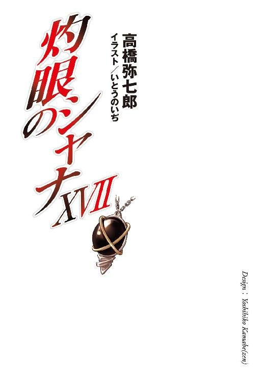
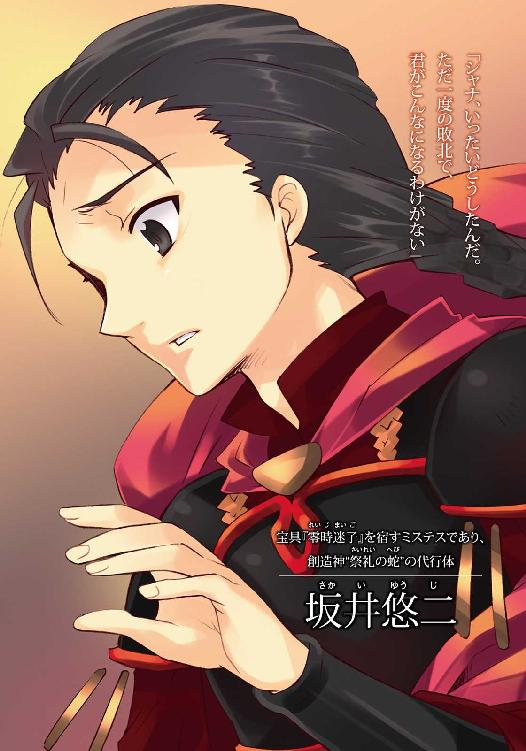
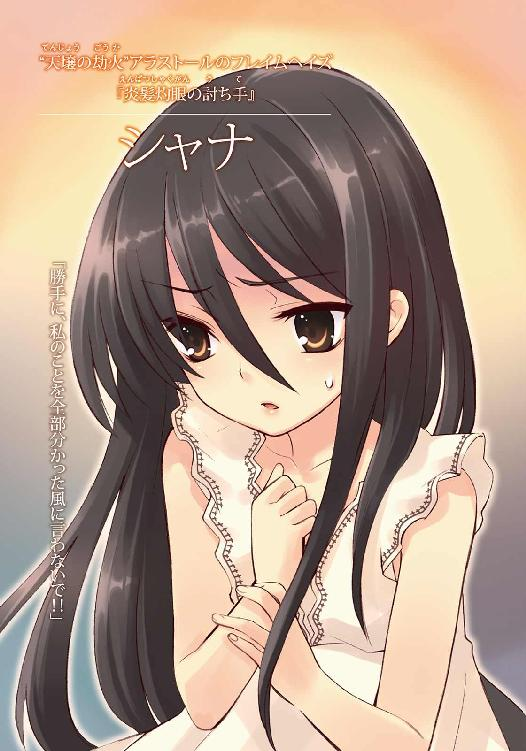
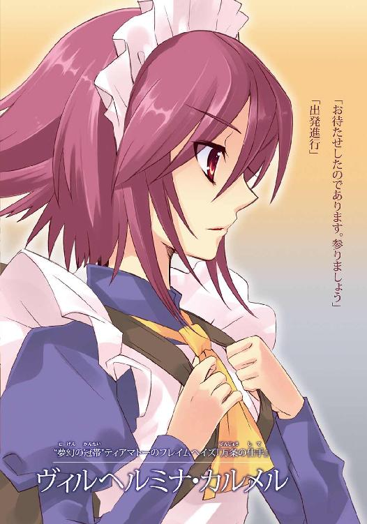
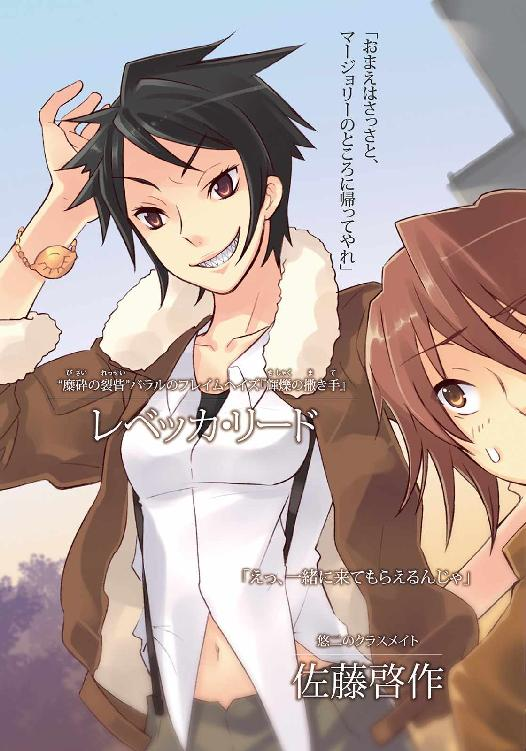
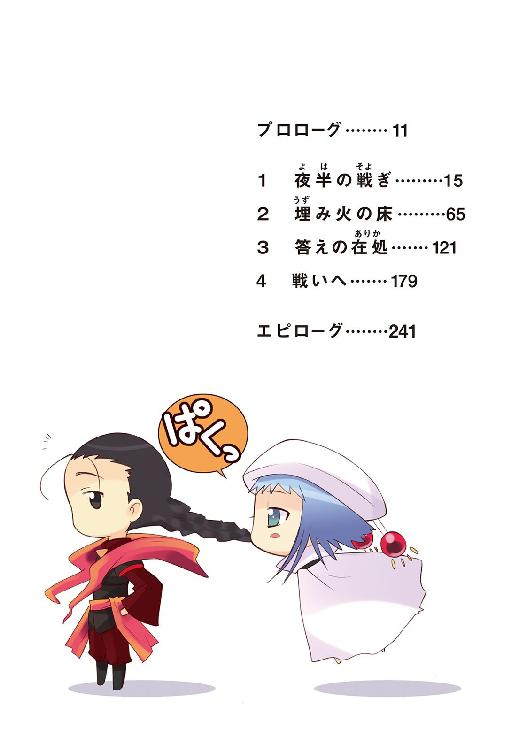
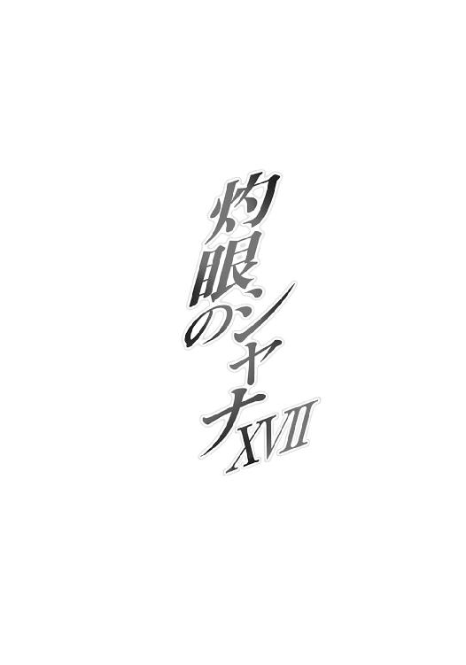
本書（電子版）に掲載されているコンテンツ（ソフトウェア／プログラム／データ／情報を含む）の著作権およびその他の権利は、すべて株式会社アスキー・メディアワークスおよび正当な権利を有する第三者に帰属しています。
法律の定めがある場合または権利者の明示的な承諾がある場合を除き、これらのコンテンツを複製・転載、改変・編集、翻案・翻訳、放送・出版、公衆送信（送信可能化を含む）・再配信、販売・頒布、貸与等に使用することはできません。
プロローグ
いつまでも、いつまでも、回り続ける。
黒い炎で編まれた封絶の中を、二人で。
大太刀で斬り付け、紅蓮の炎を放ち、巨大な拳を具現化させ、戦い続ける自分。
称号『炎髪灼眼の討ち手』を持つフレイムヘイズ。
名前は、シャナ。
それは、戦っている少年のくれた、名前。
大太刀を剣で受け、炎を結界で防ぎ、漆黒の竜尾を振るい、向かってくる少年。
神の真名──〝祭礼の蛇〟を冠する〝ミステス〟。
名前は、坂井悠二。
二人で、黒い炎で編まれた封絶の中を。
いつまでも、いつまでも、回り続ける。
激突して、しかし触れ合うことはない。
（分からない）
少年の行為が、理解できない。
（どうして？）
少年の願いなら、理解できる。
（どうしてなの、悠二？）
少年の願いは、理路整然としていた。誰もが知っていて、どうしようもない......そんな世界の理を、自身と合一した強大な神とともに、変えようとしている。
（でも、どうしてなの、悠二？）
自分は世界のバランスを守るために戦う異能者・フレイムヘイズ。その使命に生きることを誓い、決して曲がることはない。言葉によっても、力によっても。
だというのに、
（どうして──私に手を伸ばすの、悠二？）
掴まれても抗うだけなのに。
抗うことを、誰よりも知っているはずなのに。
少年は、手を伸ばしてくる。
（いや）
近づく掌が視界を覆い尽くし、
（やめて、悠二──）
自分の全てを──
「──っ！」
そこで、目が覚めた。
視界を覆っていたのは、自分。
両の目を塞ぐように、腕を被せていた。
「......」
腕の下、荒くなっていた気息を、一つ、二つ、大きく深呼吸して整える。
そうしてようやく、自分が天蓋付きの大きく柔らかなベッドに、埋もれるように身を横たえていたことを思い出した。敵本拠地の一郭に幽閉されてから、おそらく数日が過ぎている。
重さ以上に重く感じた腕が煩わしくなって、たまらず振り払った。
と、薄暗い照明の下、手首にある腕輪状のものが、鈍く縁を光らせた。
細い鎖で編まれたそれは、単なるアクセサリーではない。自分の討ち手としての力を封じる特別な宝具である。そう聞かされ、また実際、人並みの力しか発揮できなくなっている。
炎髪も灼眼も、紅蓮の煌きを失い、黒く冷えている。
神通無比の大太刀『贄殿遮那』は取り上げられた。
自在の黒衣『夜笠』を身に纏うこともできない。
なにより、首に〝コキュートス〟がかけられていない。
彼女と契約し異能の力を与える〝紅世の王〟、魔神〝天壌の劫火〟アラストールの意思を表出させる神器──黒い宝石に交差する金の輪を意匠したペンダントが、なかった。
今の自分は、たった一人。
もう一度、目を瞑って、また開ける。
光景には、なんの変わりもない。
なにもかもが、夢ではない。
現実が、広がっていた。
１ 夜半の戦ぎ
中国・上海から西に約百キロ。
江蘇・浙江両省の境に、中国でも三番目に大きな面積を持つ淡水湖がある。
名を太湖。
水深は浅く、湖面も穏やか、島嶼も多い景勝地である。
この西岸、なだらかな裾野を広げる丘陵群の、やや奥まった外れに、頭一つ抜けた山が鎮座している。美景を望む良地ながら、肝心の湖が遠いこと、樹相薄い岩山で、暮らすに不向きな地勢であることから、観光施設の類は設けられず、近隣には民家の一軒すら見えない。
曇天の暗夜ともなれば、高き山体は闇の彼方へと姿を溶かし、一帯は人知の及ばぬ絶境へと変じる。冬の凍て付く山颪だけが、深奥からの便りとして麓に駆け下っていた。
その彼方、また深奥、薄く霜張る荒涼の野に、環が形作られている。
頂に石を一投げできる程度の空間だけを残した、広大な山膚の全面を、異形の軍勢が所狭しと埋め尽くしていたのだった。
人の身に刀槍甲冑で武装した者から、種々諸々な野獣の姿を取る者、神話伝承に伝え聞く悪魔や怪物と見える者、果ては道具器物としか思えない者までが、吹き荒ぶ寒風の中、彫像のように静かに、環の中心に開いた空間へと視線を注いでいた。
と、その中に、ゆるり歩を進める者がある。
オールバックに整えたプラチナブロンドの下、目線を隠すサングラスをかけ、ダークスーツをラフに着こなす長身の男。右の手には軽く、径太く穂先も長大な槍を携えていた。
不敵な笑みとともに、男は頂のさらに上、雲厚い天を仰ぐ。
そうして何気なく、槍を大きく──動作においても、体積においても──振り上げた。
ほど近き曇空を衝くまでに巨大化した槍は、それを握るに相応しい豪腕の導きを受け、穂先を頂の地面へと突き刺した。落雷にも勝る地響きが、視界なき天地に渡り行く。
肩から先以外を一切動じさせず、肩から先だけで恐るべき一撃を放った男は、槍から離した手を元の大きさへと戻し、自らの打ち立てた槍による不動の柱、その上に広がる黒雲、さらにその上を、サングラス越しに仰ぐ。
いつしか、周囲を取り巻いた異形の軍勢も目線を同じく、見上げていた。
それら無数の目が、最初に捉えた変化は、黒雲に穿たれた、点。
砂粒のように小さく、針のように鋭い、星の光だった。
黒雲の切れ間より光が差した、わけではない。
曇空に真円の穴が一点、開いていた。
鈍く流れる雲に開いた不動の穴は、見る間に点から円へと広がり、山頂を取り巻き集う異形の軍勢を全て、晶々たる星の光で照らすほどまでとなってから、止まった。
山には、驚愕嘆声の欠片さえ漏れない。
彼らは、頭上で起きている怪現象が、己の所属する組織の本拠地たる、不可視の殻に包まれた移動要塞到来の光景だと知っていた。なにより今は、余計なことに声を使ってなどいられない。居並ぶ口の全ては、これから起こるだろう......あるいは、起こるべき、起こってほしい、という期待の圧力によって、あげるべき声を封じ、溜め込んでいるのだった。
そして、期待は果たされる。
見上げていた中、気付いた。
地に星か、と誰もが見やる。
眩い光が、開けられた広場に、キラキラと浮かび上がっていた。
色は、銀。
山頂一帯を銀光の粒が飾り、徐々にその密度を増していた。粒は星雲のように間隙を埋めて輝きを強め、光の原が生まれてゆく。
これら不可思議な現象に、どよめきが軍勢の間で、ようやく漂った。
不意に、
頭上から、戦慄を伴う巨大な気配が彼らに降りかかった。
超重の豪雨のように。
灼熱の陽光のように。
恐怖の雪崩のように。
地を覆う銀色へと目を落としていた彼らが、体を押さえつける重さ熱さ恐れの全てに逆らって、ただ溜め込んだ期待と欲求の赴くまま、再び頭上を見上げる。
サングラスの男も、動作は同じく、思いは静かに、見上げた。
その先、両の手を広げ緩やかに舞い降りる黒い何者かが、在る。
黒と銀が天地全てを包み込んでいる、そんな錯覚を振り撒きつつ、
トン、
と黒い何者かは、己を迎えるべく突き立てられた、巨大な槍の石突へと降り立った。
瞬間、
槍が──異形の軍勢の誰もが、頑健無比にして不破の宝具たるを目に心に焼き付けてきた剛槍『神鉄如意』が──まるで飴細工のように「ひゅるり」と容易く撓み、軽く渦巻いた。
息を呑む彼らの前で、槍は複雑かつ優美に曲がりくねってゆく。
現れた形は、未知の工法で織り成された祭壇とも、鎌首をもたげる大蛇の像とも見えた。
鎌首の挑みかかる寸地の前に、本来その槍を振るうべき、サングラスの男が立っている。
彼を見下ろす鎌首の先端、大蛇を足下に敷いて立つ主として、石突に佇むモノが、在る。
それは、少年と見える誰か。
雲に開いた星空を背に、広がる銀の影を敷くそれは、緋色の凱甲と衣を纏い、漆黒の竜尾を髪のように後頭から伸ばしていた。装いこそ、取り巻く異形らにとって珍しいものではなかったが、総身に充溢する存在感には、尋常ならざる大きさを覚えさせられる。
聳える孤嶽の前に立たされているが如き痺れる放心に、軍勢が支配される中、
「......」
寸前に立たされた男だけが、困り顔とも見える笑みを浮かべ、サングラスを取った。
目線は鋭くも、険がない。
対する『少年と見えるモノ』は、鷹揚に微笑み返し、口を開く。
「久しくもあり、久しくもなし、か」
「......は」
眼前に在る姿の、核たる存在、少年の姿、双方を男は知っていた。
核たる存在は言うまでもなく、己を眷属として生み出した偉大なる神。
少年の姿は、辺地における戦いの最中、無謀にも挑んできた人間の食い滓。
半ば以上は自らが引き合わせた奇縁、その齎された成り行きの結実に、今度はハッキリと見て分かる困った笑いを漏らし、軽く顔を俯ける。ついでと、
「なんとも異なお召し物ですな、我らが盟主殿」
からかいとも取れる声を放った。
事前に、この『少年と見えるモノ』についての説明は受けている。どの程度、少年としての自意識、あるいは未練が残っているか、この問いで彼なりに計ってみるつもりだった。
少年の殻を被った彼らの盟主なのか。
彼らの盟主を騙り振る舞う少年なのか。
返る答えは、
「当世風、嫌いではあるまい？」
悠然たる笑いと、堂々たる言葉だった。
男の困った笑いが、おかしみのそれへと変じる。
「......たしかに」
言葉に仄か漂う諧謔の風韻には、覚えがあった。
得も言われぬ懐かしさが、一敗地に塗れたかつての震撼を呼び覚まし、呼び覚まされた震撼が、炎のような闘争心を燃え上がらせ、燃え上がった闘争心が、使命感によって方向付けられる。これら様々の経路を辿った感情が、人の身の輪郭に強烈な力を漲らせ、付き従う眷属として取るべき行動を、ようやくに取らせた。
ズン、と山頂の岩盤を砕くほどに強烈な、片膝を地に着ける、臣下の礼を。
「大命参陣への御許可を、我らが盟主──創造神〝祭礼の蛇〟坂井悠二」
言上して深々と頭を垂れる、その姿に、異形の軍勢が一斉に倣う。
銀の輝きを頂いた山が、一斉に落ちる膝の重みに、大きく震えた。
星空を背負う彼らの盟主は、己が眷属へと告げる。
「許す。よくぞ参った、我が将軍──〝千変〟シュドナイ」
頭上、軍勢を収容するための宮橋が、不可視の要塞から下されつつあった。
この世に〝紅世の徒〟と呼ばれる者たちが闊歩している。
『歩いてゆけない隣』の一名を持つ異世界、〝紅世〟より渡り来た種族である。
彼らは、自身を異世界に存在させるため、また自身の望みを果たす力とすべく、人間を喰らった。この世に在るための根源の力──〝存在の力〟への分解と吸収、という形で。
喰われた人間は存在しなかったことになり、周囲の記憶、本人の痕跡、諸共に消える。
喰われた人間が本来、世界に及ぼすはずだった影響や繋がりは、途絶え、歪んでゆく。
〝紅世〟に在る一部の王たちは、この歪みがいずれ齎す大災厄を恐れ、警鐘を鳴らした。
が、そんなことは知ったことではなかった。
そう、〝紅世の徒〟たちは考えていた。
否、考えることすら、しなかった。
この世に在る〝紅世の徒〟の中で、最大級の集団として知られる［仮装舞踏会］。
いずれもが強大な〝紅世の王〟である『三柱臣』の下、古来より互助共生の組織として地歩を固めてきた彼らは今、俄かにその動きを活発化させていた。
表立った動きとしては、彼ら〝徒〟を追う異能の討ち手『フレイムヘイズ』らの情報提供・支援施設である外界宿に対する、一気呵成の大攻勢に出たことである。
まず、その頭脳と運行における指導層を殲滅することで大方針の画策と迅速な対処を不可能とし、次に、地勢的な結節部となる主要拠点を多く陥落させることで連携を寸断し、遂には、中国の上海総本部における一大会戦で東アジア地域の敵戦力を一掃した。
一方、密かな動きとしては、宝具『零時迷子』を標的とした、彼ら［仮装舞踏会］の盟主を放逐された場所より帰還させるための、一連の複雑な術策である。
これは、毎夜零時に〝存在の力〟を回復させる永久機関『零時迷子』へと、『大命詩篇』と呼ばれる特殊な自在法を打ち込むことで、未だ遠きに在る盟主本体の意思をトレースする仮想意思総体を構成、その代行体へと変異させ、以降の指揮を仰ぐものである。
ここまでの、『第一段階』と彼らが呼ぶ下準備は、幾つかの不確定要素を内包しつつも、全体としてはほぼ計画通りに進行していた。次なる『第二段階』は、以上の成功を下地にしつつ、より困難、かつ組織の総力を挙げた大々的な作戦行動となる予定である。
今、彼ら［仮装舞踏会］が世界中に散らばっていた数千年の成果、無数の構成員らを、本拠地たる『星黎殿』へと集結させたのは、まさにその遂行のためだった。
この移動要塞は、内部の気配や存在を隠蔽する殻『秘匿の聖室』に全体を包まれ、上半分が城壁や尖塔を並べる城砦、下半分が掩体道を張り出した岩塊、という構造になっている。組織枢要の秘匿施設は、主に下部を占める分厚い岩塊の奥深くに隠されていた。
「──以上が、私の素案だ」
声渡る、殺風景な広いドーム型の部屋『祀竈閣』は、岩塊の中央部に設けられている。『星黎殿』の司令室であり、また同時に重要な協議を執り行う議場でもあった。
「具体的な進攻路と実働の手順については、各人思うところもあるだろうが、まずは作戦の大枠について、改めて協議してもらいたい。将軍の連れ帰った面々と、元から動いている者たちの間で、基本方針の捉え方に齟齬があってはいけないからね」
現在、この部屋は、後者の役割を果たしている。即ち、来る大きな戦いに備えた、将帥・部隊長クラスの〝徒〟による作戦会議の場、である。
「現状、全方位の防衛線をがら空きにして、フレイムヘイズたちに誘いをかけているが......流石に、後先考えず仕掛けてくるほど軽率でもないようだ。予定どおり、残兵を集結させた敵防衛拠点への攻撃、各方面から侵入する敵軍の邀撃、この二つが要諦となるだろうね」
部屋の床は擂鉢状、同心円を描いて下りる一段ずつの広い階段となっており、段のそこここに異形人型、数十もの威容が不規則に陣取っている。いずれも組織で名の知れた、一騎当千の強者たちである。
階段の底、部屋の中心には、上向きに口を開けた大竈、宝具『ゲーヒンノム』が据えられている。満たされた灰は、いずれ彼らが立つであろう戦場を、灰の凹凸による細密な立体地図として表していた。
「これらを踏まえた上で、存分に話し合っておくれな」
その傍らに立ち、議事の前置きを終えたのは、三眼の右目に眼帯をつけた、妙齢の美女。タイトな灰色のドレスに様々な装飾品を提げ、体の周囲には、長い鎖を浮かべている。
三柱臣の参謀、〝逆理の裁者〟ベルペオルである。
盟主不在の間、組織を実質的に取り仕切ってきた〝王〟......あるいはフレイムヘイズ陣営が最も恐れる神算鬼謀の女怪は、仮の帰還成った今も変わらず、作戦を主導する地位にある。
と、大竈の地図を挟んで反対側、
「各方面の防衛拠点に討ち手どもが集結するのを待ってから攻撃を加え、一転して勢力圏に防衛区域を広く展開、侵入してくる集団を逐次捕捉・撃滅する、か......守りの戦としては実に常識的な、面白みのない方針だな」
剛槍を肩に置いて立つサングラスの男、三柱臣の将軍〝千変〟シュドナイが、珍しく口火を切った。声色は、実につまらなさげである。
「これだけの軍勢を集めたというのに、随分と慎重じゃないか。兵数では我が方が圧倒的に有利なんだ。わざわざ敵に態勢を整える間を与えるよりは、集結の予想される重要拠点に先制攻撃をかけ、その策動を事前に潰しておいた方が良くはないか」
彼の提案は、無謀でも虚勢でもない。数多くの実績と経験──近くは外界宿首脳部の殲滅や上海会戦における完勝──から来る、確とした見立てだった。
ちなみに、真っ先に異論を唱えたのは、本心からの反抗ではない。下僚たる各将帥らの率直な発言を促すため、兵事における長である将軍が参謀に物申したまでである。一旦の紛糾を経ることで総意をより強く纏める、これはいわば儀式のようなものだった。
上官の意を汲んで、黒衣の男が姿勢を正し発言する。
「前提からの話となりますが......道具どもは上海での大敗直後という現状で、またも兵を集結させる、軍と軍の戦いを選ぶでしょうか？ ［革正団］覆滅戦のように、最小単位による広域への浸透戦術を取られると、手勢を纏めている分、我が方が後手に回る危険性も......」
生真面目な青年と見えるその〝徒〟は〝獰暴の鞍〟オロバス。
持てる実力は十分ながら、未だ目立った大功に恵まれぬため、〝王〟の呼称を得てはいない。この戦でそうなるはず、と衆目の一致する組織きっての俊秀だった。
同じく議論を活性化させるため、白衣の女が反論する。
「話は逆ですわ。上海の総員殲滅、という先例があるからこそ、彼らは守りを固めるのです。残された重要拠点まで失陥すれば、その支援体制自体が瓦解してしまうでしょう？ 彼らの敵は我々だけではありませんし、残った城を固守せざるを得ませんよ、ふふ」
どことなく人を食った風な物言いをする女は〝朧光の衣〟レライエ。
オロバスと共にシュドナイの副官として従軍してきた自在師である。能力は元より、場の空気を読む周旋の才に長けている点でも重宝されていた。
二人に触発されてか、階段の中ほどから平淡な声が零れる。
「左様。仮に、敵方が八方破れに攻め入ったとして、将軍の言われたとおり兵数に勝り、地勢の把握も万全な我らが後れを取るはずもない。捜索猟兵による防衛区画の索敵体制も、既に整備完了している」
発言したのは、どことなく案山子を想起させる姿の〝煬煽〟ハボリム。
表情の見えない、重そうな双頭のガスマスクを着け、薄っぺらいボロマントを纏って、体も隠している。誰もが認める腕利きながら、本拠地たる『星黎殿』へも滅多に姿を見せない、組織の最前線に立つ実戦派の〝王〟として有名だった。
次いで、ベルペオルの後方から大音声が上がる。
「ふん、容易く予想できる程度の定石常道についてなら、我らが参謀閣下の作戦で、既に万全よ！ 我らが今ここで論ずべきは、そこから外れる不測邪道の変事が起きた際の、円滑な連携についてだろう」
分厚い胸を張るのは〝驀地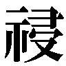〟リベザル。
象ほどもある巨躯を直立させた三本角の甲虫、という異形の〝王〟だった。四本ある腕の、下二本を硬く腕組みして、その上から水晶の数珠を巻きつけている。勇猛で鳴らす、ベルペオル直属の巡回士である。
と、その彼に、まるでスポットライトのような、鉄色の光がぶつけられた。
「む!?」
「懸念、無用」
加えて、感情の籠らない低い声を発したのは、遠くリベザルの対面で宙に浮く自在式。人間大の円形の中に五芒星、その中央には半ば閉じた目の紋章が見える。
「我が、此処に在る。定石常道、不測邪道、いずれの対処も、磐石である」
「デカラビア！」
リベザルは、浴びせられる光や自身への異論ではなく、その姿の無礼さを怒鳴りつけた。
「両閣下の御前だぞ、発言するならば身を晒さんか、この不敬者が！」
浮いていた自在式の目が、重そうに瞼を開いて、糾弾者を見返す。
「不敬とは、心外。先の発言は、貴卿に対するものである」
「御前会議の意味を知らんのか！ いつになったら礼法を身に付ける、泥魚め！」
「......」
ふ、と自在式が消え、階段の広い段部を、同色の光が緩い波紋として広がってゆく。やがて、水面と錯覚する床から〝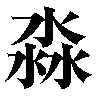渺吏〟デカラビアが、頭だけを現した。
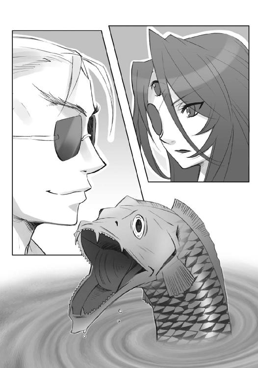
無光沢の鱗に藻の斑を纏う、細長い大魚の、鎌首だけを。
感情のない目の、僅かに焦点だけを合わせて、
「参謀〝逆理の裁者〟ベルペオル様。将軍〝千変〟シュドナイ様。計らずとはいえ我が非礼、お詫び申し上げる......何卒御寛恕頂きたく」
と下方の二人に謝した。
知らないと罵られた礼法通り、しかし先と同じ感情を籠めない声色、その不自然な行い自体に込められた嘲弄（と聞く側が解釈できる）に、リベザルは思わず拳を強く握りしめる。
「貴様......！」
「やめなってば、リベザル。御前会議なんでしょ？」
隣にいた、ブカブカのローブに袋を背負う子供と見える〝徒〟、〝蠱溺の杯〟ピルソインが、慌てて制止のため、下一組の腕にとびついた。
デカラビアの方はといえば、魚の口元までを沈め、これ見よがしにブクブクと床面を鉄色に泡立てている。
その険悪な空気をシュドナイが、
「デカラビア、謝罪は入れるが、少しは周囲の反応にも気を払え。おまえに差配を預ける俺たちの身にもなってみろ、大命の遂行を下らん不和で躓かせてくれるな」
軽く、しかし強く、嗜めた。
「は、戒慎します」
答えて、デカラビアは床に魚身を沈めてゆく。それが完全に見えなくなり、波紋も消えてから、先より小さな自在法を、再び点した。これは自重の証である。
ベルペオルが何事か小さく呟いて笑い、額と左の双眸を、周囲に巡らせた。
「さて、場の空気も程よく温まったろう、存分に討議を始めておくれ」
一斉の返礼が『祀竈閣』に響き渡る。
漆黒の水晶のような床に、正反対の身を映し込み、鎖を纏うベルペオルと、槍を担ぐシュドナイが並んで歩いている。
見渡す限り果てのない透き通った闇、という茫漠とした空間に、銀色の粒を固めて作られた二列の柱が、辛うじて通路としての方途を指し示していた。
この廊下は、物体として存在する場所ではない。『星黎殿』内部の空間を組み替え、離れた場所と場所を繋ぎ合わせる移動簡略化装置『銀沙回廊』だった。
簡略化と言いつつ、長い廊下を形成しているのは（緊急時には、異なる場所に向けて開いた窓や扉のように、空間同士を直接繋ぐこともできた）、足を運ぶ、という気分を使用者に感じさせるための、単なる演出である。
廊下は今も、とある場所に向かって二人を運んでいる。
数時間に及ぶ作戦会議を終えてなお、二人の歩みに疲労の色は見えない。むしろ、常にも増した心気の充溢から来る、力強ささえあった。
「ふっ」
自身のそれを感じて、シュドナイは半ば自嘲する。
「まさか、この陰気な隠れ家を、踊るように歩く日が来ようとはな」
「やれやれ、気が早いよ、将軍。我々にとっての本番は、まだまだ先だろうに」
ベルペオルは特有の含みを持たせた微笑で返した。
二人の行く手に、『銀沙回廊』出口の証である銀のアーチが見えている。
その優麗壮美な輝きにではなく、行く手に待つだろう険しさに、シュドナイはサングラスの奥で目を細めた。呟きが、零れる。
「ベルペオル」
「なんだね」
小さな声の、意外な強さに、ベルペオルは怪訝な面持ちで返した。隣を行く将軍が、心持ち歩みを緩めているのに気付いて、自身の歩調も合わせる。目線は前に向けたまま、口元の微笑を消して、
「作戦かね、将兵かね」
もう一度、自分なりの推測を交えて訊きなおした。
「いや」
否定の即答から二つ三つ、歩む間を置いてから、シュドナイは口を開く。
「盟主のことだ」
「ふむ......」
今度はベルペオルの方が、間を置いた。
「既にストラスから、説明は受けているだろう？」
「ああ。『今のところ、大命遂行の障りとなるような異常は見られない』、か」
確認する言葉、それ自体が懸念の表明だった。
［仮装舞踏会］が現在奉じる盟主は、〝祭礼の蛇〟坂井悠二を名乗る代行体として在る。
真名の後に付けられている通称『坂井悠二』、つまり少年としての体の部分は、組織が推し進める計画には含まれていない、イレギュラー的存在だった。
本来であれば、少年が宿していた宝具『零時迷子』だけを取り出し、それを核とした完全な作り物の体が、代行体という『盟主の操り人形』になるはずだった。
ところが、『零時迷子』の中で徐々に形成されつつあった仮想意思総体、他でもない彼らの真なる盟主が、自身の宿主である少年──〝徒〟にオリジナルを喰われ、世界のバランスへの緩衝材として配置された残り滓『トーチ』──の思考に興味を抱いたことで、順調に進んでいた計画に、微妙なズレが生じた。
彼、盟主〝祭礼の蛇〟は、宝具を宿したトーチでしかない〝ミステス〟と、己が仮想意思総体を融合させる形で、仮の顕現と帰還を果たすことを望み、実現させたのである。
再び立ち現れた言動は、まさにかつての彼そのものであり、かねてより目指してきた大いなる企て──『大命』に向ける熱意や覇気には、聊かの衰えもない。
が、そこに少年の意識まで加わっていることが、事態を複雑にしていた。
双方同意の上での〝ミステス〟との合一であり、鋭敏な〝存在の力〟の感知能力を備えるという不測の余禄まで齎されていたが、結果として計画のズレは、より大きくなった。
具体的には、フレイムヘイズ『炎髪灼眼の討ち手』捕縛、という挙に出たことである。
この討ち手は、他のフレイムヘイズとは似て非なる存在だった。
彼女の契約する〝天壌の劫火〟アラストールは、〝紅世〟における真正の神、しかも理に背く者への天罰を下す破壊神である。［仮装舞踏会］の奉じる盟主・創造神〝祭礼の蛇〟と同格の存在であり、持てる権能『審判』と『断罪』は、恐らく唯一、その行路を阻み、滅し得る......平易に言い換えると、邪魔し、殺せる、厄介な存在だった。
ゆえに、潜在的な脅威を、事前に抑える。
一見、妥当な予防措置と思えるこの行為の実態はしかし、単純、あるいは卑近な感情によって敢行されたものと、周囲には取られていた。そう、取られざるを得なかった。
創造神と合一した少年は、
破壊神と契約した少女に、
明らかな恋慕、あるいは愛情を、抱いていたからである。
少年は、大命の成就による世界の変革で、少女の、戦いに倒れ果てる運命を断ち切ろうとしており、またそれを公言もしていた。そして、どのような意図からか、少年と身を一つにする盟主も、少年の願いに力添えし、破壊神の契約者捕縛を果たしている。
両者の行動は、酔狂と言うにはあまりに危険すぎた。
盟主も少年も、多くを語らない。表には、ただ大命の遂行に向け、日々精励する姿......盟主でもあり少年でもある姿しか、盟主とも少年とも付かない姿しか、見せない。
将軍〝千変〟シュドナイは、
「今のところで済ますには、事が大きすぎるな」
と簡潔に、自身の存念を述べた。
大組織［仮装舞踏会］は今、盟主と少年の秘める核を見極められないまま、猛烈な勢いで数千年に渡る準備の蓄積を使い続けている。この不透明な現状に、組織の兵権を預かる者として警鐘を鳴らさずにはいられないのだった。
対して、参謀〝逆理の裁者〟ベルペオルは、
「たしかに、そのとおりだね」
やはり簡潔に、同意の答えを返した。加えて、組織の経略を司る者として、現在の盟主の在り様も考慮に入れた、当面の見解と方針を表明する。
「でも、今のところを逃げ口上に、手をこまねいているつもりもないよ。問題があるかどうかは、今から調査させるところさ」
「先刻、デカラビアの連れてきた客か。たしかに、奴ならばあるいは......」
二人の足は、いつしか止まっていた。
近付かない出口を眺めつつ、ベルペオルは言う。
「それに、もし大命の障りとなる思惑を、あの〝ミステス〟が秘していたとして、盟主が看過されるわけもなし。ただ、奇矯が性の過ぎる方ゆえ、なにを思ってのなされ様か明かしてくださらぬ、というのが......少々、不安でもある」
世にも稀な、機略縦横の参謀による愚痴だった。
笑みの気配を微か漂わせて、シュドナイは言う。
「まったくもって、ままならぬ、か？」
「ふん」
自分の常套句を将軍に先取りされたベルペオルは、これも常とは逆に、鼻で笑い返した。行く先にある銀のアーチ、その彼方にあるだろうものを見つめ、声を継ぐ。
「元より神慮は計り難きもの......とはいえ、私とお前は、用心と対処が課された使命だ。凶変に備える気構えくらいは共有しておいてもらうよ」
「分かっている」
シュドナイは、嫌味も気取りもなく、断言した。
「おまえが、見晴らして図る。俺が、戦って払う。そうして均した道を、俺のヘカテーが定め往く。それが我ら、偉大なる〝祭礼の蛇〟が眷属『三柱臣』だからな」
隣と同じく、銀のアーチをサングラスに映し、その彼方にあるだろうものを思い、
「それで──」
不意に、表情を曖昧に鈍らせた。
「当の盟主殿は軍議にも出ず、なにをしている」
「？」
ベルペオルは一瞬、微妙に話が飛んだことへの不審を抱き、次の一瞬で隠された脈絡を看破し、また次の一瞬でおかしげに笑った。
「ふふ、ヘカテーなら、最終的な座標調整の真っ最中さ。盟主とご一緒しているわけではないから安心おしよ」
あっさりと全てを見透かされて、それでもシュドナイは鈍い表情のまま答える。
「......そうか」
「今さら悋気もないだろう、みっともない」
返す言葉もなく、ただ肯定する。
「......そうだな」
「だいたい、あの子は私とは違って、仮の帰還を手放しに喜んでなどいないよ。盟主の御声が近きに在り、彼の方から語りかけられることを喜んではいても、ね」
ややの自嘲が、声に混ざった。
「至純峻厳なあの子にとって、今の状態はあくまで大命が一歩前進した、ということでしかない。ましてや入れ物などに気を引かれるはずもないさ」
「......」
答えずに、シュドナイは再び歩き出す。
自身見つけた大命の鍵たる宝具『零時迷子』と、その入れ物たる〝ミステス〟の少年が齎した思わぬ現状に、今さらの戸惑いが心中に湧き......しかも、それを不用意に、他者の思惑に聡い同輩へと漏らしてしまった愚を口惜しく思う。
（遂に果たし得た邂逅への感慨と興奮も薄れ、ようやく他のなにかを思う余裕......いや、隙ができた、というところか）
傍ら、一歩遅れて続く足音を、強いて無視して前を見た。
やはり察して、また蛇足と承知で、ベルペオルは説明を加える。
「なにより、盟主ご当人......正確には、盟主と共に在る者は、奇特なことに炎髪灼眼にご執心だ。警戒するだけ徒労というものだよ」
当然、シュドナイはこれも無視する。
と、
その髪を頬を、冴え凍る風が撫でた。
行く先、アーチの彼方から、風は来る。
からかいを制する意味からも、改めて言葉で確認する。
「『秘匿の聖室』を開けているのか」
「座標特定のため、天頂部から三分の一ほどね」
ベルペオルも無駄な追い討ちはかけず、先ほどまでの空気を忘れ、短く明確に返した。
常の状態ではあり得ない、強く冷たく吹き付けてくる風の中を、より強く歩んで、二人は『銀沙回廊』の出口たる銀のアーチを潜る。
眼前、『星黎殿』で最も高い尖塔のテラスが、唐突に広がった。
傍らで、燃え盛る松明を手に待っていた男が、深々と頭を下げる。
「やはり、長引いたようですな」
バサバサの頭髪から尖った角を伸ばし、背に蝙蝠の翼を畳み、鋭い爪を備え、鉤付きの尻尾を伸ばし、鋲付きの太いベルトに湾曲刀を提げ......スーツを纏った貧相な中年の、男だった。
この、微妙に奇妙な人物は、〝嵐蹄〟フェコルー。見た目や低姿勢な態度からは想像もつかない、『星黎殿』を守護する強大な〝紅世の王〟である。
忠実な腹心でもある男に、ベルペオルは苦心の結果を告げる。
「ああ。方面軍だけで片手の指に余るほどの、史上最大の動員数と交戦領域だからね。細かく詰めずとも、意見自体は百出だったよ。大枠以下は各軍の指揮官に任せたが......」
「どいつもこいつも数百年、事ある毎に駆り出されて集団戦闘は経験済みだ。全体の規模が大きくとも、連携さえ上手く取れていれば問題はない。そのためにデカラビアも上に据えた」
シュドナイが後を受けて補足した。
「なるほど。戦備は万全、というわけですな」
フェコルーの気弱げな受け答えには、他意というものがない。
余計な気を回さず話のできる相手、しかも無能ではない強者たる存在の有り難さを、互いの会話を経た後ゆえに、より強く感じる参謀と将軍だった。
「で、こちらの作業はどうなったね」
ベルペオルの問いにも、フェコルーは一旦頭を下げてから答える。
「はっ。目的地は既に至近とのこと。現在、大御巫ご自身による誘導で、座標の最終調整に入っているところです」
視線が、やや伏せがちなまま、テラスの外へと向けられた。
二人も視線で追う先、上方遠くに、『星黎殿』で最も高い塔が聳えている。
通常の城郭にある尖塔ではない。
豪壮巨大な碑、一塊の石塔だった。
天衝く矛とも見える大きな穂先から、やや下がって三方へと均等に、優美な踏み台が突き出ている。この塔は、人を入れる建物ではなく、人を乗せる御座なのだった。
今、踏み台の一角では、足先を軽く浮かせる一人の少女が、星天を見つめている。
大きな帽子とマントを風に靡かせ、三角の頭と遊環を備える錫杖を手にした〝紅世の王〟。
三柱臣の巫女〝頂の座〟ヘカテーである。
彼女が見つめているものは、通常『星黎殿』を覆う隠蔽の殻『秘匿の聖室』の内側に投影されている、虚構の写像ではない。ベルペオルの言ったように、殻の上部三分の一が解かれることで覗いた、真正の星天だった。
明るい水色の瞳が一心に注がれる先、彼女にしか見えない何処か、彼女の神の呼ばう声高き地へと、［仮装舞踏会］は導かれてゆく。
小さな口元には、仄かな笑みがあった。
親を恋い慕う、無垢な少女の、笑みが。
組織の狂わぬ指針の姿に、ベルペオルは満足の面持ちとなり、傍らの腹心に命じる。
「フェコルー、教授に繋いでおくれ」
「はっ！」
猫背をより屈めて、フェコルーは手にある松明、『銀沙回廊』の誘導装置『トリヴィア』で、小さくクルリと、宙に輪を描いた。
応じて、二人が通ってきた通路の出口が、銀色の煙とも雫とも見える粒となって、キラキラ散り果てる。代わりにベルペオルの前、小窓ほどに粒が渦巻き、中に空白を作った。
既にそこは、別空間へと繋がっている。
要塞下部に設けられた秘匿区画、その中でもとりわけ深い、奥の奥──とある〝紅世の王〟が、重要な作業にかかり切りになっているはずの機関大底部へと。
トンカントンカン、と金槌で叩くような音、
ギャリリリリ、と鋭く削る耳に痛い音、
ガガガガガ、と重い物を動かす音、
それぞれが自己主張激しい騒音として、銀枠の小窓から漏れ出てくる。
「聞こえるかね、カンターテ・ドミノ」
まず、ベルペオルは目当ての男の助手──話が簡単に通じる方──に話しかけた（フェコルーも教授に繋ぐよう指示されながら、その近くに『銀沙回廊』を構築している）。
《はいでございますです、軍師様！》
参謀の旧称を交えて、キビキビした返事が返ってくる。
小窓の向こうに垣間見えるのは、膨れた発条に歯車の両目を付け、頭頂にネジ巻きを刺した、機械仕掛けの顔。高度な意思総体を備える〝燐子〟、正式名称『我学の結晶エクセレント28─カンターテ・ドミノ』である。
ベルペオルは軽く声を放る。
「どの程度仕上がっているか、教授に訊いてもらえるかね」
《はいでございますです！ 教授─、軍師様が作業工程の──》
言う間に、視界の外から金属製のやっとこが、ニュ〜ッ、と伸びてくる。
《──進捗状況をお尋ねされてるんでほはひはふひはははは！》
やっとこで抓り上げる先、小窓の奥から、
《ドォーミノォーッ!? んなぁーに手を休めていぃーるんです！ 今が今こそ今だから！ シャーキシャキドコドコ働きまくるんでぇーすよー!?》
甲高く素っ頓狂な絶叫が響いてきた。
ドミノは抓られながら、自分の主に説明する。
《ひょ、ひょうひゅ、そうじゃなくて、軍師様が》
《んんー？》
やっとこと同じように、頭が枠の外からニュ〜ッと現れた。分厚いメガネをかけ、革のベルトで髪をまとめた、やせぎすの男......の首である。
強大なる〝紅世の王〟にして世に聞こえた変人、［仮装舞踏会］の客分にして大命遂行の一翼を技術面で担う『教授』こと〝探耽求究〟ダンタリオン。その首が縮んで、体の方を引き寄せた。頭だけが動かぬまま、ベルペオルへと不平をぶつける。
《んなぁーんですかぁー、ベルペオル。私が今、最も忙しいこぉーとは、貴女が一ぃー番分ぁーかっているはずでぇーすがねえー？》
「ヘカテーが、座標の最終調整に入っているんでね。そろそろ仕上げてもらわないと、大命の第二段階発動の時限が来てしまうよ。どんなもんだい？」
問いに、教授はガクリと前に傾き、次いでビヨンと胸を張る。
《第ぃー二段階の発動に必要な作ぁー業はとぉーうに、終了完了コンプリィーットしぃーています!! 現ーっ在、取ぉーり掛かっているのは、『こぉーんなこともあろうかと!!』と難局をブゥーッレイクする場合に備えたスゥーッペシャルデバイスの搭載作業ーっです......》
ふと、表情から起伏の弾みが消え、改めて歓喜の笑みが爆発する。
《......とぉーうとう！ 『久遠の陥穽』へと、手を伸ばす時がやーってきましたねぇー!! 神をも葬る不帰の秘法、そぉーの観察研究実験解明!! こぉーれほどェエーキサイティン》
必要なことを聞き終えたベルペオルは掌を挙げ、フェコルーに『銀沙回廊』を閉じさせた。
「......」
気付けば、シュドナイがいない。
フェコルーに目をやると、彼は顔だけを向けて示した。
「......ふむ」
ベルペオルも見つけて、不分明な笑みを漏らす。
いつの間にか、シュドナイは天衝く石塔に突き出した三つの踏み台、ヘカテーの左隣に位置するそれに、降り立っていた。要塞の中で一箇所のみ──盟主の御座たる石塔の穂先──を除いた、最も高い場所からの眺めを、久方ぶりに楽しむ。
（ふん、退屈な神棚としか思っていなかったが......こうして見ると悪くもない）
開けられた『秘匿の聖室』の彼方、突き進むことで生まれる強風と、流れ過ぎる影の起伏からなる大地、満天に星を散りばめた夜空、全てが総身へと染みるように感じられた。
その感慨を同じくしているだろう巫女へと、まずは将軍として声をかける。
「課された盟約八つ、俺の分担は、滞りなく果たし終えたぞ。これで眷族の本義へと立ち返る許しを貰えるかな、俺の可愛い〝頂の座〟ヘカテー？」
互いに視線を前に向けた沈黙が数秒、
「煙草は」
「ん？」
ヘカテーが、小さく呟いていた。仄かな笑みも、そのままに。
「止められなかったようですね」
「盟約より軽く聞いたつもりもなかったが、どうも、な」
肩を竦めて、シュドナイも笑い返す。
聞くでもなく聞いて、ヘカテーは再び。
「それと、私はあなたのものではありません」
「そうか、それは残念だ。やはりなかなか、追い越せんものだ」
楽しむように言う彼に、また。
「元より、私が許すものでもありませんが......よく帰りました、将軍」
「！」
「後は、共に大命の成就を目指すのみ」
「く、くく」
シュドナイは肩を震わせて忍び笑いを漏らすと、手に提げていた剛槍『神鉄如意』を風切って一回転、ドン、と力感も露わに肩へと担ぎ上げた。その弾みか、哄笑が湧く。
「はぁーっははははははははは!!」
「やれやれ」
いつしかベルペオルも、残った踏み台の上、ヘカテーの右隣にあった。
「無用な警戒には細心だというのに、いざ当人の前に出ると大胆だねえ」
同じく二人の方に目をやらず、『星黎殿』の行く先だけに、三分の二の視線を注ぐ。
「なんのことですか？」
視線を動かさず、問うヘカテーの仄かな笑み、
「ふん、なんでもないさ」
同じく前を見据える、シュドナイの不敵な笑み、
「さあて、なんだったかね」
言葉を濁し遠くを仰ぐ、ベルペオルの含んだ笑み、
三柱臣各々の思いを呑みこんで、鮮やかな星天は無辺の懐を、ただ広げる。
ヘカテーの口から、
「未踏も遼遠も、越えてみせる──今こそ」
小さな呟きが零れ、無辺へと挑むように混じり、渉っていった。
その笑みに、微かな陰が過ぎる。
同じ星天を、要塞の異なる場所から、対照的な表情で見上げている少女がいた。
囚われの『炎髪灼眼の討ち手』シャナである。
この要塞へと攫われてきた彼女は、薄暗い格子牢に閉じ込められているわけでも、縄や鎖で拘束されているわけでもない。一人、石造りのテラスに佇んでいるだけ。薄手のナイトドレスを纏う堂々とした様相は、虜囚の惨めさなど微塵も感じさせない。見上げる表情も、静かなものだった。
ただ、事実としては、全き幽閉である。
彼女が自由行動を許されているのは、このテラスを含めた、大きな部屋のみ。
豪奢な天蓋付きのベッド、一揃いの椅子とテーブル、身の丈を軽く超える鏡台、続きで風呂場とトイレ、壁には装飾として古めかしいタペストリーや武具等々が備え付けられている。
身の回りの世話も、白い覆面と装束に身を包む女性の〝徒〟か〝燐子〟らしき者（今の彼女には正体を看破することもできない）が二人、無言で淡々とこなしてくれる。
物と待遇の整った、本来は客室だろうここは、しかし厳然たる牢獄だった。おとなしく幽囚の身として過ごすなら、居心地はそれほど悪いものではないはずである。
もちろん、シャナには居心地が悪かった。
眼下、〝紅世の徒〟を満載していずこかへと向かう敵の本拠地に囚われている、という危機感から、だけではない。行動の自由を制限され、狭い場所に押し込められている、という閉塞感から、だけでもない。坂井悠二と戦い、敗北し、今のような境遇に落とされたことへの屈辱感から、だけでもない。
なにより、おとなしく幽囚の身で在り続けている自分が、許せない。
たとえ、そうせざるを得ない状況に置かれていたとしても。
（不甲斐ない）
グッ、と強くテラスの手すりを握ると、握る手の方が痛くなる。
その右の手首に、細い鎖で編まれた、フレイムヘイズとしての力を封じる宝具が見えた。
無駄と知りつつ、部屋に飾られた剣で鎖を切ろうとして手首を傷付け、世話役に手当てを受けたのは初日。城郭の構造を探るため、テラスから屋根に上ったところを、見回りをしていた〝徒〟に連れ戻されたのはその翌日。他にも色々、やれることはやって、図るべきは図ったが、最終的には一つの障壁が立ち塞がり、能動の意気を失うこととなった。
人間並みの力しかない今の自分では〝徒〟に勝てない、という障壁が。
腕力は元より、機転や運であっても、どうにもならない壁が、両種族の間には厳然と存在する。彼女を世話している〝徒〟、あるいは〝燐子〟にさえ、挑めば即座に捻り潰される。
だろう、は付かない。
捻り潰される。
普段から無意識に、フレイムヘイズの力を活用し過ごしてきた身である。ただの小柄な女の子と人外の差についても、ハッキリと実感できた。
そんな己の無力さが、契約をする前の、人間だった頃の自分を想起させる。
（何年、前だろう）
虜囚への尋問も珍客への面会も一切ない、ただ一人ここにいる孤立感が、物思いに耽る時間を自然と増やしていた。そして、
（人間だった頃にも、なかったかな）
こういう状況になって初めて、気付かされている。
十数年の人生で、これほど長い時間を、無為に過ごした経験がなかったことに。
（こんなに、本当に、なにもしないのは）
手に僅か残っていた力を抜き、手すりに寄りかかって星空を眺める。それだけしか、今の彼女にはできないのだった。眺める中で、当て所もなく思いだけが巡る。
御崎市で、何気ない全てに穏やかな安らぎを得た日々、
フレイムヘイズとなり、〝徒〟を追ってきた日々、
幼少からの、勉学と鍛錬に明け暮れた日々、
次々と光景は遡ってゆくが、どの時点でも、なにかを感じたり、なにかを得たり、なにかを考えたり......今のように長く、ずっとなにもしない、という時はなかった。
（どうすれば、いいのかな）
やれることをやり尽くし、考えに考え抜いた後、訪れる空白に、ただ戸惑うしかない。
ふと、手癖として胸元に手をやって、今度は物理的な空白に気付いた。
（アラストールも、いない）
問いかけに何らかの答えを齎し、混迷に行動の契機となる指示を下し、なによりフレイムヘイズとしてどうすべきかを断固と口にしてくれる〝天壌の劫火〟アラストール、その意思を表出させるペンダント〝コキュートス〟が、今はない。
（一人ぼっちだ）
改めてその言葉を反芻し、うそ寒い思いに駆られる。
フレイムヘイズとなって以来、初めてのことだった。
彼の存在を、あらゆる現象において捉えることができない、というだけで、情けないことに世界の圧力が高まり、自身は小さくなったように思えてくる。
広大な『星黎殿』、〝紅世の徒〟を数多く隠す要塞を一望できるテラスに立っていると、その圧力がより強く、小ささがより明確に、感じられた。それでもなお立ち続けているのは、単に逃げ去ることを良しとしない、自身の矜持ゆえである。
（少しだけ、『天道宮』に似てるかな）
アラストールのことを思う内に、何気なく、自分の育った場所を連想する。
建築様式も運用方法も異なる二つの宝具に、慣れ親しんだ者ゆえの既視感が過ぎったのだった。過ぎって、嬉しさとも寂しさとも付かない気持ちが、胸を締め付ける。
こことは対照的に、常に陽光が降り注ぎ、温かな人と心に溢れていた故郷。
移動城砦『天道宮』。
（人間だった頃、か）
フレイムヘイズとして契約する以前、答えを求めても得られない、完全な一人として在った頃、自分はどうしていたのか、今のような気持ちを覚えていただろうか、それらの答えを探る内に、思いは連鎖する。
（そうだ、本当の一人ぼっちは、あのとき......）
育ての親たる三人（正確には四人だったが、巣立つ直前までそうとは知らされなかった）、アラストール、ヴィルヘルミナ、そしてシロと過ごしていた、厳しくも幸せな日々の中、広い『天道宮』の知らない区画に入って、迷子になったことがあった。
そこは倉庫の一郭で、実際には出口と五十メートルも離れていなかったが、幼い子供には、薄暗い倉庫の、出口も見えない隔たりは、無限の遠さに思えた。
（どうして、あんなところに入ったんだろう？）
今となっては、もう覚えていない。
覚えているのは、当時のアラストールが、鎮座した場所から動けないと知っていたこと。ヴィルヘルミナが、買出しに行って不在と知っていたこと。だから、一人ぼっちで迷ってしまった自分は帰れない、その思いばかりが大きくなって、心細くてたまらなくなったこと。
（あの頃は、よく泣いてた）
泣いて泣いて泣き疲れて、荷物の陰で蹲っていたそのとき、彼が来てくれた。
（......シロ）
襤褸を纏った白骨、名もない少女に体術を叩き込んできた師が、常のように唐突に襲い掛かってくるでもなく、ふらりと目の前に現れて、また歩き出したのだった。
彼は、手を差し伸べてくれたのではなかった。助け起こしてくれたのでも、抱きかかえてくれたのでもなかった。ただ現れて、先に立って歩いていっただけだった。
だから、自分で立ち上がり、付いていって、ようやく出口を見つけた。
そして、彼はそのまま前を歩き、やがて一本の菩提樹の木陰で、昼寝でもするかのようにもたれかかって寝転んだ。釣られて、彼と背中合わせに幹へと背を預け、陽光の中で気持ちよく眠った。以後、その木陰がお気に入りの場所になったこと、帰ってきたヴィルヘルミナが、この光景に目を丸くして驚いていたことまで、思いは巡る。
（......）
翻って一人、途方に暮れている、今の自分を思う。
あのとき、ふらりと現れたシロは、もう、来ない。
自分の手で、殺した。
限界まで力を吐き出した彼と戦い、自分が勝って生き残り、彼は敗れて死んだ。
（......）
辛い、しかし熱くて愛おしい、その別れの光景が脳裏に浮かぶ。崩壊してゆく『天道宮』の中、横たわる彼の傍らに寄り添い、手を握って言葉を交わした、光景が。
と、
（──「 いつか 」──）
突然、その光景の中で熱く爆ぜるように、
（──「 自分で 」──）
なにかが、その光景の中で鋭く刺すように、
（──「 見つけろ 」──）
色鮮やかに蘇って、繋がりかけた、そのとき、
コンコン、
誰かが、部屋の扉を叩いた。
思いを切って振り向き、シャナは部屋に入る。
室内の明かりは最低限しか設けられていないので、部屋の薄闇に、黒い蛇の描かれたタペストリーは溶け込み、逆に白いシーツのベッドは浮かんで見えた。
どうせ世話役の白装束らが食事でも運んできたのだろう、と思い、これまでのように無視して、入ってくるに任せる。
と、また、
コンコン、
再度、扉が叩かれた。
今までにないこと、その意味にシャナは気付いた。気付いて、なおも唇を引き結び、無言を通した。どう返事すればいいのかが分からない、口を開けばなにを言うか自分でも分からないからだった。
ややの間を置いてから、
「シャナ様」
世話役、実態は獄吏である女の細い声が、扉越しにかけられる。
しかし続けて、
「よい。介添えは無用だ」
別の声、よく知る声が、重厚な口調で響いた。
「......！」
それだけで、シャナの全身は緊張に強張る。部屋の中ほどで立ち竦む内に、先と同じ声で、しかし明らかに違う明るい口調で、新たに声がかかる。
「シャナ、入るよ」
数秒、間を置いてから、重い木の扉が内向きに開いた（鍵はかけられていない）。
ドシ、と異様な重さを感じさせる一歩が、部屋の絨毯に記される。
入ってきたのはやはり、よく知る少年であり、また知らない何者かだった。
緋色の凱甲と衣で装い、後頭から漆黒の竜尾を伸ばす、坂井悠二である。部屋の中、ナイトドレスを纏う少女の姿を認めた彼は、その可憐さに目を細め、
「ひさしぶり」
ゆっくりと、確認するように言った。
「以前の別れより、この数日の方がずっと長く感じたのは、何故だろうね」
言う背後で、顎のように扉が閉まる。
シャナは答えず、表情を体を硬くして、少年の姿をした何者かを睨みつけた。
悠二はその少女の様子を微笑んで見つめ、すぐ視線を自分の胸元へと転じる。
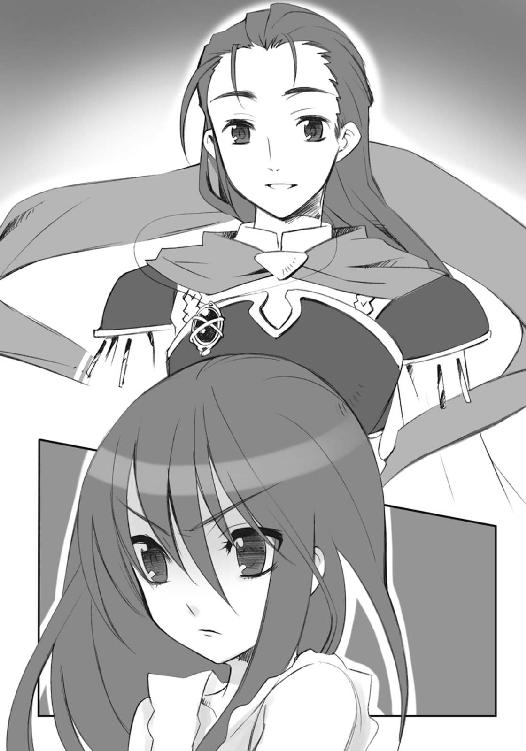
「そんなに睨み付けなくても......アラストールからも、なにか言ってくれないか」
「貴様、よくも抜け抜けと」
遠雷のような怒りの声が、その胸元からあがった。
シャナはようやく、悠二が首から下げているペンダント、彼女の神器〝コキュートス〟に、安堵と緊張、相半ばする声をかける。
「アラストール」
「何事もなかったか、シャナ」
己の契約したフレイムヘイズへと声をかける彼こそ〝天壌の劫火〟アラストール。シャナにとっては師にして友、父にして兄でもある〝紅世〟真正の魔神である。
「うん、特には。アラストールも、酷いことされなかった？」
悠二が笑いに苦さを混ぜる。
「酷いことって、それはないよ。あくまで自発的に付き合ってもらうだけ、強制はしない、ってのは二人とも了承済みのはずだろ？」
その言う通り、アラストールは今、自発的な捕虜、という奇妙な立場にあった。
フレイムヘイズの一部として、契約者の望む器物の形を取る〝紅世の王〟との交信装置『神器』は、本来であれば契約者と〝王〟、いずれかが望みさえすれば、即座に契約者の元へと転移できる。シャナが力を封じられている現状でも、アラストールの任意で本来の場所に帰ることは可能だった。
でありながら、〝コキュートス〟が未だ彼女の元を離れたままでいるのは、悠二の......あるいは〝祭礼の蛇〟のかけた一つの、呪縛のような言葉ゆえだった。
「〝天壌の劫火〟......余の一存で、おまえに一度だけ、余と同行し情報を収集する機をやろう。余と共に在り、余と共に見るがよい。我ら［仮装舞踏会］の為し様を」
盟主との同行は、企ての核心を覗けるかもしれない、絶好の立ち位置である。感情のまま、無下に拒否することはできない。また、一度だけ、という条件が付けられている以上、軽々に戻ることも躊躇われた。アラストールとしても、状況が劇的に動かない内は、彼との同行を続けざるを得なくなっている。
〝祭礼の蛇〟と悠二、どちらの発案によるものか、全くもって狡猾な手管と言えた。
そんな、目の前に立つ誰かを、シャナはより強く、睨みつける。
目の前に立つ誰かは、そんなシャナを、より優しく、見つめる。
「シャナ、なにか困ったことはない？」
「身動きが取れないから、この鎖を外して」
右手首にある力の枷を差し出した、言下の返答。
いつもと変わらない少女の強さと率直さに、悠二は感嘆と歓喜を覚える。ただし、返答には容赦がない。
「それは無理だよ。君の扱い一つについても、地位に物言わせた無理をしてるんだ。何より、今ここに無数集まっている〝徒〟の中に、君への恨みを持ってる者がいないとも限らない。不用意にうろつくのは危険だ」
これまで専ら少女にされてきた、物事に対する注意を、今は少年が。
しかも、言い分には妥当性がある。現状を受け入れた上での話ではあっても。
シャナは、それでも懸命に気を張って、対峙する。
「なら、なおさら捕らえておくような不合理は冒すべきじゃない」
「逃がすか、殺すかしろ、と？ それを、この余に求めるのか？」
悠二には分かっていた。
彼女は、捨て鉢になって暴言を吐いているのではない。こうやって挑発し、待遇という名の状況の変化、感情に任せた反論からの情報収集、あろうことなら精神的な揺さぶりを目論んでいるのである。どのような場合でも、フレイムヘイズとしての使命に忠実なのだった。
悠二は、そんな彼女の実直さを愛おしく思い、そうさせる使命を疎ましく思う。双方を実証するような、彼女の差し出す手首にある、小さな瘡蓋に目をやった。
「まったく、君はいつも、平然と無茶をする」
報告によると、部屋に備え付けてあった細剣を机と椅子に渡し掛けて噛ませ、切っ先を鎖に通し、体重をかけて無理矢理これを引き千切ろうとし......結果的に、鎖が切れるより先に年代物の机が壊れて、刃は危うく彼女の手首を掠った、ということらしい。
後に残るほどでもない軽傷で、また実際治りかけてもいるが、そんなことをした当人については、いつ次なる無茶をするか分かったものではない。心配でたまらなかった。
と、衝動的に、
「......」
その傷の治りを見たくなって、悠二は手を伸ばした。
と、弾かれるように、
「っ！」
差し伸ばされた手を拒んで、シャナは身を引かせた。
悠二だけでなくシャナ自身も驚き、互いに数秒、呆然となる。
「シャナ？」
言って、悠二が踏み出す分だけ、シャナは下がった。
その黒い双眸は、先の強さも消え果てて、少年から目を逸らしている。
在り得ない姿を信じられず、もう一度、もう一歩、悠二はやり直すように踏み出した。
「シャナ」
「......」
が、やはりシャナは身じろぎして、もう一歩、下がった。ドレスの裾に隠れ見えていない足が、もつれる寸前によろめいたことが分かるほどに、弱弱しく。
彼女の豹変の意味が、悠二には分からない。
ほんのさっきまで、気を張って自分を見つめ返していた姿は虚勢だったのか、と疑う。
まるで追い詰められたかのように、ベッドの天蓋を支える柱に背中を押し付ける少女。
そのか細さに、悔しさとも悲しさとも付かない複雑な感情が、心の内より湧き上がる。
今は見えないものを掴もうと、再び手が差し伸ばされた。
「シャナ」
「あっ!?」
手から逃れようとしたシャナは、柱に押し付けた背を滑らせ、ベッドへと倒れこんだ。上から差す影の黒さに、少年の広げた掌の大きさに、顔は怯えを、体は震えを隠せない。
その顔の傍ら、伸ばしていた手を突いて、悠二は覆い被さるように少女を覗き込んだ。
「シャナ、いったいどうしたんだ」
「よさんか、坂井悠二!!」
アラストールの制止も耳に入らない。
「ただ一度の敗北で、君がこんなになるわけがない。なぜ──」
言う間に、少女の手首にある鎖、フレイムヘイズの力を封じる宝具を見つけた。まるで焦るように、弾劾するように、手首ごと握る。
力が少し入って、シャナは顔をしかめた。
「うっ！」
「まさか、これのせいなのか？ いや......君が力のあるなしで、相手への態度を変えたりするわけがない。君なら──」
「勝手に、私のことを全部分かった風に言わないで!!」
「!?」
思わず手を離した悠二は、そうすることで初めて、暴挙を自覚した。少女を掴んだ、細かく震える掌に視線をやる。自分でも、突発的に湧いた猛烈な熱さに驚いていた。
見下ろせば、シャナは身を守るように腕で顔を隠し、彼を拒んでいる。
その、半ば放心する少年・坂井悠二の背に、老境の男性と聞こえる声がかかる。
「覚悟の参陣を、まさか愁嘆場で出迎えられるとはな」
「むう」
アラストールが、きまりの悪い唸りで返した。
悠二も、この部屋を訪れた本来の理由、呼び寄せた自在師を招き入れることも忘れ、部屋の外に待たせていたことを、当人の声で思い出す。
扉の内に、一人の〝徒〟が立っていた。
棒のような痩身をクラシックなスーツと帽子で装い、ステッキを携えている。呆れて首を振る様にも気品が漂って、老紳士という形容が相応しい。
「因果の交差路は、意外な近傍にあったようだな、『炎髪灼眼の討ち手』シャナ」
ようやく半身を起こしたシャナは、見覚えのある老紳士が、ここにいる意味を訝った。
悠二は取り繕う風に彼へと向き直り、言う。
「先刻合流した、余の大命への協力者だ。改めて紹介しよう。〝屍拾い〟ラミー......いや、〝螺旋の風琴〟リャナンシーだ」
２ 埋み火の床
日本。
その一隅にある街・御崎市は、嵐の過ぎ去った後の虚脱と惨状を、人知れず呈している。
嵐とは他でもない、数日前に起きた──〝祭礼の蛇〟坂井悠二の襲来。
かつて街に在って暮らし、人々を守ろうと努めた少年による、襲来だった。
見た目には何ら変わったところもない、長閑な街を歩く中、
（あれさえも、彼にとっては一つ思惑に則った行動、ということでありましょうか）
フレイムヘイズ『万条の仕手』ヴィルヘルミナ・カルメルは密かに思う。
彼の去った後になってようやく、そう結論付けられるほど冷静になれたというのは、全く皮肉な話だった。いつか偶然の成り行きから、彼とのみ行動を共にした際に感じた、常の人とは異なる在り様が、重く大きく思い出される。
（本質が感情の面にない、少年）
今歩く道、住宅地を抜ける幹線道路に沿う横断歩道を、並んで辿った彼の姿が、黒い竜尾と緋色の凱甲を加えて、脳裏に浮かぶ。
創造神〝祭礼の蛇〟と融合して、あるいは洗脳を受けて、街へと帰ってきた彼は、よりにもよって、想いを寄せ合っていた（と密かに認めざるを得ない）少女、『炎髪灼眼の討ち手』へと戦いを挑み、勝利し、連れ去った。
そうした理由について、おおよその察しは付いた。
彼は襲来に際し、
（──「この大きな戦いが起きる時期に」──）
と口にしていた。
驕慢な物言いへの非難にも、
（──「これからやろうとしていることを実現するためには、それくらいの調子の良さ、意気込みが絶対に必要なんです」──）
と答えてみせた。
近く、大きな戦いが......創造神率いる世界最大級の〝紅世の徒〟の集団［仮装舞踏会］による、おそらくは未曾有の、大きな戦いが始まる。
（否、既に始まっている）
先日、全世界的な規模での混乱を続けていたフレイムヘイズの情報交換・支援施設たる外界宿から、重大な要請とともに、極めつけの凶報が届いていた。
上海総本部の陥落、および東アジア地域におけるフレイムヘイズ主戦力の消失である。
最早、誰にも何も隠さなくなった［仮装舞踏会］の大攻勢は、正体を明したその時点で、対抗戦力の重要な一部を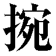ぎ取り、絶息させてしまっていたのだった。
（季重、虞軒までもが）
知己が多く失われ、しかもこれさえ、前触れに過ぎない。
創造神の出座となれば、彼女でさえ口伝にしか聞き覚えのない原初の動乱、神殺しさえ厭わなかったフレイムヘイズと〝徒〟双方の壮絶な死闘が再演されるのは必至だった。
坂井悠二は、その死闘の渦中へと率先して身を投じてしまうであろう『炎髪灼眼の討ち手』たる少女を、余人による万が一の死から守るため、迎えに来たのである。
また同時に、『炎髪灼眼の討ち手』と契約する天罰神......唯一、創造神を討滅し得る〝紅世〟真正の魔神たる〝天壌の劫火〟アラストールを、前以って押さえるためにも。
前者は少年の願い。
後者は創造神の思惑。
二つの合致があの行動を取らせ、結果、御崎市のフレイムヘイズらは──
（完敗、だった）
いかに彼女らのことを知り抜いた、頭の切れる少年が相手だったとしても、その完敗という事実は、討ち手としての矜持を傷つけずにはいられず、また容易に癒すこともない。
目の前、信号が赤に変わって、ヴィルヘルミナは立ち尽くすように、足を止めた。
と、珍しく頭上、
「息災嘉幸」
ヘッドドレス型の神器〝ペルソナ〟から、彼女と契約し異能の力を与える〝紅世の王〟、〝夢幻の冠帯〟ティアマトーが、声をかけた。
自分が落ち込んでいることを悟って、また落ち込んだ事柄には触れず、異なる話題を口にしたパートナーに、ヴィルヘルミナは感謝する。努めて平然と、
「たしかに。奥様には心労が一切かからない、ということに関してなら、現状は幸福と言うべきであり......ましょう、な」
言う内に、己の皮肉めいた言葉に気付き、語尾を小さく途切れさせた。
ティアマトーもあえて会話を続けず、声を切る。
沈黙が、辛い。
（処置なし、と思われたでありましょうか）
ヴィルヘルミナは、またネガティブに考えてしまう。
信号が青に変わって、人も車も通らない冬の道を、とぼとぼと渡った。背負った空の背嚢さえ、鉄塊が詰まっているように重く感じられる。
二人にして一人の『万条の仕手』は今、とある訪問と挨拶からの帰路にあった。
坂井家への訪問と、当座の別離についての挨拶、である。
二人も一目置く悠二の母・坂井千草。
この街で起きた〝紅世〟に関わる事柄について、なにも知らない一般人である彼女は、自身の息子についての記憶をなくし、さらに今、もう一人の家族のように接してきた『炎髪灼眼の討ち手』の少女の存在をも、忘失していた。フレイムヘイズ消滅による現象とも取れたが、盟主自ら捕らえに来た以上、身命に別条はないはず。
（となれば、何らかの自在法によって絆の繋がりを封じられたに違いない）
などと分析しつつも、敗北の結果から予測されていた結果......忘失の事実に、それでもヴィルヘルミナは甚大なダメージを心に受けている。
少年と少女を間に置き、母たる者同士の語らいを持っていた二人は、その関係性をなくすとともに、何故か知人である、という不自然な間柄へと変わっていた。もちろん、親交の深さ自体は以前の通り、また少女が捕らわれ行方不明となったことを心配させずに済むのは、ヴィルへルミナ自身の言ったとおり好都合でさえあった。
あった、が、何気なく会話に織り交ぜた少女の事柄に対する、
（──「シャナ、ちゃん？」──）
この疑問を含んだ一言は、やはり、心底、堪えた。
同じ事例に数多く立ち会ってきた、歴戦の討ち手たるヴィルヘルミナにとっても、御崎市における僅かな日々はいつしか、失いたくない、かけがえのない、大切なものへと育っていたのだった。
シャナ、という彼女にとって複雑な思いを抱かせる通称を使ってさえ語った、まるで記憶を取り戻してもらうための説得のような、少女の思い出話に対して、
（──「私もカルメルさんのように、子供を誇らしく語れるよう頑張ります」──）
千草は和やかな微笑で答えていた。
彼女は今、懐妊中だった。
坂井悠二の弟、あるいは妹を、そうとは知らず生み育てようとしていた。
そんな彼女に、真実を語らぬまま、ヴィルヘルミナは不意な別れを告げた。
仕事の都合で、しばらくこの街を離れることになる、いつ戻れるか分からない、と。
登山用の背嚢いっぱいの餞別......肌着にミルクに玩具まで、育児用品の山に埋もれる千草の微笑が、別れの寂しさを感じさせまいとする強い微笑が、今も心に焼きついて離れない。
（──「この子の顔を見に、また戻ってくださいね」──）
もちろん、そのつもりだった。
だが、帰りつくまでの道程は、険しい。
たしかに、秘めたる作戦は、一つある。
ただし、それが成就する可能性は、極めて低い。
しかも、準備不足のまま、出立を迫られている。
ヴィルヘルミナは足を止め、見上げた。
「......」
非業の死を遂げた平井家に間借りした、半年にも満たない仮寓、二度とないと思っていた少女との温かな暮らしの跡が、一つのマンションの形をとって、そこに建っている。
冬空の下を渡る寒風が、別れを告げた寂寥感を身に染み込ませていった。
「早急帰宅」
「......了解であります」
再びパートナーに促されて、ヴィルヘルミナは歩き出した。
郵便受けを開けて手紙を取り、エレベーターで上がって、扉の鍵を開ける。
「......」
もう『ただいま』を言うこともない。
誰もいない部屋が、彼女を出迎えた。
最早なにをも思うまい、と念じれば念じるほど、胸を締め付ける痛みは強くなる。
部屋の中は、程なくの出立を窺わせない、少女と暮らしていた日々のままに保たれていた。まるで未練のような、その光景を無視して、すぐ脇の自室へと入る。
「書簡確認」
「了解であります」
落ち込むと切りのない自分を、叱咤して行動へと導いてくれる無二のパートナーに答え、ヴィルヘルミナは空のリュックを背負ったまま、椅子に腰を下した。
執務机の上に、届いた手紙十通ほどを広げる。
大半は、どうやって住所を知ったのかも分からないダイレクトメールである。
これらを不要物として、シュレッダー脇の取り分け用の箱に放り込むと，後はもう、外界宿からの封書が二通のみ。切手が貼られていないのは、要員が直接、届けに来たのだろう。
かつては頻繁に混じっていた、同所より届く小包の不在者通知はない。送り主の側は既に、無用な大荷物を送るほどに愚鈍ではなく、その手間を許すだけの余裕も失い、彼女に届ける文面も簡素な要請のみで済むようになっている。
これも、坂井悠二の唱えた『大きな戦い』の影響──世界が、彼の宿す創造神、あるいは創造神を宿した彼の齎したうねりに、否応なく巻き込まれつつあることの証だった。
世界のバランスを守る唯一にして最前線の存在である外界宿は、その中枢を掌握した『震威の結い手』ゾフィー・サバリッシュ指導の下、遂に暴威の真因たる姿を現した［仮装舞踏会］の実態把握に、動員可能な討ち手らの全力を傾注している。
具体的には、辛うじて維持し得た勢力圏の東西両端──東は日本から東南アジア諸島群、西は東欧からエジプト──に警戒線の司令部を置き、その内側へと小規模な威力偵察を繰り返して、次なる橋頭堡を確保する、という慎重かつ地道な手法を取っている。上海の失陥と大敗を経て、後のない状況となった討ち手側としては、それ以上の積極策は危険過ぎて取りようがない、というのが現状だった。
もちろん他方では抜かりなく、決戦を挑むための軍編制も、世界各地に残存する精鋭を召集することで着々と進められている。十六世紀初頭に勃発した『大戦』以来、数百年ぶりに用いられる『兵団』の名を持つ、軍である。
そして無論、その大戦の英雄、『戦技無双の舞踏姫』の異名を取ったヴィルヘルミナにも「軍の一翼を担ってもらいたい」との要請が、封書の一通として届いていた。
この幾度目かの要請、定型の封筒に定型の書式、という書面を、ともかくと一読する。
「今度は、レベッカとの連名でありますか」
手書きではない文面には、外界宿の指導者となった古い友人・ゾフィーからの正式な要請文のみならず、別の旧知の名前までが連ねてあった。もはやなりふり構わず、というやり様だったが、大きな戦いとなれば、この『万条の仕手』は絶対に欲しい戦力なのだから、当然といえば当然ではある。
が、手紙は考慮の間もなく、あっさりと不要物の箱へと置かれる。
ヴィルヘルミナは、もはや説得されて向きを変えるような曖昧な立場に、自らを置いてはいなかった。ゾフィーの求めに応じる以外の、自身が果たさんとする密かな作戦を、胸中に強く抱いていたのである。
他でもない、『炎髪灼眼の討ち手』シャナの奪還、という作戦を。
（どうか、許してもらいたいのであります）
方法に秘策ありとはいえ、相手を考えれば無謀としか言いようのない企図だった。
フレイムヘイズとしてのパートナーであるティアマトー、常は契約者を制し、冷静に戻す立場にある彼女も、この点に関しては同意している。ヴィルヘルミナ・カルメルという女性が断じて行うと決めたことには、なにも言わないまま同意する。そうして数百年、『万条の仕手』としてやってきた二人なのだった（それでも常より遥かに協力的だ、とヴィルヘルミナに思えるのは、彼女自身もシャナの密かな育ての親の一人だったためか）。
ゆえに今も、彼女が発する言葉は、
「次」
の一言のみ。
頷いて、ヴィルヘルミナはもう一通、こちらは先とは対照的に、手書きの宛名に印章を付けた蝋封、という洋形封筒を開けて、中身を広げた。
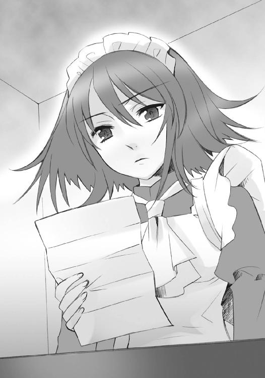
流れるような筆致によるドイツ語綴りが、わざわざ線のない便箋の裏に書いてある。
その最後にある署名に眼を落としたまま、ヴィルヘルミナは溜め息を漏らした。
「ヒルデガルドも、やはり助力は無理、でありますか」
そのもう一通、旧知のフレイムヘイズから届いた手紙は、奪還作戦への参加協力要請に対する返事だった。
答えは、否。
文面には、警戒網を統括する立場を任せられたため合力できない、との説明が、丁重な謝辞を添えて綴られていた。その一方、別紙には戦況についての詳細な見立てが記されている。合力できない身でも可能な限り援護はする、という旧知の思い遣りが胸に染みた。
ティアマトーが、そうなった理由を端的に言い表す。
「人員枯渇」
「現在の戦況下で容易く援助は受けられない、と理解はしているつもりであります」
理解していて、なお友誼に頼り救援を求めたのだから、ヴィルヘルミナにも否との返事があることの予想はついていた。もちろん、それで気が楽になるわけもなかったが。
「総大将となったゾフィーに、一身上の作戦への助力を求めるのは筋違い。ナム婆様もピエトロも季重もない今、強く他に働きかける手段もなし。どうにも、八方ふさがり──」
言う内に、窮状への弱音が入ったことを自覚して、思わず首を振った。
これまで数十行われた、奪還作戦への参加協力要請は、悉く断られている。
数百年もの間『天道宮』に籠っていたため、身命を預け合えるだけの新しい知己を得られなかったこと。その期間の内に、旧友らが幾人も倒れるか、逆に個人の一存では動けない重鎮になっていたこと。自身が『天道宮』を出たすぐ後に、『約束の二人』という特殊な二人と行動を共にしていたため、討ち手らとは距離を取っていたこと。世界の危機に対処する方が先決、内容も定かでない作戦（ヴィルヘルミナは「助力を請う」旨しか書いていない）に加わるだけの余裕はない、と考えるのが事理明白の状況になっていること。
等々、理由は幾つも思い当たるが、それでも救援が一切ない状況には、暗澹たる思いを抱かずにいられない。
（分かっては、いたのでありますが......やはり情勢は厳しい）
要請への返事を待っていた相手は、このヒルデガルドが最後だった。
いかに強力なフレイムヘイズであっても、流石に一人だけで作戦を完遂できるとまで事態を楽観し、己を過信することは、ヴィルヘルミナにはできない。できないが、しかし戦いの機運が日々迫ることで、勝算もないままの決行を余儀なくされつつある。
「このまま手をこまねいていては、万が一の成算が、さらに目減りするのみ......やはり予定通り、数日の内に出立するよりないでありましょうな」
「粛々進行」
いよいよもって、徒手空拳、単身で挑む覚悟を決めるときが来たようだった。
できることは全てやった結果である。全てを受け入れて、なおも挑むしかない。
そもそも外部に助けを求めたのも、御崎市における彼女らの戦力、これまで幾度も〝徒〟らを退けてきた迎撃体制が瓦解したためだった。本来は、持ち前の冷徹な頭脳によってこれを支え助けてきた、坂井悠二自身の襲来によって。
単に『炎髪灼眼の討ち手』が捕らわれた一事に、襲来の惨禍は留まらない。
隠された企みや仕掛けを見破ってきた監視用の宝具『玻璃壇』を取り返され（元々〝祭礼の蛇〟の物だったという）、そのナビゲートを務めてきた少年らは事実上、無力化された。
同じく、強力な救援を得られる宝具を持つ少女も、助力する理由と意思を根こそぎ奪われ崩されたことで、今は戦いの場から脱落した状態にある。
そして、最も大きな損失は、もう一人、御崎市に残された討ち手。
「せめて、マージョリー・ドーが健在であれば」
「......」
ヴィルヘルミナが、言っても詮無いと分かっていて、なお惜しむほどに、ティアマトーが、弱音への叱責を躊躇いの沈黙で返すほどに、その抜けた穴は大きかった。
フレイムヘイズ『弔詞の詠み手』マージョリー・ドー。
炎の衣『トーガ』を纏い、自在法を縦横に繰る、世界でも指折りの自在師。
常からの肝胆相照らす知己、戦いにおいては信頼厚き女傑、戦い以外の場面でも度々気を利かせてくれた助言者、また酒飲み友達でもあった彼女は......未だ生きている。
ただ寝床に在る、抜け殻として命を永らえる、生きた屍のような状態で。
彼女は坂井悠二との戦いの中、己を衝き動かしていた根源の力を、なくした。討ち手として生きる意味を、見失ってしまったのだった。この生きた屍の状態さえ、フレイムヘイズの死である消滅を迎えていないだけマシな、在り得ない奇跡のようなものだった。
彼女は立ち直れない。
希望──正確には、か細く頼りない『希望的観測』である──はないでもなかったが、その端緒もヴィルヘルミナ自身の出立によって初めて生じることになっている。時間的に、奪還作戦遂行の助けとなる可能性は、まずない。
（思い煩ったとして、事態が好転するわけもなし......気を取り直して、出立の荷造りでも始めるのであります）
とヴィルヘルミナは思いを改め、立ち上がった。立ち上がって、
「？」
傍らの棚に目をやり、次に床を見回し、最後に机の下を覗き込んで、首を傾げる。
「背嚢は、どこにしまったのでありましょう？」
「背中」
「......」
ティアマトーの呆れ声には答えず、背負ったままだった背嚢を板敷きの床に下ろし、黙々と作業を始めた。全く久々の旅支度に、またも寂寥感が覆い被さってくる。その重さに、胸の内から押されたように、
「赤ん坊は男児と女児、どちらでありましょうな」
「息災立願」
二人、声を交わしていた。
御崎市の北東部に、旧地主階級の人々が大きな屋敷の塀を連ねる区域がある。
旧住宅地、と呼称されるそこでも一際、広大な豪邸として、佐藤家はあった。
折り合いの悪い家族と離れ、この家で一人暮らしをしている実質の家主・佐藤啓作は現在、とある用事のため東京まで出かけており、不在である。
のみならず、
連絡が付かなくなっていた。
（あのバカ、一体なにやってんだ）
佐藤の親友、また坂井悠二やシャナと御崎高校でのクラスメートだった田中栄太は、大きな溜め息を吐く。大柄な体格が一回り小さくなるほどに肩を落として、勝手知ったる佐藤家の廊下を悄然と歩いてゆく。
（カッコ付けて出てったくせに、初っ端からこれかよ）
声なき罵りには悪意がない。
切実な悔しさだけがあった。
羨むほどに格好良く、自分には選べない道を進んでいったはずの、親友の不甲斐なさへの。
その尻拭いとはいえ、未だに格好悪く、ここに足を留めている、自分の未練がましさへの。
田中は、フレイムヘイズや〝紅世の徒〟の暗躍する世界への恐怖から心折れ、自己嫌悪から背を向けた身だった。そんな情けない自分は、本来ならばここにいるべきではない、と今でも思っている。
にも拘らず、彼が今、佐藤家にいるのは偏に、他に人がいない、という御崎市におけるフレイムヘイズ関係者の窮迫した事情による。
（でなけりゃ、どうしておめおめとここに......）
思いつつ田中は、主不在の佐藤の私室、そのドアを軽くノックした。
「入ります」
「あいあいよー」
軽薄な返事を聞いてから、中に入る。
部屋の様子は、佐藤がいたときと、ほぼ同じ。
雑誌をギュウギュウ詰めにした本棚、大きなテレビとソファが一揃い、端には教科書やノートを乱雑に積み上げた机と、幾つもコート類を被せて膨れ上がった洋服掛け等が、広い中に散り散り配置されている（もちろん、ある程度は田中が片付けた）。
主がいたときと違っているのは、決してこの部屋に入ることのなかった女性が、ベッドに身を横たえ、ひっそり眠っていることだった。
栗色の髪を軽く纏め、化粧っけのない美貌の双眸を、そっと閉じている美女。
先の戦いで、存在の根幹に大きな傷を負い、深い眠りに就いてしまった美女。
『弔詞の詠み手』マージョリー・ドーである。
彼女が本来、居候として過ごしていた佐藤家の室内バーで、人を寝かしつけられる家具は、ソファ一式のみだった。仮にも重篤の身を、そんなものに横たえるわけにも行かない。となると、屋敷内に幾つもある豪華な客間へと運び込まれるのが常道のはず。
にも拘らず、彼女がここ、よりにもよって佐藤啓作の自室に寝かされているのは、一人の少女......消滅の危機に陥った彼女を、既のところでこの世へと繋ぎ留める叫びを放った少女の、途切れそうに小さな呟きに起因する。
「できるだけ......佐藤君と近い場所に、いるべきです」
以来、マージョリーはここで眠り続けていた。
元から、家を保守管理するハウスキーパーたちの立ち入りを禁じていた部屋であり、佐藤と年来の友人である田中は出入りを咎められない。人事不省の身を匿う措置として、結果的に良い選択とも言えた。
と、部屋の奥、
「ヒッヒ、毎日定時の催促、ゴクローさん！」
ベッドに立てかけられた、画板ほどもある本型の神器〝グリモア〟が、照明の抑えられた静寂の雰囲気も気にかけず、あくまで軽く声を掛けてくる。
「で、どうだったい？」
声を意思を、そこに表出させているのは、マージョリーと契約し異能の力を与える〝紅世の王〟、〝蹂躙の爪牙〟マルコシアスである。
田中は、それなりに付き合いも長くなった〝王〟に、首を振って返した。
「やっぱダメだ。ええ、と......」
いい加減、聞き慣れてしまった受け答えを反芻する。
「......『そのような方が参られた記録は、当社にございません。どこか他所とお間違いではありませんか』の繰り返し。今日なんか、向こうの方から電話切られたよ」
「ヒャーッハハハハ！ そーりゃまたまたご愁傷様」
ここ数日、田中はマージョリーに付き添う傍ら、ヴィルヘルミナに教わった番号へと、一定の間隔で電話を掛けることを己に課していた。
電話を掛ける先は言うまでもない、佐藤がマージョリーの使者として出向いたはずの、東京外界宿の一支部。目的は無論、音信不通となった佐藤の所在確認である。
数日前、奇しくも坂井悠二襲来の日、すれ違う形で旅立った彼に、その惨憺たる結果を知らせ、大急ぎで引き返させんとかけた携帯電話は、どういうわけか繋がらなくなっていた。
律儀にマージョリーの言いつけを守り、自分の仕事を果たすまで電源を切っていた可能性も、なくはない。が、だとしても、用件を果たし終えての報告や、戦いの結果確認の電話を掛けてこないはずはなかった。
それが、音信の一切を絶っている。
距離的にも、御崎市から東京へは、仮に途上で迷ったとしても、半日あって辿り着けないというほどに遠くはない。果たすべき用件も、マージョリーからの書簡を所定の場所に届けるだけ。早ければ翌日にでも、帰宅しているはずだった。
それが、未だに帰ってこない。
出先の外界宿支部で、何らかのトラブルに巻き込まれたことは確実だった。
向こうが誤魔化しているだけで、実際には佐藤がそこにいることは、襲来の翌々日、外界宿の支部へと最初に電話を掛けて見せたヴィルヘルミナとティアマトーに看破されている。
「もし本当に訪れていない、あるいは既に帰途についたのであれば、私の照会に対し、真っ当な応対と説明を行うことで、無用の誤解を解くはず」
「挙動不審」
「わざわざ空とぼけて見せているのは、話を遮断することで、こちら側からのアクションを誘発させたい、何らかの意図が秘されているからでありましょう。恐らくは以降も、同様の受け答えに終始するはず」
推測は当たっていた。
この数日、田中による定期的な問い合わせにも、冷ややかで事務的な応対しか返ってこない。そもそも外界宿として話をする気がないというあたり、大した徹底ぶりでさえある。
今日も今日とて同じ遣り取りを交わした田中は、いつの間にか、なにもかもが上手く行かなくなっている状況を、まるで鉄球を飲んだように重苦しく感じていた。その重さを投げ出すように、ベッド脇に置かれた椅子へと腰を落とす。
「やっぱ電話じゃ駄目ってことかな。ここは直接、カルメルさんに出向いてもらうしかないみたいだ」
ヴィルヘルミナが、シャナ奪還作戦を敢行すべく出立する話は、田中も聞いていた。
無論、付いて行く気はない。シャナの身を案じる気持ち、悠二のやり様への怒りは持っていたが、もはや事態は、少年の心意気などお呼びではない、役立たずや足手まといの同行を許さない、苛烈なものとなっている。それを、十分に理解していた。
今の彼にできるのは、出立するヴィルヘルミナに、東京の支部へと佐藤の捜索に乗り込んでもらうよう改めて頼むこと、この場所でマージョリーやマルコシアスと共に、彼の帰宅を待つこと、二つ切りだった。
マルコシアスが、田中の言葉に思考を触発され、呟く。
「ふん、もしかすると連中──そういうことか」
声には、微量の鋭さが混じっていた。
田中は、そこに不穏の匂いを感じる。
「そういう、って......どういうことだ？」
「いやさ、でっけえ戦いが迫ってるご時勢だってえのに、『万条の仕手』は外界宿の召集を一切無視の構えだろ？」
田中には、全く関係ない話のように思えた。
「佐藤の話じゃないのか？」
「まあ聞けって」
性急な少年に、マルコシアスは噛んで含めるように説明する。
「要するに、だ。東京支部の連中はケーサクを人質に、ご所望の当人が来るのを待ち構えて、そこで説得攻勢をかける腹積もりなんじゃねえか、ってことよ」
「人質......」
その冷たい語感に、田中は身震いした。まさか自分が、そんな不穏な単語と現実に相対する日が来ようとは、思ってもいなかったのである。
なにもかもが、本当に上手く行かなくなっている。
難局を機知で切り拓いてきた坂井悠二は、敵となった。
共に過ごした街を守り戦ってくれたシャナは、捕らわれた。
自分たちに指標を示してくれたマージョリーは、眠りに落ちた。
求めれば説明と助力をくれたヴィルヘルミナは旅立とうとしている。
かつて憧れていた外界宿は、思いもよらぬ仕打ちで彼らの危機に応えた。
そこに囚われたらしい佐藤も、大きな戦いが起こりつつある、現に起こった場所もある、という混乱した状況下、果たして無事に過ごしているものか......。
世界の重さ冷たさを振り払うかのように、
「でも、佐藤が帰ってくれば......目、覚ましてくれる、よな？」
田中は、自分にとっての希望を見つめた。
視線の先にあるものは、安らかでも苦しげでもない、昏々とした、眠り。
時を凍らせたかのように、汗の一玉も浮かべず呼気の風も微かな、美貌。
数百年の落胆と疲弊に落ちたとは思えない、様相を確と保った、その姿。
田中には、彼女の全てが、佐藤を待って佇む振る舞いであるように思えてならなかった。あるいは、心細さからそう思いたいだけかもしれない、と分かって、それでも強く、のしかかってくる重く冷たい世界を打ち払う希望としての、女傑の目覚めを望んだ。
憧憬の抜け切らない少年を、マルコシアスは笑い飛ばす。
「ヒッヒヒ！ さあて、どうだかね。まずは一丁、王子様の熱いベーゼを試してからだな。ったく、このタナボタを当の王子様が知りゃ、相手がフレイムヘイズでもぶっ倒して帰ってくんだろうによ。世の中ってのは上手くいかねえもんだ」
このマルコシアスのからかいに、田中は表層深層、ともに救われた気がした。
同時に、からかいに込められた予定の行為を聞いても、心が全く平静を保っていることも自覚している。やはり自分はそうなのだ、と。
様々な意味でのお返しと、空元気の軽口を放る。
「タナボタよりも、あいつ、マージョリーさんが自分の部屋で寝てる、って聞いただけで、泡食って帰ってくるんじゃないか？」
「ヒャッヒャ、年頃の部屋には秘密あり、ってか？ さーすが、あの嬢ちゃんは恋愛で悩み抜いただけあって、情理の機微ってもんが分かってるねえ」
「おいおい、本人が聞いたら怒るぞ」
クラスメートの少女への思わぬとばっちりに、田中は苦笑した。
マルコシアスは頓着しない。
「願ってもねえこった。最近どーも叱られ足りなくて、調子が狂いっぱなしよ。嬢ちゃんに優しーく叱られんのなら、丁度いい復帰のリハビリになるってもんよ、ヒャッハハハ！」
「復帰、か」
田中はまた、最初に運び込まれたときから全く動かない美女へと、視線を移した。
御崎市を襲った嵐の後、マルコシアスが契約者を救ってくれた二人に、あえて語って聞かせた酷過ぎる経緯、彼女が沈み込んだ虚無を、寝顔の上に思う。
（復帰して......また、戦うんだろうか）
坂井悠二との戦いの最中、彼女は自身の戦ってきた理由、人間だった頃の彼女の全て──復讐すべきモノ──を喰らい、殺し、壊し、奪った謎の存在〝銀〟の正体を知らされた。
数百年もの間、世の常ならぬ戦火の中に身を置いてまで追い続けた『横合いから全てを掻っ攫った化け物』が、そんな意思など欠片も持ち合わせていない、自分の感情と意思の投影物でしかなかったことを。
怪物は、彼女に代わって喰らい、殺し、壊し、奪っただけであり、燃え盛る炎の中で向けてきた、破壊者からの蔑みの嘲笑さえ、彼女が密かに隠していた暗い歓喜を映し返していたに過ぎなかったことを。
そして、彼女は気付かされた。
奪われたはずの復讐が、とうの昔に果たされていたことを。
新たに得たはずの復讐には、なんの意味もなかったことを。
数百年に渡る戦いが、幻を追う彷徨に過ぎなかったことを。
全てが、己の所為だったことを。
なにもかも、徒労だったことを。
ここにいなくても、よいことを。
だから、マージョリー・ドーは、眠っている。
自分を閉ざして、ひたすら、眠り続けている。
（佐藤が本当に目覚めさせられたとして......それは、この人にとっていいことなのか？）
田中は、真実を知った彼女が放った狂乱の叫びを、実際に聞いていた。
ああなるまでに、自分を壊してしまった人、恐らくは『嫌になってしまった』人を、また呼び戻してフレイムヘイズ──もう分かっている、戦って切り抜けるしかない人生──として歩ませるのは、果たして正しいことなのか。
未だ二十年すら生きていない、生物としての曖昧な反射と本能を、人間としての明確な意思と想いに脱却させること僅か数年、という少年には、判じるに荷が重過ぎる難題だった。
そんな憂悶から、いつしか口を閉ざしていた彼に、マルコシアスは言ってやる。
「これまでだって、放り出すことは何度もあった」
「え？」
ベッドに立てかけられた本たる身を、揺すらず騒がず、穏やかに。
「だが、今度のは、今までみてえに駄々っ子として『休ませろ、甘えさせろ』って喚いてるわけじゃねえ。そんなことしても意味がねえから、だんまり決め込んでんのさ」
少年を試す意味でも、回答そのものは口にせず、顧慮を求める。
「エータよ、そろそろ合点がいかねえか？」
「......」
田中は促されるように、もう一度、マージョリーの寝顔を見た。
そこに抱いた、待っている、という印象が誤りではなかったらしいことを、誰のためにか喜び、安堵し......ほんの少しだけ、嫉妬する。
マルコシアスに対する回答として、その嫉妬を口にした。
「......ったく、佐藤の奴、とっとと帰ってこいっつの」
「ま、欲しがってるモノが来るまでは、ゆっくり休ませてやるさ。我が麗しの酒盃も、今在る自分をどうするか、こっから先はどこ行くか......そこで決めるだろうよ」
二人の男は、女の眠りを妨げないよう、小さく笑い合った。
「──くそったれ！」
佐藤啓作は、今日だけで何十度目か、という蹴りをドアにくれていた。
「っ痛っつつ......！」
さらに同じく、今日だけで何十度目か、という足の痺れに飛び跳ねる。
涙目で見れば、表面の木製部材が幾らか削れただけで、ドア自体にも接合部にも、一切の揺るぎはない。洒落た木の扉、というのは見かけだけ、実態は牢屋の鉄扉なのだから、彼の蹴り程度でどうにかなるわけないのは当然だった。
もちろん彼にとっても、ここに閉じ込められて以来、毎日毎日飽きもせず、暇と気分の許すまま散々、種々様々な蹴りを叩き込み、扉の実態について把握した上でなお、また今、同じことをやっているのだから、完全な自業自得である。
しかし、そうと分かっていても、やらずにいられない時がある。
少なくとも、蹴っている当人は、そう思っていた。
（こんなとこで、なにやってんだよ俺は！）
思って、佐藤はまた懲りずに一発、軽くドアを蹴る。
彼がこの部屋に軟禁されてから、既に一週間近くが経過していた。
佐藤家の自室に広さこそ及ばないものの、窓に太い格子が入っている以外は、それなりに見てくれもいい。ベッドも大きく、当然バストイレ付き。食事はドアの下の開け口から、それなりに豪華なものが出される。着替えは毎日、シーツやタオルとともに専用の引き出しに入れれば、翌日には洗濯して同所に入っている。
ただ日々を過ごしてゆくのには不足のない設備だったが、一つ、問題があった。
閉じ込められた当人は、こんな所で過ごしたいとは思っていなかったのである。
と、鍵が内側にないドアを隔てて、
「！」
ワゴンが通っているらしい、カチャカチャと軽い金属音がした。
蹴りの準備をするような不自然なポーズで固まり、耳を澄ますが、すぐに音は遠ざかってゆく。どうやら、彼の部屋に来る用事ではなかったらしい。
「ふう」
安堵なのか落胆なのか、自分でも良く分からない溜め息を、佐藤は漏らした。
前者は言うまでもなく、軟禁された自分の立場への不安と恐れから。
後者は、賑やかなことが好きな性格ゆえの、人恋しさから。
その二つのあることに気付いて、思わず自嘲した。
（俺はバカか、今さら......）
どんな奴でも来るなら来いだ、もし誰かが来たら、そいつが掃除のおばちゃんでも人質にして、さっさと脱走するつもりじゃなかったのか、と自分を必死に焚き付ける。
（こんな煮え切らない態度だから、あんなヘマをしでかすんだ）
佐藤は、軟禁に至るまでの間抜けな顛末を、苦々しく思い出す。
御崎市から出た直後、逆に御崎市へと向かった〝紅世の徒〟とすれ違ったあの日、以降の停車毎に痺れを切らすような東京への行路から、それは始まった。
マージョリーに教わった住所......具体的には、住所の記載された企業チラシを頼りに、慣れない者には迷宮に等しい都会の路線を迷い迷いに乗り継いで、ようやく目当ての駅に降り立ったのは夕方頃。後になって思えば、駅員に経路を尋ねていれば良かったのだが、そんな気を回す余裕は当時、危機感と焦燥感から完全になくなっていた。
駅の脇にある堀だか川だかを背にして緩やかな坂を降り、騒がしい楽器屋街やテナントビルに混じる大学の校舎脇を抜け、目印の信号を曲がって二軒目。文化活動やイベント運営を行っているらしい企業のビルのエントランスホール端に、企業のそれの三分の一ほどの面積で、自動ドアが何気なく平然と、入り口を構えていた。
（これが外界宿か！）
などと、そのときは遭難が寸暇の先に迫っていることも知らず、能天気に興奮していた。
辺りを見回しても、社名らしきものはどこにも掲げられていなかった。前もっての知識がなければ、隣の勝手口としか思われないだろう。
（よーし、行くぞ！）
などと、まるで面接を受けに来た新卒学生のような心持ちで自動ドアから入ってみると、驚いたことに来客用の受付さえない。いきなり殺風景なエレベーターホールになっていた。
チラシを確認して、下数階を飛ばしたボタン（つまり、このビルの内、隣の企業が入っているのは下の数階だけで、上層全てが外界宿ということになる）から、七階を押した。
早いとこ届け物の用事を済ませて御崎市の状況を確認しなければ、できれば援軍などをここから送ってもらいたい、ついでにヘマをしてマージョリーさんに恥かかせませんように、等と念じながら、密室で待つこと十数秒ほど。
チャイムもないまま、ドアが開いた。
と、正面にスーツ姿の西洋人が、
「やあ」
まるで待ち構えていたかのように立っていた。
色白にして眉目秀麗ながら、柔弱の風は一切ない。鳶色の瞳より発する強烈な眼光と、周囲に漂わす重厚な存在感、短く刈り込まれた金髪に一メートル九十はあろうかという長身が、宿る活力をありありと感じさせた。胸ポケットに挿してあるのは、洒落た小ぶりの造花。
佐藤は、この手の底知れない気配に馴染みがあった。『弔詞の詠み手』に遣わされた者、という使命感と気負いも手伝って、ようやく緊張に強張る口を開いた。
「こ、こんにちは......フレイムヘイズの、方......ですか？」
「......」
男は答えず、何気なくエレベーターの扉を止めていた手を、廊下の方へと、案内するように差し出した。ようやくの答えは、
「佐藤啓作君、だね。どうぞこちらへ」
渋い低音の、流暢な日本語。言う間に、歩き出していた。
（俺のことを、知ってる......日本語が上手いのは、たしか〝達意の言〟ってやつだっけ）
いつか聞いた翻訳の自在法のことを思い出しつつ、その後に続いた。
エレベーターホールから、すぐ脇の非常扉に入ると、そこは屋内非常階段。
涼しい顔をして、男は先導を続けた。
（なんなんだ、いきなり......それとも、外界宿に入るための秘密のドアにでも、案内してくれてるんだろうか？）
そう思うと、ただの非常階段が、怪しくも胸躍る風景に思えてきた。
やがて、四、五階上に上がると、男は扉を開けて、中に入っていった。
（いよいよ、か）
と構えて扉を潜った佐藤は、拍子抜けした。
そこは、さっきと同様の、単なる廊下だった。ただ、同じエレベーターホールに出たはずなのに、どういうわけか、同箇所にその扉は見当たらない。
「あの......」
「もう少しだ」
質問を遮るように男は言い、また歩き始めた。
行く先にあるのは、ガラスの扉。
その中ほど、見た目にも頑丈と分かる、スロットの付いた電子錠へと、男は胸ポケットから出したカードを差し込み、開けた。そのまま無造作に、中へ。
佐藤も慌てて、閉まらない内にと中へ駆け入り──扉に張られたガラスが、やけに分厚く見えた──後を追った。
もう一つ、同様のガラス扉を潜り、角を曲がると、まるでホテルのような、左右の壁に一定間隔で扉の連なる廊下となった。イメージしていた外界宿とは、随分異なる光景だった。
やがて、一つの扉の前で男は立ち止まり、同じく胸からのカードで扉を開けて見せた。
「どうぞ」
「はあ......」
促されるまま中に入ると、豪華なホテルのような一室。
どういうことか尋ねようと振り返る前に、背後で扉が閉まった。
そこでようやく、
佐藤は、扉の内側に鍵がない、窓には太い格子のはまった、見てくれがソフトというだけの牢屋に閉じ込められたことを、知ったのだった。
それっきり、ここにいる。
いくら初の外界宿訪問で緊張していたとはいえ、本人としては己が間抜けさ加減に泣けてくる顛末だった（間抜けと言えば、この部屋に入るときだろう、男の脇を通った際に、携帯電話とマージョリーの自在法を込めた栞を掏り取られてもいた）。もし一連のあれが、迂闊な人間を振るい落とすテストだったりしたら、一発アウト間違いなしである。
せっかくマージョリーがお膳立てをしてくれた機会だったというのに、見ることも聞くことも、感じることさえ妨げられ、あまつさえ軟禁の身に落ちてしまっている。これではなんのために来たのか分からなかった。
もっとも、今の彼には、自分の去就や未来など、どうでもよくなっている。
（こんなところにいる暇はないんだ、よ!!）
ガン、と懲りずに扉を蹴った。
「──っく、そ」
またも懲りずに痛む足を扉に着けたまま、大事な人も関わっているはずの、緊急で危険な事柄を、不安と焦燥の渦巻く心中で叫ぶ。
（御崎市はどうなった!?）
故郷を旅立った際、鉄道の対向車で〝紅世の徒〟とすれ違ったことから、彼は結果的に一人だけ、直後に起きたはずの戦いの外へと飛び出してしまった。まごついていた親友に発破をかけ、他の皆にも知らせるよう警告したが、肝心のその後の戦況については一切知らない。
異能者同士の戦いでは、封絶が張られるため内外が遮断されているだろうこと、仮に繋がるとして、ナビゲーターとして孤軍奮闘しているだろう友人の邪魔をしてはならないと思ったこと、なによりマージョリーから、余計なことはせず自分に与えられた使命をまず果たすよう厳命されていたこと、等々の理由から、すぐには携帯電話を掛けなおさなかったのである。
今まで幾人もの強敵を跳ね除け、街を守り抜いてきた三人の強力なフレイムヘイズらに対する信頼もある。
（閉じ込めてる理由はともかく、マージョリーさんになにかあれば、その使者の俺に一言もないってことはない、はずだ）
という推測がなければ、蹴りだけで済ませてはいない。実際、そこに辿り着くまでの初日は大いに荒れ、室内の備品を無茶苦茶に壊したりもした。
直後、全てが修復されていることに愕然となって──落ち着いて後に、封絶を張られ別の部屋に移されたのだと気付いて──徒労となるだけの行為は止めた。
とにかく、外界宿の連中はなにも教えてくれない。
たかが一少年を隔離することになんのメリットがあるのか、全く分からなかったが、それでも最初の数日は、備え付けの電話（もちろん外には繋がらない）に齧り付き、半日以上も怒鳴って粘って押し問答を続けた。
あのフレイムヘイズ（と既に確信していた）を出せ、他の責任者でもいい、話の判る奴はいないのか、どうせ聞いてるんだろ、今は緊急事態だぞ、滞在してる暇なんかない、閉じ込めてるだけならとっとと解放してくれ、せめて御崎市の情報だけでもくれ......！
一生で初めてというほどに叫んで喚いて、しかしなにも得られなかった。
電話先のフロント係員は『そのようなお問い合わせは、当方の担当するところではございません』の一点張りで、感情一つ動かすことさえできなかった。せめてとマージョリーに託された親書を届けさせろという話も、すげなく断られた。
最終的には回線を切られてしまい、今や電話はただの飾りである。
まったく、蹴りをくれる程度しか、やれることがなくなっていた。
（漫画だと、こういうときは敵の隙を突いて脱出したりするんだろうけど、な！）
不毛な妄想に耽りつつ、まるで鍛錬するように、扉を蹴りつける。
万が一、扉が破れたとしても、逃げることができるなどとは、もちろん思っていない。
フレイムヘイズが出てくるまでもない、プロのガードマンが三人もいれば、たかが高校生一人（認めたくないことだが）、逃げ切ることなどできないだろう。
だいたい、ここは軟禁のための部屋である。監視カメラが設置されていないわけがない。暴れて別の部屋に移されたことで、ほぼ実証済みである。フレイムヘイズらしき男がエレベーターの前で待ち構えていたのだから、監視は建物全体をカバーしているに違いない。
また、仮に廊下に出られたとしても、あの分厚い、そして間違いなく硬いだろうガラスの扉が二重に待ち構えている。部屋へと入る前に見た廊下の先は行き止まりで、窓もない。さらに言えば、エレベーターの入り口さえなく、階段でしか出入りできない階層でもあった。
（つーか、どんだけ上手くやっても、マージョリーさんの栞を取り上げられてんだから、封絶張られて終わりだよな）
結局、建物に入った時点で勝負はあったのである。
（ま、だからって諦めてやる義理も、ない！）
今度は負け惜しみのように軽く、蹴り付けていた。
と、その反響の端に、
「......ん？」
再び廊下からの音が引っかかる。
（俺以外にも、そんな度々世話するほど大勢、捕まってんのか？）
しかし、今度はカートの金属音ではない。
明らかに話し声だった。
しかも、怒鳴っている。
「──カ野郎！」
女の怒鳴り声が聞こえて、
「！」
思わず佐藤は、全ての身動きを止めた。
（今までとは違う）
という予感が、先までの無駄な固さを忘れさせ、ただ耳を澄まし聞くことに、全神経を集中させる。扉に耳をつけようかと一瞬思い、不意に開いたときのために、止める。
怒鳴りあっているのが幸いして、会話の内容は容易く聞き取れた。
今度は知っている男の声。
「だから、少し落ち着け」
（あのフレイムヘイズの声だ！）
予感が確信に変わり、佐藤は密かに息を呑んだ。
そうする間にも、恐らくは二人が、近づく。
今度は知らない女の声。
「落ち着けだ？ 勝手にオレの名前を使ってヴィルヘルミナに手紙なんぞ送っといて、よく言えたもんだな！ こういうことがあるから、手書き以外を公式文書に使うのは嫌なんだ！」
（ヴィルヘルミナ!?）
もう完全に、他人事の話ではあり得ない。
佐藤は突然動き出した状況に、どう対処すべきか考え......結局、なにがあっても動けるよう、靴紐をしっかり締め直した。この程度しか、やれることがない。
言い争う声は、もう扉の外まで来ていた。
男が弁解しているらしい。
「だが、これは千載一遇のチャンスなんだ。御崎市の状況は最悪だ、今なら孤立無援の彼女も出向いてこざるを得ないだろう。そのときに、サバリッシュ総司令官とのホットラインを繋げば、彼女も断れは──」
「うるせえっ!!」
女が怒鳴った。
と、別の女がか細い声で叫んだ。
「ひえっ！ レ、レベッカちゃん、そんなに怒らなくても......」
「ブリギッド、おまえがそんな弱気だから、このセコい詐欺師野郎が調子に乗って妙な真似するんだ。それでも〝紅世の王〟かよ!?」
「で、でもでも、フリーダー君だって、一生懸命みんなのために──」
「いやあ、一生懸命にもやりようはあるだろう、って話だよ」
今度は、のんびり間延びした男の声。
火の点いたような女の声が続く。
「オレが東京総本部に詰めてるから、目が届かず好きにできると思ったか？ お生憎様、ヒルダから『近くにいる貴女がフォローしてあげて』って言われてたからな、あいつに余計なことする奴がいないか、見張らせてたんだよ！」
返す男は冷静で、押される風もない。
「女の友情も結構だが、既に兵団の集結地点選定が、最終協議に入っている段階だぞ。このまま彼女ほどの戦力を遊ばせておくつもりか？」
遣り取りを聞く佐藤は、会話に混じった言葉に動揺していた。
（御崎市の状況が最悪？）
特に、
（カルメルさんが、孤立無援!?）
この言葉に、動悸の乱れさえ感じる。
気付けば、全ての目算をかなぐり捨てて、中から扉を叩いていた。
「マージョリーさんは!? マージョリーさんはどうしたんですか!?」
ドンドンと、自分を遮るもの全てに掴みかかるように、力の限り扉を叩く。
「教えてください！ お願いします!!」
扉の外、戸惑いか驚きかの静寂を幾らか置いて、
「マージョリーのお使いの少年か！ いいぜ、まずは下がれ」
女が笑って言い、
「いかん、退避しろ佐藤君!!」
男が大声で叫んだ。
佐藤が咄嗟に声色から判断できたのは、
「っ!!」
また、反射的に部屋の奥へと飛びのくことができたのは、今まで彼なりに鉄火場を潜り抜けることで磨かれた、戦場勘とでも言うべき感覚の御蔭だった。
その、跳んで宙にある間に、扉が閃光を撒いて爆発した。
「──っか、は!?」
猛烈な衝撃と白煙が部屋の中を掻き回し、その中で佐藤は翻弄される。
数秒、
あるいは数十秒して、
耳が、キーン、とも、ジーン、とも付かない音を鳴らしていることで、ようやく彼は自分が生きていることを知った。打撲と擦り傷らしい鈍痛が、ゆっくりと全身に染み込んでくる。
耳鳴りの向こうで、男が怒鳴っているのが微かに聞こえた。
「このバカ爆弾！ あの子を殺したら、なにもかも台無しなんだぞ!?」
「運を試しただけだろ、そうカッカするない」
笑い声を上げつつ、誰かがガシャガシャと部屋の瓦礫を踏んで歩いてくるのを、床に倒れる佐藤は、朦朧とした意識の中で見上げる。
誰かは、白煙の中から顔を出して、ニカッと笑った。
「よーし、五体満足で生きてるな。運のある奴には、相応の対応をしてやるぜ」
ショートの髪とギラギラした目つき、悪戯っぽい笑みが印象的なその女性は、不公平なことに、全く無傷で白煙の中に聳え......すぐにスプリンクラーの水を被って、不機嫌になった。
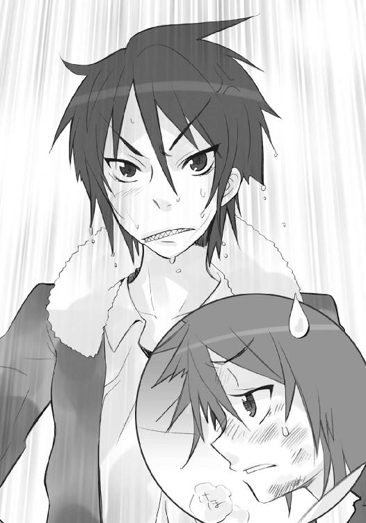
日暮れも近い空の下を、霧雨が音もなく、風の姿を朧になぞっていた。
教室の大窓は、常は広げる街のパノラマを、うっすらとぼやかし、奥へと秘めている。
そんな、幻想的な光景を、吉田一美は帰り支度の手を止めて、ぼんやりと眺めていた。
（すごく、静かに見える）
実態とかけ離れた感想を抱く周囲、終業のホームルームを終えた市立御崎高校一年二組の教室では、忙しくも賑やかに少年少女が行き来している。
「あーあ、傘忘れちまったよ」「帰るまでに止まなかったね」「昼から降るって最悪〜」
晴れなら晴れで、雨なら雨で騒ぐ彼ら彼女らは今、
「藤田ちゃーん、この置きっぱなし、使っていい？」「んー、前の学期からあるね、いいんじゃない？」「あっ、それ、あたしが狙ってたのにー」「ちぇ、こうなったら走ってくか」
などと、濃霧のような雨を突っ切って帰れるかどうか、話し合っていた。
その喧騒もやがて、一月半ばの寒さまで薄めるような、不思議な雨の中へと散ってゆく。
なおも窓の外を見ていた吉田は、
「一美、聞いてる？」
緒方真竹の声で、ようやく我に返る。
「えっ、なに、緒方さん？」
「だーかーら、実力テストの話。今日やった教科、ポイントをメモっといてくれる、って約束だったでしょ」
「あ、ごめんなさい......はい」
ノートに挟んでいたメモ用紙を、慌てて吉田は渡した。
「ありがと！」
受け取った緒方は、一通り内容を見て、急に肩を落とす。
「はあ〜。出題範囲、広いなあ。休み明けから二週間も経ってないのにテストって、年末も正月も勉強しとけって言ってるようなもんよね。ご丁寧に部活まで休ませてさ」
「でも、大半は二学期末までの復習だよ？」
なにに向けてか、とりあえずのフォローを入れてみる吉田に、緒方は笑いかけ、落とした肩をわざとらしく竦めて見せた。
「うーん、分かってませんねえ、ヨシダカズミ君。それがキチンとできてるような子は、最初からテストに悩んだりしないの」
「それは、そうかな」
吉田も小さく笑い返す。
と、笑い合っていた緒方の顔に、ふと翳が差した。
「夏のときみたいに」
視線は、教室のとある場所に、振り向けられている。
「みんなで勉強会、できればいいのにね」
「！」
その視線を、吉田は追う。
既に人も疎らな教室に、そうと思えばそう見える、ひっそり佇む二つの席がある。
なかったことになった二つの方ではなく、在って、しかし開いている、二つの席。
「佐藤は転校の準備、田中も家の用事で遠出、マージョリーさんまで海外にお仕事だっていうし......寂しいね」
「うん」
吉田は──三者についての虚偽情報を周囲に伝え、誤魔化す役目を負った者として──ただ曖昧に頷くしかなかった。
佐藤啓作の欠席は転校の用意のためではない。
田中栄太が休んでいる理由は家の用事ではない。
マージョリーも仕事で出かけているわけではない。
そして、あの二人......少年と、少女も、いなかった。
いなくなり、欠け落ち、しかし気付かれることはない。
「......」
真実を隠す行為そのもののように、顔を逸らして周りを見れば、最後の生徒が挨拶とともに駆け去って、教室には二人だけとなっている。廊下を時折通る他クラスの生徒らの声が、遠く近く届いてくるだけの光景。
「............」
そこを見つめる内に、緒方の言葉に誘われてか、愛惜の念が滲み出していた。
空白を埋めるように、いつかの自分らの姿が浮かぶ。
少女が大真面目な顔でメロンパンやお菓子を食べ、
少年がその様に笑いかけたり困ったりして眺め、
佐藤が日々の笑えるネタを披露し明るく騒ぎ、
田中がそれに応じて喜怒哀楽を大きく表し、
緒方が叱ったり、自分も加わって騒いで、
池が解説したり皆の話を纏めたりした、
あの楽しい光景は、二度と戻らない。
かつては在った、あんなに、あんなに楽しいことが、
かけがえのない大切なものが、失われていたことが、
全て誰にも、気付かれない。
「..................うん」
ただの返事が、震えていた。
「一美？」
緒方がびっくりして、友達の顔を見た。
吉田は涙をこらえて、友達に頷き返す。
「うん、寂しいね」
「ごめん、私、変なこと言っちゃった」
「私こそ、ごめんなさい......勝手に、こんなの」
はぐらかすように、吉田はまだだった帰り支度を始めた。
緒方も、それ以上は言わず、自分の鞄を取りに行く。
そこに、池速人が引き戸を開けて入ってきた。
「あれ、二人とも、まだ残ってたんだ？」
手には教室の鍵がある。どうやら戸締まりをしに来たものらしい。
緒方は努めて明るく返す。
「実力テストの相談してたの」
「へえ、そりゃまた、珍しく熱心だね」
成績の実情に大方の察しを付けている池は、軽口で答えつつ、窓の鍵を確認し始めた。
「珍しく、は余計！」
強く言って、緒方は鞄を閉じる。もちろん悪意がない仲間内の冗談と分かっているので、怒ってはいない。
ようやく心を落ち着けた吉田も声をかける。
「池君は、今日も生徒会？」
「まあね。どうせ居残りだから、戸締まりも日直に代わってやった、ってわけ」
今度はカーテンを閉めながら、池は答えた。続いて教壇の中を覗き込み、日誌や教師の持ち物が忘れられていないか確認する。全く常のように、キビキビとして手際が良い。
そんな彼の様子を、吉田は嬉しく思う。
彼との間柄は、クリスマスでのとある一件──池の告白と吉田の拒絶──以来、しばらくギクシャクしていたが、共に学校で過ごす二週間の内に、どちらからともなく蟠りを融かしていた。どちらが悪いわけでもなかった、決裂でも仲違いでもなかった行為により生まれた『気まずさ』は、お互いの（そして周りの）気遣いと努力で、ようやく薄れたのだった。
もちろん、完全に元の関係に戻るわけではない。
これまでのような、少年と少女であることを忘れるほどの、不用意な近しさはなくなっていた。少年は過保護なまでの手助けを止め、少女も無邪気に相談を持ちかけることはない。
（でも、それでいい）
と吉田は思っている。
辛い、苦しい、と感じた事実を、なかったことにしてはいけない。楽しい、嬉しい、と感じた日々と同じように、そこで得たものが、今在る二人に繋がっているのだから。
（それが、大事なんだ）
そう、思えるようになった。
彼女は、何事もない日々に暮らしている者なりに、常人の自分たちが滅多に使わない、フレイムヘイズたちがよく使っていた言葉......『世界』というもののイメージを、漠然とでも抱けるようになっていた。当たり前に生きて行ける日々を積み重ね、なんでもない普通の人々が連なり合って、それが作られてゆけることの、素晴らしい実感を。
もちろん『素晴らしい実感』には、辛さ苦しさも含まれている。
（私もいつか、この想いに、なにかを見つけられる......？）
一つの、癒えない傷、薄れない痛みが、少女の胸に滲んでいた。
過去のことと捨てるには辛く、今に留め続けるには苦しい、確かに残っている想いが。
ほんの数日でなにが変わるわけもない煩悶を、今は首を振って払う。
見れば、池はマメなことに、黒板の端にある日付と日直の名前を、明日のものへと書き直していた。やがて全作業を終え、待つでもなく待っていた二人に言う。
「じゃあ教室、閉めるよ。二人とも傘はある？」
鍵を閉める前に、池が確認する。
彼らしい、抜かりのない気遣いに、
「ありまーす」
「うん、ありがとう」
二人は手にある折り畳み傘を示すことで答えた。
教室の明かりが消える。
訪れた意外なまでの暗さに、吉田は見えざる空虚の侵食を見る思いだった。
程なく、すっかり人気もなくなった玄関ロビーで、
「それじゃ、また明日」
「じゃねー」
「さよなら、池君」
軽く言って池と別れた二人は、傘を差して校門に向かう。
濃霧にも似た霧雨は、いつしか小降りとなり、夕暮れの中でカーテンのように揺らめいていた。寒さがなければ傘を畳んでもいい程の淡さである。
緒方が楽しげに傘をヒラヒラ舞わす。
「うわあ、キレー」
「雨って、こんな風にも降るんだね」
吉田も傘を傾けて、空を見上げた。
赤い夕日が薄い雲を透かして、カーテンを白く赤く染めている。
その耳に、
「さっきは、ごめんね、一美」
緒方の小さな声が届いた。
「え？」
見れば、彼女は傘を少し傾けて、顔を隠している。
「あのさ、佐藤が転校する前に......田中や池君を集めて、もちろんマージョリーさんにも来てもらって、皆で賑やかにパーティーしない？」
その声には、変わってゆくものを繋ぎ止めたいと願う気持ち、吉田が抱いた『素晴らしい実感』の一つが、確かに表れていた。
自分の方は顔を隠さず、強い言葉で答える。
「うん、絶対、そうしよう」
「絶対......うん、絶対ね」
緒方は小さく頷く気配を見せると、パッと傘を上げて精一杯の笑顔を見せた。
「それじゃ、また明日！」
大声で言って、元気に駆け出す。
その背を雨のカーテンが払い、夕暮れとは思えない眩しさで包んだ。
思わず目を細めた吉田も精一杯、大きく返す。
「うん、また明日！」
思いやってくれた友達の優しさに、眩しく輝いている光景に、思っていた。
緒方や池が、なにも知らないからこそ暮らしてゆける、そんな世界の大切さを。
すぐ隣に潜む、抗し得ない者たちに踏み躙られるしかない、そんな世界の残酷さを。
（そう、だったんだ）
彼女も歩き出す。
（シャナちゃんは、ここを守ってくれていたんだ）
雨の中を、一人だけで。
（坂井君も、ここを守るために、なにかをしようとしている）
去った者たちを、思いながら。
（私は......ここに取り残された私は......どうすれば、いいんだろう？）
そして、
何者かが、時を計ったかのように、
その影を、霧雨の帳の中に、見た。
彼女もよく知っている、その影を。
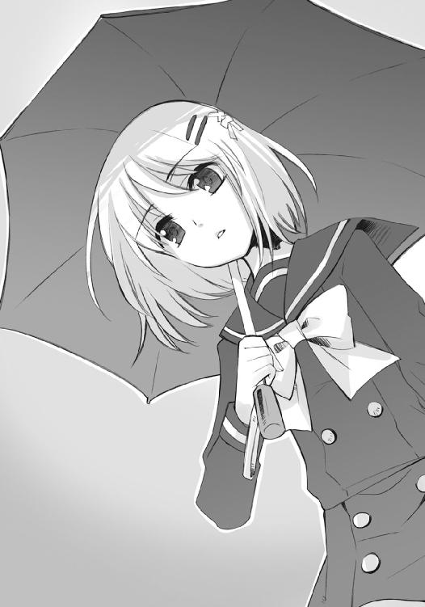
（......）
いつか出会ったときと全く同じように、人気のない歩道に、ぽつん、と一人。
それが、逃げようと思えば逃げられる、と錯覚させる霧雨の中、うっすらと。
真冬にも拘らず麦藁帽子を被っている、年端も行かない、小柄な少年だった。
右の肩に担いでいるのは、布で巻いた、身の丈の倍はある長く太い棒である。
互いを隔てるものを貫き通してぶつけられる存在感が、異常なまでに大きい。
（──）
吉田の足は、心のままに、進退を迷った。
鞄を持った手は、胸元に当てられている。
そこに、未だかけられているものは、ギリシャ十字のペンダント。
自らを試すはずだった、既に意味を失ってしまった、想いの残滓。
宝具『ヒラルダ』。
なぜか、それを握っている。
（──り）
視界に、奇妙な光景があった。
少年が、立ったまま、近づいてくる。
否、吉田の方から、少年に歩み寄っていた。
なにもない歩道で、たまらず躓きかけて、さらに。
（──っぱり）
彼女は、少年に去られてしまった。
ヴィルヘルミナの援助要請も断った。
もう何事にも助力する意味はなかった。
（やっぱり、だ）
当惑が、少女の胸中を占めていた。
もう、なにをやっているのか、分からない。
良かれと思い、選んで、全てが終わったはずなのに。
（私は、前に進んでる）
霧雨の中、少年の姿が、はっきりと見えてきた。
いつか彼女が贈った麦藁帽子に、ビニールが被せてある。
目は帽子の鍔に隠れ、ただ一線、縦に傷の入った口元だけが見える。
（同じだ）
少年と、最初に出会ったときを思い出す。
あのときのように、少年の口が開いてゆく様が、はっきりゆっくり、見えた。
あのときのように、望んで、しかし恐れていたものを確かに、そこに感じる。
しかし、
「お久しぶりです、カムシンさん、ベヘモットさん」
今度、先に声を発したのは、吉田の方だった。
なにかが変わっていた。
３ 答えの在処
煌々と夜を照らす月光の下、『星黎殿』は止まっていた。
巨大な球体は地に着くほどの低空にあり、隠蔽の殻『秘匿の聖室』も上部三分の一ほどが開けられたままである。外からは、要塞に聳える尖塔群の先端だけが、在り得ない夜の蜃気楼のように、また姿を覗かせる仙境のように、中空に浮かんで見えた。
その下方一面に広がるのは、雲海から突き出す、絶壁だけで形作られたような岩峰群。疎らに松が飾るそれらは、細く曲がり、太くうねり、無言で天を突いている。
広大な中国の中南部、分け入る者もない、この深山幽谷の地こそが『星黎殿』の目的地、彼ら［仮装舞踏会］が密かに定めた戦いの策源地だった。
盟主──〝祭礼の蛇〟坂井悠二が、三柱臣らに代わって石塔の頂にある。
風もない、冴え渡るような月夜の絶景を敷いて、しかし目を落とさず、ただ上を、月と星が支配する空の一点だけを凝視している。動かず佇む、神秘の影絵と見える姿の内、その黒い瞳だけが、どこまでも貪欲に、月も星も越えた先に在るものを捉えんと光を吸い込んでいる。
時は、零時に近い。
石塔と反対側、『星黎殿』下半分を占める岩塊部深奥の秘匿区画に、四人の影がある。
四人を囲んでいるのは、立体的に浮かび上がった自在式。薄暗い機関大底部、複雑怪奇に絡まり合って暗がりに沈む機器類を炙り出すかのような、銀色の自在式である。
中央に立ち、地に突くステッキへと両の掌を乗せているのは、〝屍拾い〟ラミー。
「なるほど、概略については凡そ理解した。それにしても......〝ミステス〟坂井悠二の意思総体と、『大命詩篇』からなる〝祭礼の蛇〟のそれを、二つ存在する『暴君』のシステムを応用して共存させるとはな。いかにも貴方らしい、ユニークな方式だ」
その右隣、ガクッと肩を落とすのは、教授こと〝探耽求究〟ダンタリオン。
「私の本んー意ではありません！ 私なら、あぁーぁ私なら、こぉーんな脆弱！ かつ不確定要素満っ載！ の素体を使ぁーったりなど！ そぉーもそも、改造自由機能追加し放題！ の『暴ぅー君』をこそ準備していぃーたと言うのに！ 今やそぉーの多重顕現機能を流ぅー用した補助武装扱いに成ぁーり下がってしまったとは......嘆かわしぃーい限りです！」
さらにその右、床から生えた機器を弄っているのは、カンターテ・ドミノ。
「あれ？ その〝ミステス〟にどう戦闘力を付け加えるか、張り切って改造した結果が、今の盟主様代行体の諸機能だったはずへはひはははは！」
ラミーの左隣、抓り抓られの騒ぎに構わず言うのは、〝逆理の裁者〟ベルペオル。
「他でもない、我らが盟主の御諚とあれば、どんな方式であれ、否とは言えないさ。こうなった以上は、こうなった今を、万全に保つしかない......カンターテ・ドミノ、構成の本譜を表示しておくれ」
「はひへほはひはふへふ！」
抓られたまま、ドミノが手元の機器を操作すると、彼らの前方に光の点が現れた。
輝きを凝縮した、眩く目を焼く銀色の光。数秒、中空に留まってから、爆発するように膨れ上がったそれは、機関大底部の高い天井から床までを埋めるほどに巨大な、球状の自在式だった。精密にして微細な、法則性を一見しては読み取れないほどに膨大な紋様である。
「ほう......」
ラミーは、その類を見ない威容に、文字通り脱帽した。目線鋭く、表層にある紋様の流れを観察し、さらに深く、本質を読み取る作業へと入る許可を、教授に求める。
「ダンタリオン、ここにある映像だけならば弄っても良いか？」
「バァーックアップは『吟詠炉』に取ぉーってあります！ 貴女の思う儘に弄ってくれて問ーっ題ナァーッシン！」
ビシッと親指を立てつつ、教授は胸に下げた諸々の物品からメモ帳を取り出した。
「こぉーちらのフィィーリングッメモ帖も、スゥータンバイオォーッケイ！ いぃーつものように、ェエークセレントな参っ考資料ーの提供を願いまぁーすよぉー？」
ラミーは頷くと、映像の操作を、ドミノを介さず掌握にかかる。
「では、お言葉に甘えよう」
言って、軽く片手を前に振り向けた。
ベルペオルは、静動に振り幅の大きなやりとりを眺め、クスリと笑う。
（どうしてこれで、ぶつからずに済んでいるのやら）
面倒がなくて助かることに、この二人は旧知の間柄だった。時に影響を、時に迷惑を、かけたりかけられたりしながら数百年、自在法『封絶』の発明を筆頭に、互いに様々な成果や惨禍を史上に残している。正反対としか見えない本質と志向を持ちながら、あるいはそれゆえか、平然と双方、在り様を尊重し合っているのだった。
（天才といっても、色々あるものだ）
と、見る先で、自在式が、銀河の弾けるように全方位へと分解される。
膨大にして繊細な紋様が、その集合物たるの内実を露にしていた。
一見すると、蜘蛛の糸で隙間なく織り成された惑星。
それも、ただ丸めるだけでなく、各所へと関連付けて繋がり、不規則に折れ曲がって続いてゆく、とんでもない長さ複雑さの塊でもある。この形自体が、至高の芸術品とすら見えた。
ラミーは改めて嘆息し、
「いかに創造神〝祭礼の蛇〟の意向、その手になる式とはいえ......よくもここまで膨大な量を一繋ぎに組み上げ、モノを動かそうなどと考えたものだ。ほとんど、砂絵で大陸の小路一つまで再現するようなものではないか」
さらにもう一段、細かく分解した。
ベルペオルは、比喩への論評を避け、微笑み返すのみ。
と、ラミーは分解した一区画に目を留め、そこだけをまた分解、思案する。
「ダンタリオン、ここに『吸収』の式が相当量、設けられているな。駆動中枢や顕現機能などにも関連付けられているようだが、どういう用途からのものだ？」
「んんー、そぉーれは転移先で実ぃーっ体化し、フリィーィダムな行動を持続さぁーせるための、捕食機能の一部でぇーすねぇー？」
教授が答える間に、ラミーは最初に表示してあった自在式、代行体〝ミステス〟坂井悠二の組成表、その中から目当ての部位を、見やすい位置に幻灯機のようにグルリと回した。
ベルペオルが尋ねる。
「なにか、気になる部分でもあったかね？」
「貴女の事前説明にあった、鋭敏な気配の感知能力とは違うが......式の調和に、どことなく不自然さを感じたのでね。機能不全ではないようだが」
不備なく動けばよしとする技術者の教授とは違う、そこに在る中に意味や流れを見て取る芸術家として、ラミーは奇妙な一片を捉えたのだった。
「やはり......代行体の中で、合一の以前から稼動していた形跡がある」
怪訝な顔をする一同に向けて、説明のために自在式を変化させる。
「つまり、だ」
幾つかの式が抜け落ちて密度を薄め、整理、圧縮された。
その一部が、何らかの作動を表すように順序立てて点滅、流れを示す。
「かつて『零時迷子』の方に込められていた、素体の核となる『暴君Ｉ』のみの時点で、この機能が作動している。本来これは、世界各地に転移して人格鏡像を採取する『暴君II』にしか必要とされない機能のはず、だな？」
教授が、取っているメモと一緒に、首をガクンと傾げた。
「たぁーしかに妙ぅ〜ですねえぇー？ 『我学の結晶ェエークセレント１３２７４─暴君Ｉ』と『我学の結晶ェエークセレント１３２７４─暴君II』は、合ぅー一を前提にした同位体でぇーすから、いぃーちおう両方に機能自体は付ぅーいていますが──ドォーミノォー!?」
「はいでございますです！」
主の意を察して、ドミノが手元の機器でラミーの表示した部位のチェックを始める。
「ええと......〝壊刃〟様が『大命詩篇』を『零時迷子』に打ち込み、宝具内部に『暴君Ｉ』の核を構成する、その計画段階では、通常稼動には不要なものとして、ご指摘の機能は休眠させる設定となっていたはずでございますです」
ベルペオルの表情が、他者に意図を読み取らせないよう、鈍く静かなものとなった。
「休眠させていたはずの機能が、稼動していた......？ そういえば教授、覚えているかね」
「んんー？」
メモから顔を上げる教授に、確かめるように訊く。
「合一の寸前、こちらで『暴君Ｉ』をモニターし始めたとき、素体となった〝ミステス〟の〝存在の力〟が、常人にはあり得ないほど大きかっただろう？」
言われて、教授はメモをバラバラとめくり、やがて一点に目を留めた。
「んーんんん、確かにそぉーのような予想ーっ外の現象が認めらぁーれる、と書ぁーいてありますねぇー？ ドォーミノォー！ 稼ぁー動モデル、ナァーンバー３７７６０を表ーっ示！」
「はいでございますです！」
再びドミノの操作によって、新たなグラフが前面に浮かび上がる。簡略化された人型に色を付け、棒やら円やらを各部に表示するそれは、素体となった〝ミステス〟坂井悠二の〝存在の力〟総量が、月日と共にどう推移したかを表すものだった。
「えーと、添付メモを読み上げますです──［先だって『暴君』が暴走し、想定外の顕現を果たしかけた際、同様に吸収機能も発現。結果、接触した〝彩飄〟の力が付加されたものと考えられる］──以上。えー、さらに追加──［なお後日、盟主自身により、最初期接触した〝千変〟の腕も、数ヶ月遡った時期に吸収付加されていた、との証言あり］──以上」
ベルペオルは、その報告とグラフに示された経緯から、類推する。
「シュドナイの腕まで吸収したというのはおかしいと思っていたが......つまるところ、本来ならば休眠させていたはずの機能が誤作動を起こしていた、で片付けられるのかね」
ラミーは頷いて、当面の所見を述べる。
「概略としては、そういうことだ。核にした宝具『零時迷子』に予め施されていた他者の『戒禁』との相互干渉で、狂いの生じた可能性が高い。この誤作動の周辺を洗えば、鋭敏な感覚など全体に及んだ異常の、原因を突き止める手がかりくらいは得られるだろう。並行して、貴女の依頼の一つ、宝具に深く絡み付いているという不確定要素の件も調査してみよう」
内心を隠す表情のまま、ベルペオルは数秒、その不確定要素──気付いてはいても容易に取り払うことのできないモノ──についての思索を経てから、頷いた。
「......結構、宜しく頼むよ。私たちの方は、大命の第二段階に取り掛からなきゃならないのでね、代わりに幾人か補佐を付けるとしよう」
手助けなど不要なはずの最高の自在師〝螺旋の風琴〟に、それでも補佐を付けるのは、事態解明の助手として使え、という意味ではない。そもそも、教授レベルの頭脳を持っていなければ、作業を共にしたところで雑用以上の役になど立たない。要するにこの指示は、自分たちが不在の間に妙な真似をしないように、というベルペオルによる念押しなのだった。
もちろん、ラミー当人もそういう立場であることを了解した上で招かれているので、特段の不満を感じるでもない。表に見える態度としては、帽子を被りなおしただけだった。傍ら、
「こぉーの不可解なぁー式の探求！ 大命第っ二段階のぉー遂行！ いぃーずれも興味深いテェーマでありながら、二ぃー者択一を迫られる我が身のなんったるハァードラック!?」
「さっきまで第二段階発動のお出かけにウキウキして、持てるだけの機材を厳選していたのへはひはひひはひ！」
教授とドミノの騒ぐ陰、帽子の鍔の下から、鋭い視線が変わらず式に注がれている。
移動要塞『星黎殿』の一隅に、休息所兼集会所たる酒保がある。
今そこでは、久方ぶりの奇妙な宴が開かれていた。
久方ぶり、というのは、主賓が普段は『星黎殿』に寄り付かない三柱臣の将軍〝千変〟シュドナイだったため。奇妙な、というのは、彼がフラリと酒保に現れ飲んでいる間に、いつしか周囲を錚々たる面子が埋め尽くしていたためである。
元から集結していた兵員に加え、帰還した遠征軍をも抱え込んだ要塞は、近い出撃に備える緊張、待ち焦がれる熱気、少量の恐怖などで、見た目も雰囲気も飽和状態となっている。
酒保での宴は、それらが最も顕著に表れる場だった。
薄暗い照明は各人が好き放題に点す色とりどりの炎に掠れ、分厚く古い絨毯には巨体が座りこみ、年代様式もバラバラな椅子とテーブルは満席満杯、声やら音やら動きやらが、一つの制約、あるいは許容の元で弾け溢れている。
即ち、『将軍の機嫌を損なわない限りは』である。
当のシュドナイは、広い酒保の端に陣取り、サングラスで表情を隠し、ペースを変えることなくゆっくりと、無色の酒をショットグラスで口に運んでいる。
彼の傍らで床に座る、全身を獣毛に覆われた異形の鳥男、布告官〝翠翔〟ストラスが、
「ここで飲まれるのは、いつ以来ですか、将軍」
皿に載った鵞鳥を腹の口で齧りつつ言った。無礼講を最初に言い渡されたため、口調からは常の慇懃さが多少、薄れている。それでも、わざわざ床に座るなどの線引きを行っているあたり、いかにも彼らしくはあった。
訊かれたシュドナイは、興味なさげに、もう一口を呷る。
「さてな。相変わらず酒が不味い、と覚えているほどには来ているが」
空になったグラスを置くと、すぐには酒を注がず、端の席......酒保の全てを見渡せる位置から、空気を満たす騒動へとサングラス越しの視線を泳がせた。
カウンターでは、オロバスとレライエが、
「さあ、いいから飲み給えキミ！ これは今日のために取って置いた酒だ！」
「そ、そんな、駄目です......私、もう、酔っ払ってしまって......」
互いに顔を真っ赤にして葡萄酒の杯を交わしている。
真ん中あたりでは、ピルソインを手の先に乗せたリベザルが、
「ややや止めてよリベザル、あああ危ないってば!?」
「はあーっはっは！ そおら、高速飛行だっ!!」
ブンブンと宙を振り回して遊んでいる。
また別の場所、騒ぐ人垣の中で、
「隊長、俺ぁ嬉しいっす！ とうとうこの日が──」
「どうか私を、お傍で死なせてくださいましね？」
「てめ、なに縁起悪いお願いしてんだよ！」
「......酒を過ごすな、出陣も近い」
ハボリムが言葉少なく、二つあるガスマスクの吸気口に一つずつストローを挿して、泡立つシャンパンを飲んでいる。
他所でも、楽師〝笑謔の聘〟ロフォカレがリュートを掻き鳴らして歌い、
「宝を探し火を求め、茨の坂に身は弾む......」
曲に乗って大男が陽気に戯れ、目つきの悪い少年が陰気に付き合い、仮面の騎士は無言で剣を磨き、美麗の獅子は老いた駱駝と語らい、暴れる髭面に黒服の二人組が巻き込まれ......人の姿や異なる形、飲むも飲まぬも、騒ぐも騒がぬも、様々取り取りな情景が、そこに在った。
誰も彼もが浮かれている。
同時に、浮ついてもいる。
仕え守ることを宿命付けられた眷属にして、大集団を統率する［仮装舞踏会］の将軍、趣味から他者の依頼を受けていた〝王〟でもあったシュドナイは、他者の感情を察することに長けている。今、彼がこの饗宴の場に感じるのは、
（不安、か）
それは、戦いに対するものだけではない。
誰もが、創造神に付き従うことで直面する『世界の変革』に、本質的な覚束なさを抱かされている。己が存在というものを自覚的に維持する生き物〝紅世の徒〟であればこその、大きな不安だった。
シュドナイはグラスに酒を注ぎつつ、声を放る。
「すまんな。ここ一番の大戦に、将軍たる者が外すことになる」
ストラスは、自分に向けられた声ではないと知りつつも、代わって首......はないので、胴体を丸ごと振った。
「我らはこの地に残って我らの為すべきことを為す、眷属方は彼の地に向かい眷属方の本懐を遂げられる、というだけのこと。お気に病まれる必要はありません。むしろ、そちらへの助勢が、頼もしきとはいえ、お一人に限られたことが残念でなりません」
二人のすぐ後ろ、本当の端の端である酒保の壁に、一人の〝王〟が背を預けている。暗がりに溶け込むような黒マント、顔まで巻き布で覆った〝壊刃〟サブラクである。
「元より三眼の女怪には、この段階までの助太刀を求められている。そもそも殺し屋たる俺の力は、所を定めぬ広域・大規模な戦闘には不向きだ。適材は適所にということだろう」
ブツブツと答えるでもなく答える彼を、とりあえず措いて、ストラスは続ける。
「ともあれ、こちらで戦う我らは、大命に赴かれる三柱臣ご一同の後背を守る盾として配されているのです。その立場を光栄に思いこそすれ、負担などとは」
「......」
模範的な回答を気休め程度に受け取って、しかしシュドナイはやはり、責任者当人からの回答が欲しくなった。テーブルの下にあったものを、軽く蹴り飛ばす。
コインのように跳ね、床に座るストラスの目の高さあたりで止まったそれは、クルクルと回る、小さな自在式。言うまでもなく〝渺吏〟デカラビアのものである。
「なにか、将軍〝千変〟シュドナイ閣下」
感情のない声が、意図を察せぬまま尋ねた。
シュドナイは軽く、軍議で決まった方針を、改めて確認する。
「俺たちの勢力圏内に敵の偵察部隊が浸透するまでは、相当に時間を食うだろう。仮に大軍が踊り入ったとして、『秘匿の聖室』に守られる『星黎殿』が易々と発見されるはずもない。が、しかし......なにが起こるか分からんのが戦だ。何度も言うが、用心してかかれ」
「作戦方針は、了解しております。私が統括する以上、心配無用」
デカラビアは気負う感情の一片も見せず、簡単に請け負った。
予想通りの受け答えに溜め息を一つ吐くと、シュドナイは、
「兵を無駄に殺すなよ」
半分ほど中身の残った酒瓶を、自在式の浮かぶ床へと放り投げる。
酒瓶は床に落ちて割れず、ドボン、と鉄色の波紋を残して沈んだ。
ほどなく回っていた自在式が、その軸を乱してふらつき始める。声だけは同じ、
「仕掛けの段階は攻勢、反抗を受けて以降は守勢──『星黎殿』への到達にのみ留意」
無感情に答える。
「そういうことだ。とにかく、俺たちの帰還まで持たせろ」
言って、シュドナイは自在法を蹴り込み、テーブルの下へと戻した。
「代わりをお持ちしましょう」
「いや、もういい」
立ちかけたストラスを止め、先とは違う種類の嘆息をする。
「どうせ一緒に飲みたい奴もいないんだ、これ以上は悪酔いにしかならん」
その意味を知る古株の布告官は、同情の笑みで返した。
「たしかに、このような場にお付き合いくださる方ではありませんね」
「ああ」
短く不機嫌に返し、また酒保の大騒ぎへと目をやる。
「好きに、させるさ」
その口から、不透明な呟きが漏れていた。
「どう転んでも......その結果に在るものを守るのが、俺だからな」
後味の悪い、悠二との再会を思い返して、シャナは顔を湯船に浸けた。
（どうして、あんなに......）
少し躊躇して、やはりそれ以外の言葉が見つからず、自身を断罪する。
（あんなに、怯えたんだろう）
おかげで、敵首魁との一対一の面会、という千載一遇の機に得ようとした、状況の変化、各種情報の獲得、洗脳の打破、全ての目論見が、台無しになってしまった。
そう、理屈で考えて、
（違う）
湯船の中で顔を顰める。
（どうやっても無理だった、たぶん）
そのまま、なにかを堪えること数秒、勢いよく顔を上げた。強く荒く息を吐いて、乱れる心と動悸を、意識的に感じる。自分を激しく動揺させるものを、あえて思い出す。
（あれだ）
悠二が伸ばす、手。
あれが、どういうわけか恐くてたまらない。もし、あれに捕まってしまったら、決定的な何かを掴み取られてしまう......そんな、得体の知れない危機感だけが湧いてくる。
（情けない）
今も彼女は、悠二の指示どおりに動かされていた。
この入浴は『とある重要な式典』に参加するための支度なのである。バスルームの外では、世話役たちが新しいドレスを着せるため、待ち構えているはずだった。他者に自分を左右されることには、たまらない腹立ちを覚える。
が、今はそれよりも、
（どうして、なんだろう）
との疑問の方が強い。
ただの掌を、なぜそこまで恐れてしまうのか。
あの何気ない仕草のどこに、そんな強い力が。
湯気の中、その理由を探るため、同じように右の手を伸ばす。
いっぱいに伸ばし、掌を開き。
（本当は、こう、しようとしたんだ）
硬く、握り締めた。
（悠二は......私を掴もうとしたんだ）
彼の行為が成された結果について、ふと、気付く。
（これは──もしかして）
また開いて、硬く握り締め、その意味を確かめる。
（違う──こうじゃない）
また開いて、今度は柔らかく優しく、握り締める。
（そう、これだ）
これを、このやり方を、込める力を、彼女は知っていた。
かつて、一人の男の手を、こうして握ったことがあった。
ずっと一緒にいて、その最期のときに、たった一度だけ。
とても、温かな手だった。
（あそこに在ったもの？）
胸の奥に刻みつけられた言葉が、鮮明に蘇る。
（──「〝紅世の王〟さえ一撃で虜にする力を生む、この世で最強の自在法」──）
同じ胸の中で、別のものと、それは繋がる。
（──「もう他は要らない......私だけで......私と、ヨーハンだけで、いい」──）
想いの断片が、一つ一つ、連なってゆく。
（──「それは何事にも阻めぬ。何人にも否めぬ」──）
想いを、次々と巡らせる導因は、強さ。
（──「私はお兄様の望みを叶える、私はお兄様を守る、それが私の全て」──）
連なり、巡る、なにかもが......強さ。
（──「ここで得られる力、全てを使ってでも、君を蘇らせてみせる」──）
ときに確かに、
ときに無法な、
ときに静かで、
ときに激しく、
ときに切ない、
全てが、強さ。
悠二の手に恐れを抱いてしまった、その理由も同じ、
（──「君と共に、生きたいんだ」──）
それは、彼が抱いている想いの、揺るぎのない強さ。
（私、悠二の掌にある力のことを、知ってた）
得た確信の姿のように、シャナは立ち上がった。
肢体を形作る精美の流線を温水が滴り落ち、立ち上る湯気がその衣となる。
広い浴室の、装飾も簡素な石造りの床をペタペタと裸足で歩き、淡い照明の下に置かれた棚から、バスタオルを取った。決まり切った作業として体を拭きつつ、思索を続ける。
（私も知っていた気持ちだったんだ）
拭き終わったバスタオルを、続いて、髪を纏めるため頭に巻いてあったタオルを、棚に放った。面倒と思い、滅多にやったことのなかった女性の作法......坂井千草に教わったそれを、彼女は囚われて以降、頑なに守っている。
（みんな、言葉で誓って、在り様で示していた）
傍らにある姿見の曇った鏡面を一筋、掌で擦った。
映し出された細い裸身は、またすぐに霞み、薄れてゆく。
自らを捧げて散った女性の姿と、それが胸の中で重なっていた。
答えが、見えた。
（──「そう、愛」──）
シャナは今になって、彼女の言葉や在り様に衝撃を受けた真の理由を、見出す。
あのときの自分には窺い知れない種類の『強さ』を、目の当たりにしたのだった。
狂気ではなく理屈も打算もない圧倒的な『強さ』の姿に、圧倒されたのだった。
自分の唇で、彼女の言葉を、ゆっくりと、なぞってみる。
「そう、愛」
いつか、背伸びして、大事な男の最期に言ったことがあった。
（──「私も、愛してるよ」──）
しかし今、口にした実感は、あのときのものとは違っていた。
（──「うん、そういうことなら、俺もさ」──）
彼の慈しむ微笑が、無邪気にその言葉を使う『娘』への答えであったことも、知る。
「愛」
自覚して口にすることで、遂に辿り着く。
彼が無邪気な娘へと遺した言葉の意味に。
娘がいつか出会うもののため、手を握って遺してくれたそれが、
（──「覚えておけ。ここにあるものは、〝紅世の王〟さえ一撃で虜にする力を生む、この世で最強の自在法だ。いつか、自分で見つけろ」──）
自分を見つめ、手を伸ばしてきた少年の、言葉と姿に、繋がる。
（──「シャナ、君と歩くことを、ずっと夢見てきた。君の望んだとおり──僕は強く、強く、強くなった──だから、今......君と歩き、君を守るための戦いを、始める」──）
シャナは、さらにもう一度、今度は胸元へと手を当て、ぐっと握る。
（シロ......私、見つけたよ）
無垢な少女として巣立った『炎髪灼眼の討ち手』は、数年の時を経て、
（最強の自在法は、ここにある）
育ての親が遺してくれた問いかけへの答えを得、
少年が自分へと向ける想いを理解したのだった。
そうして何分、あるいは何秒、佇んでいたのか。
湯気も薄れた空気が、肌を撫ぜる。
「......？」
ようやくシャナは思索から醒めて、怪訝な顔になった。
ここで寝起きするようになって数日、入浴を終えると、外で控えていた〝徒〟か〝燐子〟かの女性らが、髪を梳いたり乾かしたりの世話に現れるのが常だった。この手の作業に慣れていないシャナも、どうせ監視も兼ねているのだから、と遠慮なく便利使いしていた。通例の世話を、それも『とある重要な式典』の前に放置されるというのは、解せない話である。
なにより、浴室には着替えがない。仕方なく、初めて使うブカブカのバスローブ（という名称を彼女は知らないが）を羽織って、シャナは浴室から出た。
「──」
瞬間、喪失感にも似た、不気味な引力が総身を走る。その導くまま首を巡らせた彼女の視界に、床へとぶちまけられたドレスらしき衣類、下着、靴などが飛び込んできた。
同じく、ぶちまけられた、世話役の女たちも。
覆面や白装束の裂け目に、血肉ではない、砕けた石像のような断面が垣間見える。覚えのない色の残り火が微かに燻って、やがて装束もろともに、消え失せた。
その火の粉を巻いて、風が大きくテラスに続く大窓から吹き込み、
「!!」
シャナは反射的に振り向く。
（まさか、助けが!?）
一瞬の楽観は、振り向く動作の中途で否定される。
肌に痛みを感じるほどの、鋭く強い殺気によって。
それは、助けなどではない、正反対のものだった。
振り向いた先、星空を背に佇んでいるのは、一人。
白い帽子とマントを纏う、明るい水色の瞳の少女。
〝頂の座〟ヘカテーだった。
シャナは戦慄とともに体の底へと力を入れ、身構えた。
見据える先で、ヘカテーは唇の違和感ほどに小さく、抹殺の意思を呟く。
「おまえは──要らない」
尖塔の頂で空を見上げていた〝祭礼の蛇〟坂井悠二は、ゆっくりと目を閉じた。
「......よし」
夜に溢れる光の下、喜びの声を零し、身の奥底で力を充溢させてゆく。呼応するように、黒い火の粉が周囲を漂い始めていた。
「さすが、我が巫女......よくぞ、この座標に『星黎殿』を、余を、導いた」
ようやくの言葉、動き出したものへと制止をかけるように、
「この地に、なにかあるのか」
その首にかけられた〝コキュートス〟から、〝天壌の劫火〟アラストールが詰問する。
悠二は、まず少年として苦笑し、
「この数日で何十回目の質問だい？ シャナのための情報収集だとしても、律儀すぎるよ」
次に神として重々しく、答えた。
「なに、複雑な話ではない。今より『門』を作るだけのことだ」
「門......まさか、世界の狭間への入り口か!?」
アラストールには、［仮装舞踏会］の計画について、大筋の見当が付いていた。
仮にも神の眷属を中核とする世界最大級の〝紅世の徒〟の組織が、いつまでも代行体などという紛い物を戴いているわけがない......必ずや『久遠の陥穽』から、放逐された真の盟主・創造神〝祭礼の蛇〟を呼び戻すはずである、と。
夜の空に一人立つ坂井悠二は、今まさにその作業へと取り掛かっていたものらしい。
しかし、そうと分かっていてなお、アラストールは問い質さずにはいられなかった。
「馬鹿な、不帰の秘法だぞ!? いかに真正の神とは言え、〝紅世〟に生まれたる存在として、帰還できる道理はない！」
秘法『久遠の陥穽』。
対象物をこの世と〝紅世〟、両界の狭間へと追放する、究極のやらいの刑である。
秘法、究極、と言っても、作動させるための手間が大掛かりである、というだけで、原理自体は然程難しいものではない。常の〝徒〟らが〝紅世〟からこの世へと渡り来る際に使う（というほども意識しない）『狭間渡り』の術法の応用だった。
通常、この『狭間渡り』は、この世へと渡るときに『人間らの感情』、逆に〝紅世〟へと帰るときに『同胞らの渦巻く力』、それぞれとの共振を以って道標とする。
これら共振が、闇夜の灯台、あるいは太い引き綱となることで、いかに海＝両界の狭間が荒れていようと、泳ぎ着く先を示し、引き寄せる力となるのである（無論、灯台や引き綱があっても、荒れた海で遭難する危険性自体はある）。
しかし、『久遠の陥穽』は、これら共振を遮断した上で、両界の狭間へと、対象物を転移させてしまう。こうなると、目隠しをしたまま大洋に迷うも同様の状態となる。両界の狭間には、物理的な距離や位置関係などは存在しない。共振のないまま転移させられた者は、広大無辺の彼方を永遠に彷徨い続けるしかない......『久遠の陥穽』が不帰の秘法たる所以だった。
それを、
「いや、在る」
放逐された〝祭礼の蛇〟当人が、断固と否定する。
「道理は在るのだ、審判者〝天壌の劫火〟よ。余と、余の眷属らは、明確な成算を持って備えてきた。そう、数千年前、全く思いもよらぬ場で秘法の発動した、あの瞬間から──」
再び、炯炯たる黒を宿した目を見開き、ゆっくりと腕を差し上げた。明るい星天をすら塗り潰す力、創造神の証たる黒き炎が、その掌から溢れ出し、渦巻いてゆく。
「ふふ......この『零時迷子』、素体とした〝ミステス〟、双方とも実に使い勝手が良い。既定計画の通り『暴君』を素体としていれば、この業を成すだけの〝存在の力〟を得るに、人を万から喰らう手間をかけねばならぬところであった」
「むう......」
アラストールは、誰のためにせよ、それを僥倖と喜ぶ言葉を持っていない。
〝祭礼の蛇〟の方も、彼からの同意など求めない。ただ自身、逐われた者の道理を、燃え立つような歓喜を混ぜて語る。
「フレイムヘイズは誰一人として知るまいが、余はあの秘法に飲み込まれる寸前、余の軍師より、その分け身たる『旗標』を受け取った上で、放逐されたのだ」
歓喜は笑いとなり、心身に全能感を伴う充溢を齎す。
「その分かたれた二つの所縁を、余の巫女に手繰らせ、託宣を他心通として下し、余に代わって力を振るう代行体構築のための自在式を、試行錯誤しつつ授け続けた」
充溢した力は身の内より溢れ、空を黒く染めてゆく。
「其を銘じて......『大命詩篇』と謂う」
黒き炎は、既に頭上一円の空を埋め尽くしていた。暗雲とは異なる渦巻く力感が、闇ではない黒の在ることを、見る者の目に心に刻み付ける。
「余の側は、遠近・所も定まらず彷徨う身を、容易に捉えさせるため、狭間へと道を敷くことにした。時とともに余の存在を大きく伸ばしてゆく、道を」
差し上げられていた腕が引き戻され、胸元で拳が作られた。まるでそこに下がるアラストールへと見せ付けるように。拳には、鋼をも捻り潰す強力が宿っていた。
「そうして数千年、いささか当初の計画を違え、風変わりな形質を備えはしたが......遂に代行体は完成した。余に代わり、この世で創造神の力を振るい、道へと繋がる『門』を創造するための、代行体が」
「なるほど、な。その道とやらを辿り、本体を取り戻すつもりか」
「如何にも。我が巫女の導きによりて、この僻遠の地へと『星黎殿』を運ばせたのも『門』を創るため。この地は、かつて『久遠の陥穽』発動により生じた微かな歪みが、月日とともに漂い来た、この世で最も余に近き場所よ。見えざる歪みは今......我らの頭上に在る」
アラストールに堂々と告げ、悠二は頭上を振り仰ぐ。
消閑の裏で、いつしか創造を為すべき時が満ちていた。
「......」
天を埋める黒い炎は、緩く深い脈動を、大気に伝えている。
脈動と合わせて、悠二は胸元で握った拳へと、全力を込めた。
「──」
黒い炎の脈動と時の刻みが同調し、迫る予感が、確信へと変わる。
刹那、
「──命ず──」
拳が、
「──『神門』よ、在れ──」
指の一差しとなって中天を突く。
ズン、
と脈動が強く、大気を震わせた。
黒く燃え立つ空が、指を差され窪んだ一点に向かって、収束を始める。爆縮とも見える現象は、渦も巻かず、ただ引き込むように炎を呑み、月と星の夜を蘇らせた。
残されたのは、要塞にほど近い宙に浮く、漆黒の球。
創造されたモノが、ゆるり漂う、異様な静寂が一瞬、
その輪郭から、銀の炎が迸り出た。
目を煌きに焼く炎は、一頻り暴れると凍りつくように固まり、流麗壮美な銀細工の縁取りと化す。球もいつしか平面となり、〝祭礼の蛇〟命名するところの『神門』の全貌は、何物も映さず返さない、巨大な黒き鏡へと形作られていた。
「──成った!!」
悠二の顔で、歓喜が爆発する。
「ふふ......ふ、ふ、ふはあーっははははははははははははははははははは!!」
月明かりの中、星明りの下、彼は創造神として己が業を誇り笑っていた。
そしてもう一度、確かめるように目の前で拳を握り締める。
大事を為してなお、その力感は先刻と変わりない。
「まこと、『零時迷子』は秘宝の名に相応しき宝具よな。あれだけ莫大な力を吐き出した身を、また寸刻の後に回復させてしまうとは!!」
時はまさに、午前零時。
永久機関『零時迷子』の作動で消耗分を即座に取り戻すことを見越して、代行体たる〝ミステス〟はその直前に、ほぼ全ての力を放出し、創造神の業を振るったのだった。
「これで、第二段階に至る、全ての準備は整った」
ぎらついてなお黒き目は、己が手になる『神門』を、満足げに見上げる。
「始めるとしよう、余自身を取り戻す......旅を」
皆既日食の意匠化とも見える黒き鏡は、動かず厳と、星空に在る。
ヘカテーは、テラスに続く大窓から、ゆっくりと部屋の中へと歩を進めてくる。
対して、歩みを合わせて後ろに下がるシャナは、フレイムヘイズとしての力を封じられた身でありながら、本能に近い習慣として、敵の様相や挙措を素早く確認していた。
以前は持っていた錫杖が、今はどういうわけか、その手にない。
戦意は、乏しい表情にではなく、殺気として放出されている。
（なにを察しても、今の私じゃ）
扱い慣れた神通無比の大太刀『贄殿遮那』は取り上げられ、盾となる自在の黒衣『夜笠』も使えず、炎の一欠片さえ出せない。常人程度、少女ということを考えればそれ以下でしかない今の自分が、見た目だけは少女の〝紅世の王〟とやり合って勝てるわけがない。
そう思いかけて、
（いけない、こんなことで）
シャナは心中の怯懦と怠慢を叩き出す。
（まだ、死ぬわけにはいかない！）
果たすべき使命が在り、またそれ以外が在る。例え相手が、完全に殺す気構えで迫ってきたとしても、絶対に、断じて、死ぬわけにはいかなかった。
とはいえ、今の状態でできることは、絶望的に少ない。
（でも、やるしかない）
本来は得意ではない、会話での駆け引きを行うべく、シャナは口を開く。
「私が要らないって、どういうこと？」
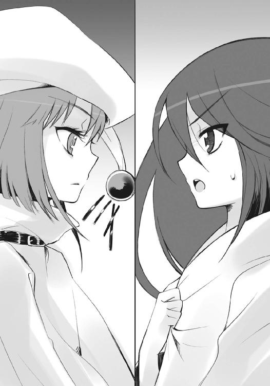
ここだけで、既に博打だった。
ここで駄目なら全て駄目、という最も大きな、丁半の博打。
答えをくれるか、くれないか。
ヘカテーは、
「将軍〝千変〟シュドナイは」
まず答えた。
「おまえを、物事に付き物の遊びの部分だ、と言いました」
どう足掻いても無駄な０パーセントが、奇跡で拾える１パーセントとなったことに、
（よし）
シャナは心中で頷いた。圧倒的優位に立っている者が語り出した以上、語り終えるまでは聞かせるはずである。もちろん、楽に聞かせてもらえるとも思えなかったが。
（活路は、一つしかない）
厳然たる事実として、倒すのは不可能である。
それを前提に、抵抗の算段を練らねばならない。
身に纏っているのが薄布一枚で良かった、と思う。もし、床に落ちているヒラヒラした重そうなドレスを着せられた後だったら、碌に身動きもできないところだった。
それを、早々に実証させられる。
ヘカテーが指差す、
「！」
その先端から、明るい水色の光点が奔った。
反射的に、シャナは飛び退く。
背後、壺を載せた置き台が砕け、燃え上がった。
（これで〝燐子〟たちを壊した）
一度交戦した際に見たことのある力であり、また神経を研ぎ澄まし待ち構えていたこともあって、辛うじてこれをかわせた。が、
「熱っ」
力を封じられた体は、フレイムヘイズならば無視できるダメージにも反応する。置き台と共に飛び散った、火の粉と言うには大きな水色の欠片が、足の端を掠めていた。思わず二歩目を跳んで、さらにもう一跳び。
立っていた場所で、また光点が弾けた。
俄かに明るさの増した部屋、己が瞳と同色の炎を傍らに歩みつつ、
「参謀〝逆理の裁者〟ベルペオルは」
ようやくヘカテーは次の言葉を紡ぐ。
「盟主の甘さも不可解も承知の上で、それらを乗り越えることを自らに課しています」
聞きながら、シャナは広い部屋の壁に背を付けた。その姿勢のまま、広い部屋の反対側にまで入ってきた死との距離を取ってゆく。
壁には、タペストリーに交じえて幾らか武具も飾ってあったが、大半は重すぎて、今の力では使い物にならなかった（部屋に入った当初に、使い勝手は確かめている）。そもそも、刃物の一つ二つ持った程度で〝王〟をどうにかできるわけもない。
ゆえに当然、武器以外を使って対処する。
（なぜ、私を喰らって消さない？ それが一番、簡単なのに......力を封じられただけで、フレイムヘイズであることに変わりはないから？ 封絶を張られても動けるのだろうか？）
移動してゆく間にも、
（それとも......なにか他に、封絶を張らない、あるいは張れない理由でもある？）
思考を高速で巡らせ、
（取るに足りない相手に、虚を突く釣り餌としての会話をするとは思えない）
油断なく気を張って、
（だから、言い分を語り終えるまでは、問答無用に捻り潰しには来ない）
敵の挙動に目を配り、
（語りながら攻撃し続ける間に、勝手に死ぬだろう、と思っている）
巧みに速く足を運ぶ。
それを追うでもなく、ヘカテーは部屋の中ほどに歩み入った。
「しかし、私は、二人と意見を同じくしません」
言って、部屋の壁に背を付けて横這いに逃げる『敵』を、睨み据える。
「おまえは、盟主の大命に不要な存在──否」
声を鋭く切って、指を突き付けた。
殺気の膨張に反応して、シャナは身を投げ出すように避ける。
バン、と水色の光点が壁に炸裂してタペストリーに大穴が開いた。壁を不用意に砕かず、人間を殺せるだけの威力に絞った攻撃である。
立ち上る薄煙の中から、
「ただ害悪を為すだけの、危険な存在」
弾劾の声が投げかけられる。
シャナは、衝撃に痺れる頬を強張らせつつも、倒れ込んだ身を軽業師のように素早く起き上がらせ、走る。すぐまた後ろで炸裂が起こって、前のめりに大きく弾き飛ばされた。
が、
（着いた！）
そここそが、目的地である。
ゴロゴロと転がり、ようやく身を隠したのは、無駄に大きな天蓋付きベッドの陰。
もちろん、こんな物を盾に持ち堪えられるわけがないことは分かり切っている。むしろ、物があることで、ヘカテーに光点の威力を上げさせてしまう危険性すらあった。それでもなお、ここを目指したのは、とある一つの状況に活路を見出していたからだった。
最初の一撃が来る前に、シャナは先制する。
（こいつが最初にやったのは、世話役の〝燐子〟を殺すこと）
ベッドにかかっていたシーツを引っ掴み、
（光の弾も、威力をわざわざ小さく絞っている）
大きく翻すように投げつけた。
（それに今までの言葉......間違いない）
当然、そのなんでもない攻撃は、すぐに光点の命中を受けて焼かれ、散り散りの火の粉となる。水色の火の粉は雨のように、しかし熱く降り注ぎ、各所に火の舌を伸ばしていった。
ベッドの陰に身を隠すシャナは、最後の賭けとして一つの物を握り締める。
（もう一撃だけ、持って！）
次は確実にベッドを破壊する一撃が来る、その予想に違わず、
バガンッ！
と強烈な衝撃が全身を震わせ、次いで爆風が吹き飛ばした。
「ぐうっ!!」
力なきフレイムヘイズは、破砕された木の破片に打たれ、水色の炎に炙られて、なお最後の一手を放る。そうして、グシャグシャに乱され引き攣れた絨毯を僅かなクッションとする石の床へと、強く叩きつけられた。
「が、ふっ!?」
息が詰まり、視界が霞んで揺れる。
その定かならぬ光景の奥から、ヘカテーがゆっくりと近づいてくる。
「危険は──取り除き、消し去ります」
死刑宣告を聞きながら、シャナは途切れ途切れに、確認するように考えていた。
（つま、り......）
互いの間には、あと二十歩の距離もない。ヘカテーが壊れたベッドの残骸を越えるか、その場で光点を放つかすれば、なにもかもが終わる。
（気取られて、騒ぎを、大きくしたくない......独断による、密殺......）
状況に対して打てる手は全て打った、とシャナは判断した。
そしてもちろん今から先を、運に任せて待つほど怠惰でもない。
傷つき倒れてなお、動ける時を待ち、次にできることを考え続けた。
ただ、気に食わないことに、考え続ける頭の片隅に一つ、予感があった。
ヘカテーが遂に指を差し、殺気とともに、とどめとなる光点を放とうとする、
そのとき、
両者の間を、黒い力が一陣、断ち割り、通り過ぎた。
「っ!?」
ヘカテーが驚いて振り仰ぎ、
「......」
予感の的中を知ったシャナが、力なく瞳を向けた先、
尖塔ごと粉砕された天井の遥か上、星天に浮かぶ黒き鏡を背負った姿が、宙に在る。
部屋を裂いた漆黒の竜尾を後頭に振る、〝祭礼の蛇〟坂井悠二だった。
その表情は、悲しむようでもあり、怒っているようにも見える。
シャナの推察通り、大命の害悪となるフレイムヘイズを独断で密殺しようとしていたヘカテーは、思わず顔を逸らした。と、その先で、一つの物が目に留まる。
「！」
それは、外を望めるテラスに転がっている、枕。
彼女の炎の証たる明るすぎる水色に燃え、灯火も疎らな夜の『星黎殿』に一点、煌々と光を放っている、まるで標識のような枕だった。
テラスは、偶然で枕の転がる位置にはない。そもそもヘカテーが自分の侵入経路をそこに選んだのも、可能な限り外に明かりが漏れないよう、相手を奥に追い込むためだった。
でありながら、枕はそこに燃えている。
目撃者を呼び寄せる目印として。
絶望的な状況下、これがシャナにできる最大級の打開策であり、また博打でもあった。
ヘカテーが最初から本気で殺しにかかっていれば、相手は力を封じられたフレイムヘイズ、全ては一瞬で終わっていたはずだったが、実際にはそうならなかった。
所定の目的を冷徹に果たすよりも、持てる激情を吐き出し、相手に聞かせることを、三柱臣の巫女たる自身の在り様として、彼女は優先してしまったのだった。
結果として、その甘さに助けられてシャナの打開策は実り、博打は大当たりを引いた。
炎を見つけ仲裁に入ったのは、最適最良の人物だったのである。
ヘカテーは倒れたままのシャナを、怒りと驚きの視線で刺した。
「おまえ......！」
無力な敵にまんまと出し抜かれたことよりも、己の盟主を自衛の道具として利用されたことに、強烈な憤激を覚える。もはや手加減無用と全力で破壊の光弾をぶつけようとする、
眼前に、
盟主〝祭礼の蛇〟坂井悠二が立っていた。
「あ......」
ヘカテーの表情から憤激が霧散し、動揺が取って代わる。その足取りが、前か後ろか、本来着けようとした向きも分からず、ふらついた。
対する悠二は先と同じ、悲しむような怒るような表情で、首を振る。
「よいのだ」
独断専行を見逃す、という寛容の言葉だった。
「......よくは」
が、ヘカテーは危機感から、常には絶対にない反抗で答える。
「よくは、ありません！ このフレイムヘイズは『炎髪灼眼の討ち手』です!!」
「！」
「審判と断罪を司る、神をも殺す神──『魔神』を喚ぶ災いの化身!!」
彼女の脳裏には、大きな衝撃と痛みが、一つ形として刻印されていた。
四百年前、ブロッケンの山頂に、山鳴りと地響きを撒き散らし立ち上がった、それ。
轟々と渦巻き荒れる紅蓮の奥に漆黒の塊を秘めた、暴威そのものの顕現と見える巨大な姿。
破壊不能なはずの『完全一式』──創造神〝祭礼の蛇〟の御業たる『大命詩篇』を、ただの一握りで砕き去った──破壊神〝天壌の劫火〟アラストール。
その暴威の業が、今傍らにあるフレイムヘイズによって再現されるかもしれない、という切実な恐怖が、神に最も近き眷属たる〝頂の座〟を衝き動かしていたのだった。
「殺すべきです！ 消さねばなりません!!」
絶叫に近い進言、あるいは懇願に、
「ふふ」
しかし悠二は、軽い苦笑で返す。
「随分と嫌われたものだな、〝天壌の劫火〟よ」
「......」
声をかけられた胸元のペンダント〝コキュートス〟は、無言を通した。
「我が巫女よ。忠義の誠は賞そう」
盟主として悠二は言い、揺れる水色の瞳に向き合う。
「だが、『魔神』を侮っているのは、おまえの方だ」
「えっ？」
戸惑う巫女に向けられるのは、揺らぎのない強烈な、黒の視線。
「余が『炎髪灼眼の討ち手』捕縛の選択肢を採ったのは、素体となった〝ミステス〟坂井悠二の恋慕、それのみが理由では、ない」
と、悠二は身を翻し、壁際で蹲るシャナへと歩み寄る。
「現況において最も忌むべき悪手は、主導権が掌の内から零れ、危険が統御の適わぬ遠方に去ることだ。仮に、今ここで『炎髪灼眼』を殺せば、どうなると思う？」
「......」
今度は、ヘカテーが無言。
「最後の力を振り絞って、魔神〝天壌の劫火〟が顕現し、刹那の内に余を討ち滅ぼす、という無謀な賭けに出る、か？」
悠二は〝祭礼の蛇〟としてではなく、坂井悠二として断言する。
「違うな」
胸元にあるペンダントにも聞かせるように、朗々と語り続ける。
「この、自らの使命に至誠忠実なる男は、そのように不確実で破滅的な行動は、決して取らぬのだ。間違いなく〝紅世〟に帰る。帰って、即座に三度の契約に努める」
倒れた姿の陰で次なる対策──巫女が不測の暴走を起こした場合への備えである──を練る不屈の少女にも、同じく聞かせる。
「両界の狭間における遭難の危険など押して、渡り来る。契約を結ぶ者が、例えどんなに器の小さな、『炎髪灼眼』の称号を冠すに相応しからぬ凡骨であろうと、契約する。そして、契約者を得れば必ずや、最悪の機に現れ、かの〝天破壌砕〟に挑む」
だろう、とは言わない。
まるで既定事実の確認だった。
アラストールは、やはり無言を通す。
確かに、考えはしなかったが、どうするかと問われれば間違いなく、指摘された通りの行動を、彼は取るはずだった。存在の本義、在り様が、確実にそうさせる。
悠二は膝を着き、シャナを抱き上げた。変事に備え力を溜めていたはずの少女が、抵抗の挙動を見せず、しかし眼を固く瞑ったままであることに、驚き、微笑んで、話を続ける。
「失敗すれば、また次の契約者を選ぶ。不適格者であればなおのこと、進んで差し向け、万が一の成就に賭ける。そうして失敗すれば、またさらに次の契約者を選ぶ。掌中の鳥を安易に殺した時より、我らは常に、一切を消し去る猛威の影に怯えることとなろう」
言いつつ、ヘカテーに背を向けたまま、シャナに頬を寄せた。その小さな体が緊張に強張るのを無視して、近く近く、声をかける。
「今、『炎髪灼眼』がここに在る好機を、無為にしてはならぬ。大命遂行にとって最大の障害、全てを転覆させる魔神が、余に最も近き契約者と共に在る、好機を」
そうして身を翻し、立ち尽くす巫女ではない、そのすぐ後ろを見やる。
「！」
ヘカテーがようやく気付き振り向いた傍ら、小声で呟くのはシュドナイ。
「こういう結果、か......まあ、いいさ」
「やれ、なんとも酷い手際だね、ヘカテー」
また新たに声をかけ、呆れたのは、悠二の背後に立っていたベルペオル。
二人は、どう転んでも守ると決めている、どう転んでも在るものを使う、という各々の姿勢ゆえに、独断専行したヘカテーを咎め立てたりはしない。彼女に説かれた先の見立てについても、自身謎を秘めた盟主によるものである以上、妥当性を認めつつも無条件な肯定はしない、と語らず密かに、了解し合っている。
それでも悠二は、三柱の眷属らに、『炎髪灼眼』と魔神に向かって、今を笑う。
「この幸いなる運命に、余は歓喜している。なんという収束、なんという同道、なんという試練。まるで求め、許し、備えられていたようではないか......！」
目を閉じたシャナには、その言葉を放っているのが誰なのか、判別がつかなかった。
一時間ほどの後。
シャナは、とある儀式を迎えるために、改めて身を清め、手当てを受け、新たなドレスで着飾って、一つの部屋に通されていた。
どこかの塔の中層階らしい、殺風景な部屋である。
窓は一切なく、太い石柱が石壁の四方を縦に貫いている。入ってきた背後の大扉から正面、幅の広い昇り階段の上まで、皺のない赤い絨毯が真っ直ぐに敷かれていた。絨毯を二列に挟む篝籠には、熱も音もない薄赤い光が点り、一人きりの静寂を彩っている。
いつしか癖になっている、手首の鎖を弄りながら、その場に佇むこと二、三分。
コンコン、
と、背後で小さいノックが二回。
なぜか今さら、シャナはドキリとした。
「入るよ、シャナ」
少年のような声の、盟主が入ってきた。
シャナの振り向いた先に立っているのは、やはり声とは裏腹な、緋色の衣と凱甲を纏い、漆黒の竜尾を後頭に伸ばす、〝祭礼の蛇〟坂井悠二。
彼の後には、誰も続いていない。
部屋には、アラストールを入れて、三人だけ。
どういう仕組みか、悠二が部屋の中央に立つと、大扉が閉まった。
変わらず、その胸に下がる〝コキュートス〟から、声が。
「体に大事はないか」
「うん、大丈夫」
シャナは短く答えて、正面に在る少年と向き合った。
自分でも驚くほど平静に、彼の前に立つことができている。
自分が感じた恐さの正体を知り、全てを理解した上で見つめ、確かめる。
悠二も、ほんの半歩前に立つ少女をじっと見つめた。
自分を恐れた彼女が、素直に向き合ってくれることを喜ぶ。
自分が欲し、求めるものの体現者である少女への愛しさを込めて、言う。
「似合ってるよ」
「......」
今度は、何か言いかけて、黙る。
痛めつけられた身は、先の騒動で燃え尽きたものとは別のドレスを纏っている。過度な装飾は為されず、優美ではあっても派手なデザインではない。手袋に長い袖、丈のある裾など、露出が極力抑えられているのは、体の各所に施された手当ての包帯を隠すためだった。
色合いは、赤と黒。
一房に編んだ腰まである黒髪を、飾り紐とともに下げている様と合わせ、装いの全体は、まるで少年との番であるようにも見えた。
その片方が、もう片方に、ゆるりと手を差し出す。
掴むようにではなく、舞踏へと誘うように。
「シャナ、一緒に来て」
もう片方は、その差し出された手を見つめ、
「どこまで？」
確かめるように鋭く、しかし静かに、訊いていた。
悠二はしばらく考えてから、全く誠実に、答える。
「今は、上まで」
シャナはなおも、差し出された手から目を離さず、
「......うん」
返事なのかどうか、小さく頷いて、手袋を外した。
少女の行為の意味が分からず戸惑う少年、
「？」
「ん」
その手を、未だ擦り傷の残る素手で取る。
抱擁のように優しく包み込むのでも、
頼ろうと弱弱しく縋り付くのでも、
握手として強く握るのでもない。
共に歩くために、違う手で、取っていた。
「シャナ！」
意味を察した悠二は、喜びに面を上げ、同道者の手を引く。
が、奇妙なことにシャナは、その場に僅か、抵抗するように留まった。
数秒、
「......」
握る手を見つめてから、歩き出した。苦悩や躊躇の重さを持たず、しっかり前を見て。
少女の奇妙な態度に不審を抱いた悠二も、すぐに自身の状況へと立ち返り、先導する。
正面、赤絨毯の敷かれた階段を、仮初に願いが叶った姿のように、二人は上っていった。
手を強く握り合い、未だ心は通わせず。
「シャナ、余はこれより遠くを目指し、進む」
悠二の言う意味、重大な宣言について、シャナは自分が参列を求められた『とある儀式』という言葉から、既に察しをつけていた。
「......『久遠の陥穽』？」
「その通り。両界の狭間より、余の本体を取り戻す」
一方で、察しをつけられないこともある。
「創造神の本体が帰還したら、悠二はどうなるの？」
「大丈夫」
並ぶ歩みには、乱れも遅れもない。
まず〝祭礼の蛇〟として、
「この〝ミステス〟坂井悠二の有用性は、宝具『零時迷子』を蔵していることに限らず、特筆すべきものと言える。簡単に脱ぎ捨てるには、いかにも惜しい逸材だ」
次に坂井悠二として、言う。
「あと、そう......念のために言っておくけど、自分を犠牲に世界を変える、なんて気はないから、安心してくれていい。君と一緒に歩いてゆくことが......望みの全てなんだから」
シャナは答え難い気持ちのまま、曖昧に頷きで返した。
そのまま、幾らかの沈黙があり、最後に小さく、悠二は呟く。
「そう── 」
「！」
告げられた言葉の強さに、シャナは目を見張る。
二人の行く先に、開けっ放しの大扉が見えていた。
静かな彼方には、始動の予感を伴う熱い空気が在る。
大きな事変が始まる、という、沸き立つような空気が。
その予感に押されてか、悠二の胸に下がるアラストールが口を開く。
「シャナ、言うまでもないことだが、我も『久遠の陥穽』へと同行する」
「うん。アラストールが帰ってきたとき、情報を生かせるように、私も備える」
フレイムヘイズ『炎髪灼眼の討ち手』シャナは、迷いなく返した。
悠二は、自分の胸元と隣で交わされる反乱の約束に、思わず苦笑する。苦笑して、しかし手は離さず取り合ったまま、短すぎる道行きを終え、階段を上り切った。
冷たい夜風が吹き込み、二人の髪を大きくさらう。
歩み出た先は、高所に設けられた、広い半円形のテラス。
ほど近き空には、満天の星空を塞いで、黒き鏡面を銀に縁取る『神門』が浮かんでいる。
その影落ちるテラスの中ほどに、三つの姿が並んで待っていた。
剛槍『神鉄如意』を担ぐ〝千変〟シュドナイ、
錫杖『トライゴン』を携える〝頂の座〟ヘカテー、
拘鎖『タルタロス』を飾る〝逆理の裁者〟ベルペオル、
創造神〝祭礼の蛇〟を護り輔く眷属たる『三柱臣』である。
盟主を迎え、進む道を開ける彼らの許へと、悠二は歩いてゆく。
今は、ただ歩かされているだけの少女を伴って。
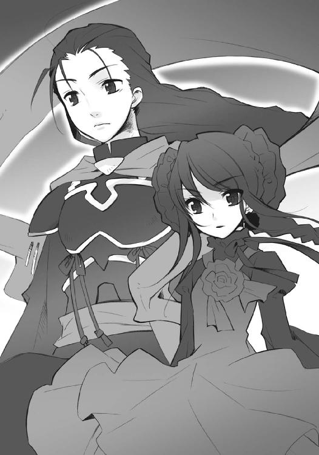
ベルペオルが、未だ表情にややの険を残すヘカテーの胸を軽く叩いてから、進み出た。盟主の正面、シャナからはややずれた位置で、優雅に一礼する。
「一同、御諚の賜る時を待ち詫びております」
「よし」
先までの少年は鳴りを潜め、声には盟主が強く表れた。
階段の時と同じくシャナの手を引いて、半円形のテラスの先、謁見のために設けられたものらしい、細く短く張り出した突端部へと、進み出る。
歩みと共に広がってゆく眼下、要塞の全景に、『炎髪灼眼の討ち手』は息を呑んだ。
（──っ!!）
戦歴の浅いシャナは元より、
（なんという、数だ......！）
古の『大戦』に加わったアラストールでさえ、〝紅世の徒〟がこれほどの規模で集っている事例に、出会ったことはなかった。
夜の光と闇の底、威力を秘め、身構えているのは、大軍勢。
立ち並ぶ尖塔の窓や屋根、要塞の郭や城壁の上、岩塊部の縁まで、目の届く限りに、目の届かぬ場所も、〝紅世の徒〟で埋め尽くされている。異形人型、大小強弱も様々な〝徒〟らが、しんと静まり返って、今は熱気を隠して、彼らの盟主を見上げていた。
一身に視線を集める〝祭礼の蛇〟坂井悠二は、大きく息を一吸い、
「心に、予感は在るか？」
彼の兵らに向かって傲然と、燃え立つ喜悦を込めて、声を投げかける。
「身に、戦きは在るか？」
声は渡り、どよめきとも唸りとも付かない、鈍い響きが上がってゆく。
「それが、余と進む者の証だ」
三柱臣は突端部の背後、横一列に居並び、盟主を守る立ち位置を取る。
「余は、これより自身、大命の第二段階を敢行する。即ち頭上、創造せし『神門』を抜け、『久遠の陥穽』の彼方で待つ、もう一つの余......創造神〝祭礼の蛇〟の神体を帰還させる!!」
鈍い響きが遂に一部、緊張を破って声となり、興奮を露わにしてゆく。
「余はこれに、最低限ながら大きな数名を伴う。即ち、余の眷属たる三柱臣、同じく〝探耽求究〟、また警護として〝壊刃〟......よって、残される汝らに命ず」
と、一部に上がっていた嫉妬ややっかみを含んだ声が、拝命のために、消える。
「余の帰還の時まで、この『星黎殿』を守り抜け！ そのために、研ぎ澄ませた剣を振るえ、牙を爪を剥き出して咆えよ、熱く滾る炎を燃やせ、知勇を振り絞り駆けよ!! 存在だ、存在し顕現する身の証に、全てを奮い起こせ！ 戦え！ 戦え!!」
圧倒され静まる全軍に、息を吸い、次なる行為へと備える気配が漲る。
「さすれば、大命の最終段階、世界の変革へと、余の手は届く──今度、こそ!!」
片方の手でシャナと手繋ぐ悠二は、もう片方を野望のまま突き上げた。
一拍、
空気の爆ぜるような歓呼の声が沸き上がる。
「 ──創造神〝祭礼の蛇〟万歳──!! 」
その、ただ一言を合わせて。
後はもう、言葉にならない。軒昂の意気を咆哮に変え、心中の狂熱を轟音にして、［仮装舞踏会］の〝紅世の徒〟たちは、どこまでも叫び続ける。
耳に痛いほどの叫喚の中、ベルペオルは傍ら、いつの間にか現れていた直方体──事情あって姿を現すわけには行かないフェコルーである──に、軽く手を上げた。
「我らの出立後のこと、頼むよ」
「はっ、『秘匿の聖室』を広げ、『神門』を内部に隔離・隠蔽いたします」
直方体の上に挿された松明、『星黎殿』の中枢に作用する宝具『トリヴィア』の炎が、予備動作のように小さな揺らめきを見せた。
「空中の静止物を飲み込むことで『星黎殿』は移動能力を失いますが、代わりに世の異物たる『神門』も、その違和感を隠しおおせましょう。プルソンらもおります、後事はお任せを」
ベルペオルは笑って、謹直な腹心に頷く。
と、その背後の床に、銀色の砂粒が渦を巻き、競りあがる演台のように二人、現れた。
「んんー？ 随ぃー分と騒がしいでぇーすねえぇー？」
「観測分析班、出発準備完了しましたんでございますです！」
怪しげな機器類を山ほど背負った教授とドミノである。
「おじ様」
ヘカテーが歩み寄り、促すように頭上の『神門』を見上げる。
「不測の事態への対処、くれぐれも宜しくお願いします」
「んーっふふふ！ ルゥーックヒア！」
教授は笑って上半身だけを一回転、背中の機器を見せ付けてから、解説を始めた。
「心配はナァーッシンです！ 起ぉーこり得る異変も全てっ！ こぉーの『我学の結晶ェエークセレント２５２５４６─論誼のぉー笈』により『大命詩篇』との照ぉー合を行いっ！ 即時即座に対っ処可能!! こぉーれさえあれば警護など不要無用のロォーンググッバイ！」
自身、眷属において警護の役割を負うシュドナイが、肩を竦めて隣に言う。
「だ、そうだが？」
当たり前のように、密かに出現していたサブラクは、ふん、と鼻で笑い、
「我が依頼主は三眼の女怪であり、また盟主でもある。その両者が此度の行路を辿るにあたり警護は必要と判断したのだ、あのような不審の塊などに、とやかく言われる筋合いはない」
ブツブツと返事なのかどうか分からない呟きを延々、口の端から零した。
「心は躍り彼方まで、旅立つ羽を今広ぐ......」
どういうわけか、楽師ロフォカレも、その傍らでリュートを奏で歌っている。
それら、旅立つ者らの間を、悠二はシャナを連れ、歩いていった。彼らから数歩、距離を取ってから立ち止まり、シャナだけさらに数歩、進むよう手を引いて、離す。
先のように、動作への抵抗を見せるかと思われた手は、あっさりと離れた。
「......」
「？」
少女がなにを考えているのか量りかねるまま、少年は反対に数歩、〝紅世の徒〟の側へと歩いてゆく。彼らの中心に立って竜尾と衣を翻し、同じく振り返った少女と向き合った。残してゆく少女に、旅立つ少年として、一旦の別れを告げる。
「いってくるよ、シャナ」
「......」
闇の底、咆哮を轟かす〝徒〟の軍勢を敷いた、
周囲、世界を掻き乱す〝王〟らを率し従える、
少年の形をした創造神は、誇るように両手を広げ、神勅を一帯に響き渡らせる。
「今を変える、という余の意志を──あまねく世に、示して、見せよう」
その身が、ゆっくりと浮き上がった。
フェコルーを除く、三柱臣、教授とドミノ、サブラク、ロフォカレも、僅か遅れて後を追う。
旅立ちを知った軍勢は、あらん限りの歓声を上げてこれを送り、送られる者らも、声を帆に受けて発つように、鋭く大きく、舞い上がっていった。
シャナは、舞い上がる少年と......あくまで少年と、見つめ合う。
大扉をくぐる前に、彼のかけた言葉が、その瞳と瞳の間に通っていた。
（──「そう──自分が何者でも関係ない。やることを、やる」──）
彼と取り合った手を、シャナは強く握り締める。
そこにあるものを確かめるように、握り締める。
（私の自在法には、まだ力がない）
無力感を、全く別の次元で感じて、握り締める。
自身、不確かなものを探すように、握り締める。
最後の一人が黒い『神門』の内に消えるまで、強く、強く、握り締め続けた。
４ 戦いへ
夜も未だ明けない早朝の東京。
人通りもない都心の大通り沿いを、一人の女性が大股に闊歩している。
正確には、一人の少年と並んで歩く一人の女性（より正確には、さらに一名が存在する）なのだが、漲る貫禄と周囲への押し出しの強さが、それを感じさせない。少年の方は良く言ってお付き、率直に評するならオマケ程度にしか見えなかった。
女性は、ショートの髪がよく似合う細身の美人だったが、少々過ぎた眼光と、口元にある悪戯っぽい笑みのせいで、無駄なくらいにドスが利いてしまっている。だらしなく裾をはみ出させたシャツと半端な長さのホットパンツ、分厚い革のジャケット、大きな長靴、という妙にチグハグな出で立ちも、只者ではない印象を助長していた。
その女性、『輝爍の撒き手』レベッカ・リードに、オマケの少年こと佐藤啓作が、躊躇いがちに問いかける。
「あの、本当に良かったんですか？」
「なにが？」
レベッカは本気で思い当たらないように問い返した。ジロリ、とねめつけるように見えるのは、単に目つきが悪いだけで、悪意の発露や威圧感を与えようとしてのことではない。少なくとも、そうらしい、と佐藤は判断していた。
と、彼女の右手首に揺れる金色のブレスレットが、のんびりとした男性の声を放る。
「たぶん、支部の爆破のことじゃあないかな」
この、閉じた目を意匠したブレスレットは『クルワッハ』。レベッカと契約し、彼女に異能の力を与える〝紅世の王〟、〝糜砕の裂眥〟バラルの意思を表出させる神器である。
言われて、ようやく契約者は思い当たる。
「ああ。ま、構わんだろ。たぶん怪我人は出てない」
（たぶん、って）
佐藤は早朝の寒風のせいではない冷や汗をかいた。
目の前で、信号が赤に変わる。
軟禁を恐ろしく乱暴に解かれた佐藤が、そのまま医務室へと運び込まれ、手当てを受けたのは、昨日の昼下がり。
その際、担当部署の人間から、ようやく御崎市で起こった出来事の全て、誰が何を行い、誰がどうなったのかについて、詳細な説明を受けたのだった。
初めて出会う『外界宿の構成員』を前にして、感慨に浸るどころか、
「ッマージョリーさ──」
「寝てろ」
立ち上がって駆け出しかけた彼を、レベッカがぶん殴って昏倒させた。
次に佐藤が目覚めたのは、窓からの夕日で部屋が赤く染まる頃である。
見回すと、レベッカはいなくなっていた。程なく様子を身に来た構成員に尋ねたところ、彼女と、あの男性のフレイムヘイズ──『骸躯の換え手』アーネスト・フリーダーというらしい──を始めとする東京外界宿総本部の面々との会議が紛糾している、とのことだった。
会議が終わるまでは、医務室で大人しくしているように、との指示も受けたが、
（マージョリーさんが昏睡状態だってのに、悠長な真似してられるか!!）
そう思うと、居ても立ってもいられなくなるのは、彼としては当然の心境である。
とはいえ、状況としては、先刻までの軟禁とほとんど変わりがない。
違っていたのは、軟禁された場所と、結局は外からの働きかけがなければ一身の自由すら得られない、無力な自分への怒りに燃え立っていたこと、それだけ。
この二度目の軟禁は、彼に自身の置かれた立場と持てる力を再認識させ、胸の底から突き上げる行動への焦りと鬩ぎ合わせる機会を与えた。
できないこと、やりたいこと、やれること、それらの狭間を彷徨い続ける自分について、人間・佐藤啓作は、ベッドに座り込んだまま、まんじりともせず、いつまでも考え続けた。
時も忘れて過ごし、なにをどう辿ったのか、
（俺が行かなきゃ駄目だ）
そんな決意を紡ぎだしていた彼の耳、というより肌に、
ズン、
と遠くか近くか、鈍い響きが伝わった。
二度目という慣れから、咄嗟にベッドから転げ落ち、隠れた瞬間、
「っわぁ!?」
天井が、蛍光灯とは別の光の中を溢れさせ、砕け散った。
ベッドの陰、頭の上で手を組んで伏せる彼の襟首を、
「よ、待たせたな」
言いつつ引っ掴み、猫のように持ち上げたのは、レベッカである。
「ちょっと納得させんのに手間取っちまってさ」
そんな彼女の頭上、幾つか階を隔てた白煙の彼方から、
「ま、待て、レベッカ・リード！ 対［革正団］戦争や『内乱』以上の戦いなんだぞ!? 君は、その重要な──」
「駄目よフリーダー君！ 分かってるでしょ、レベッカちゃんの宣告は、絶対に脅し文句じゃないんだから!!」
などと降ってきていたのは、聞き覚えのある声と声。
レベッカはそ知らぬ顔で、
「ほれ、行くぞ」
佐藤を、運び込まれていた彼の荷物の脇に投げうった。
「行く、って......ゴホッ、どういう、ことです？」
首を絞められたこと、部屋に立ち込める粉塵、双方の理由から咳き込みつつ尋ねる少年に、レベッカは顔を近づけ、にやりと笑った。
「もうなんか色々面倒だから、友達の方に力貸すことにしたんだよ。おまえも、ついでにミサキ市......だっけか？ そこに帰してやる」
その顔が、また作動したスプリンクラーに濡れて、不機嫌になった。
そういうわけで、佐藤は今、いつの間にか夜明け前となっていた東京を、駅に向かって歩いている。こんな時間でも、道路には車がそれなりの量、走っていた。
「おまえにゃ感謝してるぜ、佐の字」
レベッカは妙な略称で彼を呼び、ニヤリと笑いかける。
「ミサキ市で贄殿のが攫われたり、ヴィルヘルミナが助太刀を欲しがってたり、色々分かっても、即座に駆けつけるにゃ、オレも立場が高かったり重かったりしたんでな」
彼女は、ヴィルヘルミナやマージョリーとは数百年来の知己であり、御崎市に来る前のシャナとも一度、戦いを共にした間柄だという（渾名は、当時の自称に拠るものらしい）。
「おまえの解放を火種に、本部の連中と決裂させてもらった」
「そうした方がスッキリ行動できる、と助言したのは、僕なんだがねえ」
「分かってるって、感謝してるしてる！ 説明の手間省いただけだろ？」
ブレスレットにも言って、掌をヒラヒラと振る。
佐藤は、他人の行為に左右された自身の結果を苦々しく思いつつ、喜びも感じた。
「俺が来たことで、少しは皆の助けになれた、ってことですね......でも」
「なんだ、含みの多い奴だな。とっとと言えよ」
「は、はい」
ストレートすぎるフレイムヘイズに、真面目に答える。
「フリーダーさん、言ってたじゃないですか。大きな戦いがありそうだ、って。俺を使ってカルメルさんを呼び出そうとしてたのも、その戦いに参加させるためなんでしょう？」
「でしょう、で、なんだ？」
「いえ、だから」
いま一つ、話が通じ難い。頭脳明晰のメガネマンや、かつては参謀役だった冷静沈着な少年と違って、筋道立てた説明が下手であることを自省しつつ、己の意見を述べる。
「これから大きな戦いがあるのに、俺たちの方に力を貸してもらって、いいんですか？」
「じゃ、帰ってもいいのか？」
「あっ、そうじゃなくて!?」
慌てる少年を、レベッカは大いに笑い飛ばした。
「なっははは！ ホント回りくどい奴だな、おまえは」
見ていられなくなったのか、バラルが助言する。
「佐藤君、レベッカには、遠回しな気遣いは要らない......いや、通じないよ。思っていることを素直にぶつけた方が、たぶん話も早く済むと思うなあ」
佐藤は感謝に頭を下げ、
「はあ、どうも、バラルさん」
「そこは『はい』だろ」
「はい」
レベッカの指摘に従う。まったく自分の未熟さ至らなさばかりが身に染みる旅だ、と帰途に着いてから痛感する少年だった。
「つーか、周りが皆、ややこしいこと考えすぎなんだよ」
と、未熟でないはずのフレイムヘイズが言う。
「おまえは自分の女に会いたい、オレは友達を助けたい、だから行く。それだけのことだろ？ 他の連中を引っ張ってくんならともかく、一人の行動に文句を言われる筋合いはないさ」
「......」
いえ、そんな、女なんかじゃありません──と言い繕うことに意味はない。
そう佐藤は思い、彼女の言葉を素直に、助力をありがたく、受け取ることにした。ただ、そのありがたさの裏返しである後ろめたさから、来た道を振り返る。
夜明け前の暗い空に聳えているビルは、上層階の明かりが消えたままだった。
「でも、他の人たちから、すごく当てにされてたみたいですね。少し悪い気も......」
「なに、構やしない」
レベッカは、また掌をヒラヒラと振る。
「オレは、他人を使って戦うのも、大勢に混じって戦うのも、元々向いてないんだ。以前に部隊長なんてもんを引き受けたのも、ピエトロの大馬鹿野郎に頼まれたからだしな」
その声に僅か、初めて聞く寂しさが過ぎる。
怪訝な顔をする佐藤に、レベッカは目をくれず、顎で前を指した。
「ほれ、着いた」
いつの間にか駅の前。始発が出たばかり、という時刻ゆえに人気はない。深い堀か川の脇、道路より一段低く線路が作ってある駅は、入り口から電車が見えず、早朝の冷気に車輪と線路の上げる金切り声だけが響いていた。
「おまえはさっさと、マージョリーのところに帰ってやれ」
「えっ、一緒に来てもらえるんじゃ」
驚く佐藤に、レベッカは鋭い眼光を、ズイと近付ける。
「佐の字よお。おまえは女の前に、別の女に手ぇ引いてもらって帰るつもりか？」
「はっ？ いえ、その......」
「なっははは！ 冗談だよ、冗談！」
いいように翻弄される少年を、数百からの年長者がカラカラと笑い飛ばした。
「ヴィルヘルミナとは、とっくに連絡済みだ。奪還作戦とやらを決行する場所で合流、って示し合わせたのさ。それに、弱って男に凭れかかるマージョリーを見に行くよりは、捕まって歯軋りしてる贄殿のをからかいに行く方が、幾らか笑えるだろ」
「......」
隠された真情を、佐藤はハッキリと感じ取る。
電車の耳障りな走行音が、二人の間を駆け抜けた。
それを別れの機と、レベッカは、どこからか取り出した大きな封筒を放って寄越す。
「ほらよ、餞別だ」
「これは？ ──あっ」
傾けた中から、没収された彼の携帯電話や栞と一緒に、束になった書類が出てきた。
「そいつは、ヴィルヘルミナの報告を外界宿側で纏めた書類の日本語版だ。自分の体験したこと、自分の居た場所が、他人にはどう受け取られてんのか、考えながら読みな」
契約者に続いて、バラルも言う。
「それと、もうすぐ動き出す戦争の、作戦計画書も入っている。外界宿に行った戦利品、というやつだね。これから君らが取る行動の、参考にしてくれればいい」
ジンと来た佐藤は、この心尽くしに応える意味でも、強く笑って見せた。
「やっぱり、人を使って戦うの、向いてるんじゃないですか？」
小さな一撃をレベッカは鼻で笑い飛ばし、再び顎で駅を指す。
「さ、行きな」
「はい！」
踏み出しかけた佐藤は、未熟さと至らなさへの自覚から、大事なことを思い出すことができた。立ち止まって、大きく勢い良く、頭を下げる。
「レベッカ・リードさん、バラルさん、俺をマージョリーさんの所に帰してくれて、カルメルさんに力を貸してくれて、どうもありがとうございます!!」
二人で一人の『輝爍の撒き手』は、気持ちよく笑って返した。
「おう、お安い御用だ」
「因果の交差路で、また会おう、佐藤啓作君」
遠く欧州はスイスのチューリヒ。
夜のチューリヒ湖を眼下、眺望絶佳に広げる丘陵に構えられた、古風な大邸宅の奥の奥。地下深くに設えられた、最新鋭の機器を揃えた大会議室で、
「なるほど、話は分かりました」
フレイムヘイズ陣営の総司令官として推戴されている『震威の結い手』ゾフィー・サバリッシュは、深く深く、溜め息を吐いた。
「つまり、あの利かん坊は、東京総本部を放り出してヴィルヘルミナの許に行った、と」
《はっ、申し訳ありません。我ながら、小細工が過ぎました》
分厚いガラス張りの大卓上、据え置きスピーカー式の通話機から、フリーダーが言葉少なに沈痛の声を送ってくる。
《ゾフィーちゃん、怒らないで！ フリーダー君も兵団のために良かれと思って、ヴィルヘルミナちゃんを呼ぼうとしたのよ。それに、レベッカちゃんに『通さなきゃ、外で騒ぎになる威力でぶっ飛ばす』なんて宣告されたら、通さないわけには行かないでしょ!?》
同じくブリギッドが、必死に契約者の弁明に努めた。
答えて、ゾフィーの額にある刺繍の青い星が、苦笑の声を返す。
「落ち着きたまえ、〝応化の伎芸〟。誰も彼の落ち度と責めているわけではない」
彼は〝払の雷剣〟タケミカヅチ。ゾフィーと契約し異能の力を与え、神器『ドンナー』に意思を表出させている〝紅世の王〟である。
「小細工は確かに誉められたものではないが、君らで御し得ないのであれば、余人にはなおさら無理でしょう。それより、他の討ち手らにレベッカの同調者は出たのですかな？」
《いえ、おりません》
とフリーダー。
またすぐ、過保護な〝王〟が割って入る。
《フリーダー君が頑張って引きとめたの！ 東京総本部が東部方面の最終防衛線だってこと、ずっと言い聞かせてたから、誰からも文句は出てないわ！》
《ブリギッド、いいよ。レベッカ・リードも、そのあたりの線引きのできない女ではありません。自分も別の場所で戦うだけ、そっちも持ち場から離れるな、と言い置いていきました》
明確なフリーダーの報告に、ゾフィーは総司令官として頷いた。
「結構、内部の統制に乱れがないのなら、殊更に咎め立てすることもありません。それに、こちらの台所事情が悪いとはいえ、ヴィルヘルミナへは碌に援助も送れませんでしたから......」
「なんとも不甲斐ない話ではありますが、一騎当千の猛者を二人。この辺りが落としどころ、ということですかな」
タケミカヅチに気弱に笑いかけて一転、強く指示を下す。
「フリーダー、東京総本部の指揮は、あなたが引き継いでください。作戦計画に変更はありません。もし尋ねてきた少年やレベッカ、ヴィルヘルミナに追跡、ないし監視を付けていたら、最低限を御崎市の警護に当て、残りは引き上げさせるように」
一秒、図星から立ち直る間を置いてから、返答が。
《はっ、了解しました。詳細は追って書面で》
《ゾゾ、ゾフィーちゃん、私たち頑張るからっ！》
動転するブリギッドの声が、中途で切れた。
ゾフィーはクスリと笑って、通話機のスイッチを切る。
その正面、五メートルはあろうかという長細い大卓の末座からも、同じく失笑が漏れた。
「ふふ、暴れ馬め......貴女ほどの女傑が統帥していても、さすがに規模が全世界となれば、綻びも幾らかは出てしまうのだな」
腕組みして座っているのは、背筋を伸ばした壮年の男。
空調の効いた室内にいながら、硬そうな立て襟のオーバーコートを着込み、両手にも革の手袋を嵌めている。将校が被るような無印の帽子を目深にしているため、肌が露出しているのは顔の下半分のみ。その顔の左半分にも酷い傷が縦に走っていて、鍔の下に光る目は右の片方にしかない。
と、大卓に置かれた親指大の銀杯が、しわがれ声で諭す。
「デマンティウス、総司令官に対し、無礼であろう」
「そうか、そうだな」
確認するように銀杯を見て、男は組んでいた腕を解いた。
「友誼が長いと、聊かけじめも付け難いな。お許しあれ、総司令官」
ゾフィーはあまりの堅苦しさに呆れかえる。
「もう、よして頂戴、二人とも」
「その通り。到着早々、みっともないところを見せしてしまったこちらこそ、赤面の至りというもの。敬重はありがたき心遣いですが、過ぎた礼は意思の円滑な疎通を妨げますぞ？」
タケミカヅチも、数年ぶりに会う旧友らに忠告した。
通じたのか通じなかったのか、
「そうか」
「そのようだ」
男は、再び銀杯と声を交わして立ち上がった。帽子を取って脇に挟み、白髪混じりの髪を晒すと、折り目正しく挨拶を始める。
「先の連絡で中断してしまったが、改めて宜しくお願いする。我らが肝っ玉母さん、『震威の結い手』ゾフィー・サバリッシュ総司令官、〝払の雷剣〟タケミカヅチ氏」
「我ら『犀渠の護り手』ザムエル・デマンティウス、および〝吾鱗の泰盾〟ジルニトラ、非才の身をフレイムヘイズ兵団にお預けする」
ゾフィーは困った笑いを混ぜて溜め息一つ、これ以上二人の態度に言及するのを止めた。代わりに歓迎の言葉を贈る。
「ようこそ、孤児。貴方が来てくれて、本当に良かった」
孤児。
その異名は、かつて人間だった彼、ザムエル・デマンティウスが、傭兵として属していた集団から取られたものである。契約前から戦争に明け暮れて壮年を迎えた彼は、討ち手となってからの〝紅世の徒〟との戦いをも、広く高い視点で見つめる変人として有名だった。
欧州という激戦地で、大小の集団を率いて挙げた功も多く、史上最大だった戦い『大戦』においては、空前の規模で軍勢を組んだフレイムヘイズ兵団の組織編制や人員結集、物資調達等の方面で大いに実績を上げている（事情あって、当人は戦場に出ていない）、以降の集団戦でも度々、個人の武勇を恃みがちな討ち手らを集め、督励し、纏め上げてきた、見えざる歴史の立役者とでも言うべき男だった。
その揺るがぬ兵が、微かに首を振る。
「なに、別件の対処に当たっていたとはいえ、通信交通ともに発達した現代、本来ならば要請に即応して然るべきところ。自らの遅参によって有能な戦友らを多数失う、対［革正団］戦争の二の轍を踏むことだけは、なんとしても避けたかった」
言って、自省を姿勢に示すように帽子を被りなおした。
銀杯からジルニトラも続ける。
「足りぬと失望されぬよう、精一杯務めさせて頂く」
無骨な彼らが、かつての戦いで補佐役たちを失ってしまった自分を気遣ってくれていることに、ゾフィーは切ない嬉しさを覚えた。互いへの作法として面には出さず、強く返す。
「ええ、大いに頼りにさせてもらいますよ。決して負けてはいけない戦いばかり強いることには、少し気が咎めますけれど」
そうして手を差し出し、言わなければいつまでも立っていそうな二人に、着席を促した。その座るのを待ってから、説明を始める。
「既に大よその戦況については聞かれているでしょう。敵はよりにもよって、あの［仮装舞踏会］です。先の貴方の言葉どおり、世界規模......少なくともユーラシア大陸の各地を舞台とした大きな戦いが、既に起きています。これを、見てもらえますか」
大卓の下に据えられた機器を操作し、壁の大画面に世界地図を映し出した。
ザムエルは一つきりの目を細めて、自分の向かう戦場の概観を見やる。
全体は、東の端を日本に、西の端をアメリカにした形式。
その中に、日本から台湾、フィリピン、ボルネオまで北東から南西に走るライン、
欧州側、ポーランドからルーマニア、ギリシャ、エジプトまで南北に走るライン、
二つの主要な防衛線が、青色の表示で引かれていた。
タケミカヅチが苦悩の声で申告する。
「恥ずかしながら、この二つの防衛線も相当に甘く見積もってのもの。欧州方面は先年より中核となる外界宿の大半を失陥しており、アジア方面も年頭における上海総本部の陥落で、戦力の大半が潰えております」
そこに旧知も多いはずのザムエルは、硬い表情を変えなかった。
タケミカヅチは続ける。
「表示してある二つの主要なラインは、実際に敵と交戦し保持しているわけではなく、これ以上の侵攻のないよう守りを固めている、いわば警戒線でしかありません」
ラインの内側、中東からアジア一帯が、赤く染まった。
その絶望的な広さを見渡してから、ザムエルとジルニトラは言う。
「僅か半年の戦果とは思えん手際の良さだ。［仮装舞踏会］の総力......つまり〝逆理の裁者〟による周到な準備のみならず〝千変〟までもが、練達無類の将帥たる勢威を振るっている、ということか」
「三眼の女怪は、この世界的な大攻勢をいつの日か決行するために、己が組織の自発的な大規模戦闘を封じ、力を蓄えてきたのだな。彼奴らが数千年の眠りから覚めたことも、その理由も、改めて説明を受けねば想像もつかぬことだ」
「創造神〝祭礼の蛇〟......」
久しくフレイムヘイズの間でも忘れられていた名を、ゾフィーは口にした。
「ヴィルヘルミナの報告によると、彼は代行体なるモノを仕立て上げ活動を再開した、とのことです。その狙いは、考えるまでもないでしょう」
ザムエルは即答する。
「古の討ち手らが辛うじて食い止めたという『大縛鎖』での企み、か」
「如何にも」
苦悩の響きをタケミカヅチは強める。
「早くも本日、その予兆と思われる、極度に大きな世界の歪みが、東西の防衛線上にて感知されました。情勢は既に、危急存亡の時を迎えている、と言って良いでしょう」
「上海の陥落もあって、なんとか外界宿の全権は掌握しましたが、未だ組織の体制は『クーベリックのオーケストラ』や『モンテヴェルディのコーロ』喪失による混乱から、完全に脱し切れていません。そんな状況で、我々は決戦に及ばざるを得ないようです」
ゾフィーは言うと、事態の深刻さを表すように大卓に両肘を突き、祈るように掌を鼻先で組んだ。互いの間に数秒、重い沈黙が降りる。
が、ジルニトラは、
「決戦に、及ぶ」
悲観的な説明の中に、打開策の端を見つけていた。
「と言うからには、何処かに用意してあるのですな、そのための予備兵力が」
「ええ、あります」
ゾフィーは組んだ両掌の奥から断言する。
「既に指示は出して、命令一下、兵団を侵攻の始点に集結させる手筈となっています。もちろん、私たちも、員数に入っていますよ」
当人に了解を取っていない決定事項にも、ザムエルは動じない。ここに来た以上、当然のことと思っていた。ゆえに尋ねるのは、実際の行動についてである。
「始点は何処に？」
タケミカヅチが無念さを声に示す。
「遺憾ながら協議中です。実は、敵の策源地については、ヴィルヘルミナ・カルメルの齎した一連の情報からの推測として、ある程度の範囲に絞り込めてはいます。が、しかし......前提とする敵性地域が中東からアジア一帯であるため、そのある程度自体が広大でしてな」
ザムエルは壁面の地図を、もう一度見上げた。
「といって、尋常一様な攻勢で地歩を固めつつ進み、その捜索を続けるような長期戦は、よからぬ企みを進めているだろう［仮装舞踏会］を利するだけ、か。すると、我らが採るべき作戦方針は必然的に──」
契約者の後を、ジルニトラが継ぐ。
「迅速に敵防衛線を突破し、策源地......おそらくは移動要塞『星黎殿』を捕捉、陥落せしめる、これしかない。必要なのは、正確な位置情報と、事前の陽動、あたりになる、か」
何十と検討し直しても、変わらず高く分厚い現実の障壁に、タケミカヅチは唸った。
「ふうむ、大事を企んでいるのであれば、隠蔽も容易くはないはず。捕捉も決して不可能ではありますまいが......名うての策士と勇将が率い、錚々たる顔ぶれの将帥らを揃え、桁違いな規模の兵員を抱え、移動可能な策源地に籠る大組織が相手、まさしく至難の業ですな」
それでも、ゾフィーは断固と言い切る。
「やらねばなりません」
衆に推戴された外界宿の総司令官として、〝徒〟討滅の使命を持つフレイムヘイズとして、なにより、この世に暮らす人間として、やらねばならない。
「幸い、今は昔と違って、ドレルの遺してくれた組織と、人間の構成員の皆さんが、後方支援をほぼ受け持ってくれます。当面、私たちは戦闘要員の結集に努めるとしましょう。孤児、貴方たちにやってもらいたいのは、現在までに得られた要員の適切な編制です」
言う間に、壁面の地図が顔写真付きの名簿に変わった。
タケミカヅチが話を振り出しに戻す。
「そうなると、いよいよもってレベッカ・リードの計画外な離脱は痛いですな。ヴィルヘルミナ・カルメルの提唱する奪還作戦なるものが、我々を間接的にでも利するものとなるよう祈るしかありませんか、ゾフィー・サバリッシュ君」
「祈るよりも、そうなったとき彼女に顔向けができるよう、やれることを全てやっておいた方が気分もよいでしょうね、タケミカヅチ氏」
と、ザムエルが気付いたように顔を向けた。
「人員といえば、サーレ・ハビヒツブルグとキアラ・トスカナは何処に？」
別件にかかり切りで手を離せなかった自分たちの代わりに送っておいた、取って置きの強力な討ち手二人について、ジルニトラも尋ねる。
「先の主要メンバーの会合にもいなかったようですが。たしか一週間ほど前、我々に先んじてドレル・パーティ残存の面々を取り纏めに向かわせたはず」
「え、ええ、来ましたよ？ 今頃は、地中海のあたりと、思いますが......」
「地中海？」
言いにくそうに口ごもるゾフィーに代わって、タケミカヅチが答える。
「それが、ですな。こっちにいる間に、また喧嘩してサーレが逃げた、と......キアラは例によって連れ戻すために出て行ったのです。たしか喧嘩の理由は不精髭を剃る剃らな──」
と、その声を耳障りな音、会議室外部からの呼び出しブザーが中途で切らせる。
ゾフィーは（より憮然となった『犀渠の護り手』二人を置いて）通話ボタンを押した。
「なにか、フランソワ？」
《たた、大変、です！ 総司令官!!》
《凶事じゃないわよ》
スピーカーから、慌てふためく青年と突っ込む冷静な女性の声が、次いでスライドした自動扉からこけつまろびつ当人たちが、飛び込んでくる。
だらしなく伸ばした髪を前に回して目元を隠し、細長い体躯に探検家のようなサファリルックを纏い、腰に膨らんだポーチを幾つもぶら下げ、とどめに大きな壺──彼と契約し、異能の力を与える〝紅世の王〟、〝布置の霊泉〟グローガッハの神器〝スプレット〟──を背負うという、奇抜を絵に描いたような青年である。
名は『姿影の派し手』フランソワ・オーリック。ゾフィーとは大戦以来の付き合いで、現在は兵団での副官を務めていた。
その彼が、泡があれば泡を食いかねないほどに口をパクパクと開け閉めしている。
「だ、だ、だ──」
「あまりの衝撃で口が回らないのよ」
グローガッハが他人事のように解説した。
息を大きく飲み込んで、ようやくフランソワは報告する。
「だ、『大地の四神』のお一人が参られました!!」
ゾフィーだけでなく、ザムエルまでもが目を見開いて、驚きを示した。
実務一辺倒の性ゆえに、自ら会議室へと直行したザムエルと違い、貴賓を迎えるための応接室に、その人物は通されていた。急ぎ来室したゾフィーを出迎えるため、ゆっくりとソファから立ち上がる。
「こんにちは、天空の槌、静かな稲妻」
街角で顔見知りと出会ったように言って、穏やかな微笑みを見せたのは、小ざっぱりした旅装に身を包んだ、初老の男。
彫りの深い顔に大きな鼻、収まりの悪い漆黒の髪、短躯ながら分厚い胸と怒り肩、立ち姿を見るだけで分かる堅固な足腰、それら全てが、尋常ならざる厳かさを漂わせていた。
腰のベルトに下がる、角ばった石のメダルが、涼やかな青年の声を放つ。
「たまには、私たちの方から訪ねてみました」
そこにいるのが信じられない、という風にゾフィーは呆然となり、半秒、
「どうぞ、お座りください、センターヒル、トラロック」
慌てて二人へと着座を促した。
通常の儀礼である、フレイムヘイズの称号『皓露の請い手』と〝紅世の王〟の真名〝殊寵の鼓〟を付けなかったのは、彼ら『大地の四神』が独自に付けた呼称を自他に使うのを好むと知っているためである。
気遣いに再び笑いかけ、センターヒルと呼ばれたフレイムヘイズは、ソファに腰を沈める。対面にゾフィーが座るのを待ってから、
「今度の変事について少々、思うところがありまして」
「陣営の端に、我々の席を用意してもらえないでしょうか」
神器〝テオトル〟に意思を表すトラロックともども、話を切り出した。
全く予想外な彼らの申し出に、タケミカヅチの声は動揺に波立つ。
「此度の戦に、あなたたちのご助力を頂ける、と？」
だとすれば、願ってもない話だった。
『大地の四神』。
古来より南北アメリカ大陸を守ってきた、強力な四人のフレイムヘイズである。
自分たちにとっての大地と、そこに暮らす同胞らを守る、という当然の使命感を持って戦い続けてきた彼らは、それゆえにアメリカ合衆国の成立過程で、他の討ち手らと激突する辛苦の道を選んだ。そしてその戦い、『内乱』さえ、已むに已まれぬ事情から、貫徹を断念せざるを得なくなった。何一つ、状況を好転させることもできぬままに。
してはならない挫折に打ち拉がれた彼らは、ゆえに誰に対しても、戦う意欲を失った。今では、南北アメリカ大陸における主要都市の外界宿管理者として在る──はずだった。
その、決して動かぬはずの重鎮たち、怪物的な力を持つ四人の参戦は、論じるまでもなく、フレイムヘイズ兵団が挑む大一番の、勝機を広げる。常は冷静なタケミカヅチといえど、声を荒げるのは無理からぬことだった。
が、センターヒルは、至極あっさり、首を振る。
「いえ、私は他の『四神』らを代表し、見定めに来ただけです」
「私たちが、戦うべき時であるかどうかを」
静かに、トラロックが続けた。
タケミカヅチには理解できない。
「戦うべきかどうかに、議論の余地があると？」
「......」
穏やかに微笑むセンターヒルの、赤黒く焼けた顔からは、容易に内心が読み取れない。
彼ら『大地の四神』は、契約した〝王〟ともども、他のフレイムヘイズらとは思考の次元が違っている。視野が広い思慮が深い等の問題ではなく、違っている。といって、理不尽なわけではない。むしろ逆で、常人が打算や柵から容易に行えないことを、聖人君子（一人だけ例外もいるが）が独自の論理と素朴な倫理を根拠に平然と行う、そんな異質さである。
内乱での挫折を経、外界宿の管理者に納まって以降は、見せることも少なくなっていた、彼らの本質と、ゾフィーは今また見えたような思いだった。理解できないまま、ともかくも常識的なフレイムヘイズとしての主張をぶつけてみる。
「敵は世界最大級の〝紅世の徒〟の集団であり、戴く盟主は世界の在り様に手を伸ばそうとしているのですよ？ これを阻むため戦うことに、なぜ迷いがあるのです？」
至極真っ当と思える問いかけに、しかしセンターヒルは同調しない。
「迷ってはいません。ただ、知らないのです」
ただ穏やかに、ゾフィーの目を穏やかに見据え、語り始める。
「私たち、『大地の四神』の呼び名は本来、身の内にある彼ら......自ら称するところの〝紅世の王〟らを指すものです。四人の契約者は、その呼び声に気付き、苦難を踏み越える旅を続け、南北から大地の心臓へと集い、試練と修行の末に『四神』の偉大なる力を、私たちの世界を守るために預かった、一介の神官たちに過ぎません」
「......」
ゾフィーは、向き合う静かすぎる瞳に、微かな怯えすら感じた。
全てを見て取って、なお古き神官は続ける。
「私たちにとって、このトラロックを始めとする『四神』は、紛うことなき神なのです」
「より正確には、当時の人間たちの抱いていた神の概念と、私たちは一致する存在でした」
彼に力を与える『神』が補足した。
その石のメダルに手を添えて、センターヒルは所思を述べる。
「神々の指し示す使命......人間を喰らい世界に害為す悪霊である〝紅世の徒〟討滅は、必然のこととして、私たちに世界の摂理の一部としての自覚を、また逆に、私たちを一部とした世界の摂理の存在を、強く感じさせました。そして、私たちは思ったのです」
ゾフィーの怯えが、恐れに変わる。
「神として契約し、悪霊として跋扈する〝紅世の徒〟たちは、太古より共に、同じ世界を形作ってきた、摂理の一部なのではないか、と。私たちの大地のように、暴虐に晒され破局したかに見えた世界が、なおそこに在って、新たな姿を形作っているように」
西洋人であるゾフィーにとっては強烈な皮肉、あるいは面当てとも取れる言葉だったが、声に陰性の響きは一切ない。苦難を強いられた者が辿り着いた、平明な理路の境地、それゆえに恐ろしい、容赦のない認識だった。
「だから私は、あの〝紅世の徒〟の中で『神』の名を冠する者が、なにを為そうとしているのかを見定めに来たのです。あの『神』が、世界の摂理を変えるというのなら、なおさら確と」
タケミカヅチが半ば呆然と、彼らの意図を拾い上げる。
「つまり、［仮装舞踏会］の真の狙いを知ってから、旗幟を明らかにする、と？」
「です、が......」
ゾフィーも、フレイムヘイズ兵団の戦う意味を根底から覆しかねない主張に抗弁しようとして、自分にはその持ち合わせがないと気付き、文字通り絶句した。
センターヒルはその動揺に、本気で済まなさそうな顔をして見せる。
「これはあくまで、私たち『大地の四神』の間だけの、小さな共通見解に過ぎません。それに実際のところ、私以外の『四神』は、参戦に関して揺れているのが実情です」
トラロックも、こちらは自嘲を混ぜて続ける。
「ケツアルコアトルと『全ての星を見た男』は慎重に事態の推移を窺うつもり、テスカトリポカと『死者の道を指す男』は戦う相手を見極める構え、チャルチウィトリクエと『波濤の先に踊る女』は悲嘆に暮れるばかり、と......誰も積極的な行動に出る気配はありません」
「そんな彼らの決断を、動くにせよ静観するにせよ促すのが、天地海を仲立ちし動きへと誘う雨の神、トラロックの神官たる私、『雨と渡り行く男』の役割、というわけです」
彼らは、今ここに在る世界に、さほどの執着を持っていない。
だから、自ら先に立って、その趨勢を左右する気がない。
それら衝撃の事実を思い知らされたゾフィーは、なおも一縷の望みに賭ける。
「なにがあろうと横から傍観する、というのではなく、後の行動を定めるために視察する、ということなら、まだ私たちに協力して頂ける可能性はありますね」
返答の代わりに来る微笑に、頷きで返した。
「分かりました。私どもの本営に、席をお貸ししましょう」
「もっともそこは、敵の策源地に向け進撃する最前線。のんびり座るどころか、椅子を抱えて走り回ることになりますが、よろしいですかな？」
挑発とも取れるタケミカヅチの問いかけに、神と神官は、
「望むところです。ブランクが長いので、少々緊張はしていますが」
「それに、一身の存念こそあれ、友誼のまま助力したいと願ってもいますからね」
涼やかに穏やかに、笑って答えた。
冬の朝は、明けても晴れても、幾分かの暗さを感じさせる。
そのせいか、カーテンを閉め切った平井家は、片付けを終え、掃除の済んだ情景を、完全に闇の中へと隠していた。日々を暮らした姿のまま、まるで眠りに付くように。
「......」
フレイムヘイズ『万条の仕手』ヴィルヘルミナ・カルメルは、玄関に置いてあった、彼女にしては少ない荷物の入った背嚢を、時間をかけて背負った。細々とした日用品や着替えなどは持って行かない。置いていくのではなく、持って行かない。また時間をかけて靴を履き、背後、薄闇に眠る見慣れた光景を一巡り、眺めやる。
シャナの私室......フレイムヘイズ同士の関わりゆえか、未だここに残されている品々には、見える場所を最低限、掃除する程度しか手を触れなかった。この街に来て初めて知ったことだが、意外と自分だけの秘密を持ちたがる子なのである。
自身の部屋は、元からベッドと布団、同じ服を入れたクローゼット、執務机に椅子、あとは書類棚しか物がなく、私物も衣類を除けば、机上に並ぶチェスの駒大の人形くらい（シャナから貰った物）。書類を全て破棄してしまうと、やけに広く見えた。
（当然、でありますか）
元々彼女の部屋は、ここに住んでいた家族の、夫婦が使っていた二人部屋だった。平井家という夫婦と娘、三人の家族は、この街を襲った〝紅世の王〟に喰われ、消えた。
その娘、平井ゆかりの存在に割り込んだシャナが、この一室を街における根拠地・宿泊施設として使い、後にヴィルヘルミナが訪れることで、彼女らにとって仮初の、家となった。
（ありがとう）
ここで温かく楽しい日々を過ごせたことを、本来の住人たちに感謝する。そして、額のヘッドドレスから、パートナーである〝夢幻の冠帯〟ティアマトーの声を受け、
「出陣」
「了解であります」
もう一度、二人にして四人、帰って来る日のあることを誓い、扉を開ける。
眼前に広がる空は、昨日の暗い曇天とは打って変わった、快晴。
通学通勤にはやや早い、寒さも染みるその廊下に、
「ああ、おはようございます」
「ふむ、準備は万全かの？」
今までとは違うものが、待っていた。
布で巻いた鉄棒を担ぐ麦藁帽子の少年、フレイムヘイズ『儀装の駆り手』カムシンと、彼と契約し力を与える〝紅世の王〟、〝不抜の尖嶺〟ベヘモットである。
予定の合流時間に五分を余して家を出た二人が思わず、夜中からずっとここに立っていたのではないか、と疑うほど自然に、彼らは在った。
「おはようございます」
「出立日和」
挨拶ついでに、ヴィルヘルミナは疑問の氷解を求める。
「いったい今までどこに？ 当家に宿泊の用意もしてあったのでありますが」
彼らは、御崎市に到着した足でヴィルヘルミナを訪ね、彼女と作戦行動についての遣り取りを済ませると、翌朝の出立時間だけを取り決めて、どこかに消えてしまったのだった。
カムシンは、目線を帽子の鍔に隠して、端然と答える。
「ああ、夜までは少し、吉田一美さんと話を」
「ふむ、あとは、調律した街の事後調査を、ゆるりとな」
ベヘモットも同じく、当たり前のように言った。
つまり、吉田と話し、後は夜通し朝まで延々御崎市を歩き回っていたものらしい。
ヴィルヘルミナらは、この二人と入れ替わる形で御崎市を訪れているため、彼らと吉田の間柄について、特に詳しく聞かされていない（彼ら自身が、他人に語られるタイプの人間ではない、という向きも多分にある）。詮索するのも不躾と思い、
「なるほど」
の一言に留め、扉の鍵をかけた。ガチン、とかかる鍵の感触に一瞬、何をか思ってから、鋭く踵を返して向き直り、言う。
「お待たせしたのであります。参りましょう」
「出発進行」
思いを残し、躊躇いは持たず、ヴィルヘルミナは歩き始めた。
頷くだけで返した気配、自分に続く助力者が背後に在ることを、心強く思う。昨日の昼頃まで全身に圧し掛かっていた孤立感と無力感は──我ながら現金なことに──一つの来訪と一つの連絡によって、相当分薄らいでいた。
即ち、昨日の昼下がりに『儀装の駆り手』カムシンの来訪を、夜分遅くに『輝爍の撒き手』レベッカ・リードからの連絡を、それぞれ受け、また両者を『炎髪灼眼の討ち手』奪還作戦への助勢として得ることができたのである。
先だってより、ゾフィーから『数日後、機密情報を託した連絡員が行きます。なんとか助太刀として引き込んでください』との通知は受けていたが、まさかそれが歴戦の古強者とは、さすがに思ってもいなかった。彼は助勢の求めに、『ああ、構いませんよ』という、拍子抜けするほどに簡単な一言で答えてくれた。以前、御崎市を訪れたことに起因する快諾かと推測もしたが、改めての質問は、やはりしていない。
そして、その夜には、旧知の友人にして百戦錬磨の討ち手たるレベッカが、佐藤の無事を伝えるついでのように、『今度はオレが助けてやるよ』と軽い口調で協力を請け負ってくれた。こちらは逆に、友誼から詳しく事情を聞いてみると、佐藤啓作という放り込まれた石の波紋が及ぼした偶然の結果、ということらしい。放り込まれた当人である佐藤、倒れてなお僥倖を齎してくれたマージョリーには、全く感謝の言葉もなかった。
もちろん、一人だった戦力が三人になっただけのこと、状況は依然、楽観できるものではない。実際、ヴィルヘルミナの作戦案に対する、二人にして四人の討ち手らによる評価は、
「ああ、それは作戦ではなく、方法ですね」
「ふむ、こんな妙案がある、ではなく、こうする、というだけの話だの」
あるいは、
「なっははは！ まーた随分と向こう見ずな殴り込みだなオイ」
「勝算を図れるような話ではないねえ。まあ、やるからには力は貸すよ」
と散々なものである。
それでも彼らが協力を約してくれたのは、助けに行く側、助けられる側、双方の知己である、という情義によるものだけではない（特にカムシンは）。
他でもない、捕らわれた少女が『炎髪灼眼の討ち手』──天罰神〝天壌の劫火〟の契約者、暴走する創造神を恐らくは唯一、討ち滅ぼすことのできる存在だからである。この、救出できれば戦力どころではない、決定打になるかもしれない存在を、みすみす敵の虜としたままでいるのは（作戦の難度を度外視すれば）愚策というものであろう。
とはいえ、救出された少女に創造神の代行体が殺せるか、という難題が、この企図の前には厳然と存在している。その実情を、カムシンは知って無視し、レベッカは知らず、またヴィルヘルミナ自身も、対処については惑い、結論を保留していた。
前途は全く、明らかではない。
だが、なにもかも、まずは万分一の確率だろう救出に成功してからの話である。
二人も、先の最大限の目論見はとりあえず措いて、正面から戦いを仕掛けるゾフィーらの援護、敵を撹乱する別働隊になれば幸い、と現実的な戦闘者として、この作戦を捉えている。
ヴィルヘルミナにとっても、協力さえしてくれるのなら、その姿勢で一向に問題はなかった。
マンションから出た二人は、御崎市駅へと向かう。やや遠く、ヴィルヘルミナの指定した場所で、先行したレベッカと合流する予定である。
昼前には佐藤も御崎市へと帰還するはずだったが、残念ながらタイミング的に擦れ違うことになりそうだった。彼に、レベッカ参戦を促してくれた礼を述べる、より実際的には、彼の協力の元でマージョリー復調を待つ、それら時間的余裕は、既に残されていない。
田中に感謝の言葉を丁重に言伝し、マルコシアスに復調なった際の追走方法を知らせておくのが、今の彼女にできる精一杯の配慮だった。ちなみに、その二人は見送りのため、駅まで来ることになっている。
（そういえば）
ヴィルヘルミナは、もう一人、見送りに来るはずの少女について思い出した。傍らを歩く、少年の姿をした使命感の権化に、微か気を向ける。
「ああ、なにか？」
「ふむ、この地を離れる前に寄りたい場所があれば、儂らは構わんよ」
あっさりと『儀装の駆り手』は察し、訊いていた。
「いえ、そういうことでは......ただ」
あの少女は、とある〝紅世の王〟を呼び寄せるペンダントを持っている。
その有用性をカムシンらが知れば、当然のこととして戦場に帯同させるのではないか。
先ほど彼らが言っていた、吉田一美との話というのは、それなのではないか。
今から向かう先には、旅支度をした彼女が待っているのではないか。
想い人に去られ、深く傷つき、なお利用される存在として。
「吉田一美嬢のこと、であります」
不安が露骨に声に滲んでしまったのか、麦藁帽子の下から自嘲が返ってきた。
「ああ、どうやら私たちは、よほどの冷血漢と思われているようですね」
「ふむ、違う、と言い切れぬのが辛いところよな」
笑い合っていながら、その声からは感情が一切、読み取れない。
昨日の、カムシンとベヘモット、吉田一美の再会は、果たしてどちらにとって意外だったのか、ごく穏やかなものとなっていた。
少なくとも、見た目には。
暮れゆく日に、影を濃くしてゆく霧雨の中、
「夏以来だから、半年振り、でしょうか」
「ああ、この街に来たのは七月下旬ですから、それくらいになりますね」
「ふむ、儂らとは二度と会わぬよう願っておったのじゃが......言った儂らの方から、出向く仕儀になるとはの。なんとも不甲斐ない話じゃて」
二人にして三人は、どこに向かうでもなく、ゆっくりと歩いていた。
「いえ、私も──」
言いかけて、自分のことより、と尋ねる。
「今度は、マージョリーさんの治療に来られたんですか？」
カムシンは歩く先を見たままで、優しい少女には顔を向けない。
「ああ、心苦しい限りですが、そちらは専門外で、力になれません」
「ふむ、所詮は戦う者でしかない我ら、在り様は呪わしいほどに不器用でな」
ベヘモットの言う意味に、吉田は気付く。
「じゃあ......カルメルさんと？」
察しのいい少女に、二人は、
「ああ、派遣された名目はメッセンジャーだったのですが、『震威の結い手』──我々フレイムヘイズの総司令官には、別の思惑があったようですね」
「ふむ、どうやら『万条の仕手』に合力して、共に征くこととなりそうじゃ。この街で彼らと関わった責任を取れ、ということかの」
と自分たちの、大きな本来の目的を明かした。
そうして、小さなついでの目的も、口にする。
「ああ、私たちが去った後、この街で起きたことについて、全て聞きました」
「！」
傘の下、吉田は微かに息を飲んだ。
「ふむ、今から征くでの。二人について、なにか言いたいことでもあるかと思うてな」
ベヘモットは、二人に言いたいこと、ではなく、二人について言いたいこと、という形で尋ねている（もちろん、聞いてほしいこと、と尋ねるような愚痴聞き役では在り得ない）。
これはつまり、言伝の請け負いなどではなく、ただ少女から、自分たちの用──動揺を誘ったり誘引をかけたり──に使える言葉を引き出しに来ただけなのだった。
酷い、という短絡的な、かつてなら抱いたかもしれない思いは、今の吉田には、ない。どころか、この行為が彼らなりの親切であることすら、理解できていた。
なにも言わず構わず、無視して通り過ぎていれば良いところを、大して役に立つわけもない言葉、既に事態から零れてしまった者の言葉を、わざわざ拾いに来ているのである。そんな小用を作ってまで自分のところに来てくれた二人のやり方を、
（カムシンさんたちらしい）
と納得までしていた。
ただし、求められている『言いたい』こと自体は、考えても思い浮かばない。
熱さのままに迸り出ることも、逆に震え上がって声を失うことも、ない。自分が言うべきことが在るのかどうか、自分に言えることが残されているかどうか、探して、考えて、『ない』という結論が出ていた。それを自然と、口にする。
「いえ......ありません。ごめんなさい」
カムシンとベヘモットは、ようやく少女に齎されていた変化に気付いた。
「ああ、そうですか」
「ふむ、無体なことを訊いてしまったかの」
気付いて、その真贋を確かめるように、ことさら酷な問いを投げかける。
「ああ、我々が今から彼と戦うことを知っていて、止めないのですね」
「ふむ、あるいは、彼を助けて欲しい、と求めることも」
吉田は反射的な情動──できるのなら、そうしたい──が遂に湧くのを心に感じ、しかしそうすべきなのかどうか、幾らか歩きつつ考えてから、口を開いた。
「私には、言えないんです」
それが、考えた末の、回答だった。
「カルメルさんにティアマトーさん、カムシンさんにベヘモットさん......連れて行かれたシャナちゃんやアラストールさんも皆、それが世界を守ることだと信じて、そこに命を賭けて、戦おうとしているんでしょう？ なら、私には止める権利も資格も、ありません」
でも、と言葉を続ける。
「あそこには......私に別れを告げたあの場所には、坂井君がいました」
自分への精一杯の誠実さを示し、しかし想いで応えることのなかった少年の背中が、胸の痛みとともに蘇る。彼の声に姿に、何事かやろうとしている強さが漲っていたことも。
「あれは確かに、坂井君だったんです。彼が、彼として本当に、やるべきことを抱いて、やろうと望んでいたら......やっぱり私には『彼を助ける』なんて、傲慢なことは言えません」
「ああ、なるほど」
「ふむ、これはいかにも、お節介じゃったか」
問いを発した二人は、感情の激しさに衝き動かされていた少女の瞳に、理知の強さが芽生えていることを見て取った。帽子の鍔に隠していた観察の目線を前に戻し、自省する。
（彼女を見くびっていた、ということでしょうか）
（まこと、人とは短き間に変わるものよ）
溢れる感情にどう向き合うか、どう行動に反映させれば良いのか、悩んでいた、
相手にどう接すれば良いか、どう自分の想いを届ければ良いのか、惑っていた、
それだけだった少女は今、分からないことについて考えている。
溢れさせていた感情の破局、という悲傷の結果を得たことで。
そうして、夜を歩くこと数分。
いつしか二つの影は、御崎大橋の脇、湿る石段を登って、真南川の堤防に立っていた。
対岸、霧雨と闇の帳に霞むのは、まさに彼女が坂井悠二の真実を知った河川敷の広場。
と、見えない彼方を見つめる吉田が、
「カムシンさん、ベヘモットさん。私の方からも一つ、訊いていいですか？」
姿は辛さにか細く、声は思索に強く、言った。
並んで景色を見通す『儀装の駆り手』は、帽子を僅かに上げて、傍らを見る。
「ああ、なんでしょう」
「ふむ、儂らで力になれることかね」
吉田は覚悟の頷きで返し、傘を鞄を握る手に、力を加えた。
「お二人だからこそ訊きたい、秘密の話なんです」
「......伺いましょう」
カムシンは短く、しかし重く返した。
この問いかけが、秘密を漏らさない口の堅さを買われたのではないことを、『儀装の駆り手』たる二人は察している。秘密を守るだけなら、恐らくはヴィルヘルミナ・カルメルでも良いはずである。自身の想いについてなら、学校で別れた女友達でも良いはずである。
つまり、知られて気遣いを受けたくない、単なる恋慕についてでもない、そんな話。
非情も過酷も覚悟の上で、容赦なく〝紅世〟についての物事を、尋ねているのだった。
吉田は推測に違わず、
「この宝具について、なにかご存知ありませんか？」
首にかけていたペンダントを、二人に示す。
それはコイン大の、縦横の長さが同じの、ギリシャ十字。
名は『ヒラルダ』。
かつて御崎市へと襲来した〝彩飄〟フィレスより手渡された宝具だった。
彼女曰く、これを発動させることで、強大な〝紅世の王〟たる彼女を召還することができるという。ただし、その代償は、宝具を使用する者の〝存在の力〟だった。
つまり、これを使えば、吉田一美は、死ぬ。
存在の痕跡や他者の留める記憶、人と在った証の全てを失い、消滅する。
そして、この発動条件について、吉田とフィレス以外の者は、誰も知らない。
吉田はこれまで、いつか坂井悠二の危機に使う、という前提条件の元、発動条件を他者に秘してきた。誰かに言ったとき、その誰かは確実に、彼女への労りゆえに、これを取り上げようとする、あるいは発動を邪魔しようとするからである。
しかし今、
一人思い悩んできた彼女の前に、『儀装の駆り手』カムシンと〝不抜の尖嶺〟ベヘモットが現れた。ほんの短い間、行動を共にしただけだったが、彼らはそれで十分に分かるほどの、余計なものを削ぎ落とした、渾身使命の塊とも言うべきフレイムヘイズだった。
御崎市に現れて早々、なにも知らない一般人だった彼女に、必要性から『この世の本当のこと』を見せ、作業への協力を要請し、坂井悠二の真実を明かすきっかけを作った。
自身への心象の良し悪しなど全く問題にせず、ただ、世界のバランスを守り均すという、調律師たるの使命だけに生き、行動している二人。そんな彼らだからこそ、今、吉田は余人に明かせなかった全てを明かし、相談を持ちかけることができたのだった。
宝具『ヒラルダ』について、全てを聞いたカムシンとベヘモットは、
「ああ、話は、よく分かりました」
「ふむ、なんとも恐ろしい宝具じゃな」
言って掌を差し出す。死を呼ぶ十字架を借り受け、自分たちの長く古い知見に合致するものがないか、精査した......が、やがて首を振る。
「ああ、申し訳ありません。この宝具については、私も知りませんね」
「ふむ、なにせ当人たちの望みを具現化するのが宝具じゃからな。望みが特殊で個人的なものは、当人たちが吹聴する以外には広まりにくいものなのじゃよ」
「そう、ですか。ありがとうございます」
吉田は返された『ヒラルダ』を受け取り、また改めて見つめた。
暗闇に、鈍く輪郭を光らせるペンダント、
（でも、宝具の正体の方は、どうでもいい......それより）
その中に一人の〝紅世の王〟の姿を見る。
前置きを終えた吉田は続けて、
「訊きたいのは、フィレスさんがこの宝具を渡した意味を、カムシンさんたちフレイムヘイズはどう思うか、ということなんです」
と、本題に入った。
カムシンは問いかけの意図に僅か、戸惑いの気色を見せる。
「どう、思うか？」
「はい」
吉田は『ヒラルダ』を胸元に戻し、自分がこの数ヶ月の間、抱き続けてきた疑問を、
「フィレスさんは、自分の一番大切な人、ヨーハンさんを取り戻すため、シャナちゃんたちに協力する......そのために、これを私に託しました。でも、使えば私は消えて、思いを遂げることは決してできない、ということまで言って、去っていきました」
また実際に得てしまった結果を、
「なにより......もし私が、坂井君に選ばれなかったら......」
悲しさと苦しさに胸を締め付けられながら、しっかりと語る。
「気落ちして、これを使うための想いをなくしてしまいます。自分の一番大切な人を守るための命綱なのに、絶対に発動させなければいけない宝具なのに、そのための気持ちを殺ぐようなことを言ったり、使う気を持ち続けられるかどうか分からない相手に渡したり......フィレスさんのやっていることは、無茶苦茶なんです」
考え続けた結果として、よく整理された意見を、カムシンは顎に手を当てて検討した。
「ああ、たしかに、是が非でも宝具を使わせたい者の取る措置とは思えませんね。しかし、実際に発動させ試すわけにも行かない......これは難題です」
「ふむ、『万条の仕手』は、吉田一美嬢にしか使えぬ宝具だが、彼女を戦場に伴うわけに行かない、今度の作戦ではフィレスの助力は断念する、と儂らにも言っておるが......」
戦わねば、使わねば、という強迫観念からの行動かと案じたベヘモットが、遠回しに、彼女の助力は当てにされていない、という刻薄な事実で思い止まらせようとする。
が、吉田は微笑んで、首を振った。
「いえ、カルメルさんには元々、今の状態ではお役に立てない、と言ってあります」
「ああ、ではなぜ、なおもこの宝具について、考え続けているのですか？」
「ふむ、今となっては、強いて使う意味もなかろうに」
という二人のもっともな問いにも、
「どうするかは、分かりません」
再び、首を振って見せる。
「ただ、フィレスさんがこうしたことには、きっと理由がある。それを知りたいんです」
見通せない闇の彼方を、なおも視線は射続ける。
届く何処かを、いつまでも、探し続けるように。
「たぶん、今の私には、この『ヒラルダ』は使えないと思います。でも、それは私の存在を使うからとか、そんな理由からじゃありません。あのとき......」
ふと、理知の強さが感情に揺らぐ。
「坂井君の喜びと、私の喜びが、別のものになってしまったからです。一緒に喜び合いたい、ただそれだけのことだったのに、こんなに、遠くなってしまいました」
闇に、去り行く背の幻が過ぎった。
（──「帰ることができるのなら、帰った方がいい」──）
そこから届く声が、耳に木霊する。
（──「今はまだ、なにも変えられていないけど」──）
たしかに少年のものだった、声が。
（──「こんなところにいるよりは、その方がずっといい」──）
何度思い返し、苦しんだか知れない彼の声に、
「でも、彼が言ったように、帰ったりなんかできません」
今の吉田は、明確な拒否を突き付けていた。
「ここにいることは、こうなったことは、私が良かれと思って選んだ、私の存在の証明なのですから。例え坂井君でも......それを、なかったことにさせる気は、ありません」
カムシンは帽子の下で、こっそりと、ほんの少し、笑顔を作っていた。
（まったく人間というのは、素晴らしいものですね、〝不抜の尖嶺〟ベヘモット）
（ゆえにこそ、我らも戦う意味があるというものじゃて、カムシン・ネヴハーウ）
二人を感服させていることも知らず、吉田は自分の意思を言葉に紡ぐ。
「今は、なんでもいい、私がフィレスさんを理解するための、材料が欲しいんです」
少女には、もう感情の後押しや、耳に快い励ましなど、必要ではなくなっていた。
助言にも、背中を押す、身を引かせる、等の思惑で加わるベクトルは、通じない。
自分の中に、彼女を動かすのではなく、彼女にとって役に立つ言葉はあるだろうか。
そう思い心を探ったカムシンは、数千年の生涯、その胸の奥に眠っていた、一つ事柄に行き当たった。らしくもなく、数秒も躊躇ってから、傷を一線、縦に走らせた唇を、開く。
「ああ、吉田一美さん。いつか語った『昔話』を、覚えていますか」
「えっ、たしか......」
吉田は、唐突とも思える話題に戸惑い、しかしすぐに思い出した。彼の言葉の一つ一つは、少女にとって無上の箴言として心に刻まれていた。
「暑い国の王子様の話、ですよね」
「ああ、その通りです」
答えて一旦、言葉を切り、カムシンは想いを心から曳く。
ベヘモットは、なにも言わず、黙った。
再び、傷の走った唇が、開く。
「とある暑い国に生まれ、神童と呼ばれた一人の王子は、彼の故郷を荒らして人を喰らい、父である王様や民たちに彼のことを忘却させ、自分を永遠に戦う運命に投げ込んだ、全ての元凶たる怪物を、心底から憎んでいました」
「......」
吉田は言葉を一片たりと聞き逃すまいと、雨音の中に耳を澄ました。
対してカムシンは、あくまで平静に、語る。
「でも、王子は怪物のことが、大好きでもあったのです」
「......!?」
驚く吉田を無視して、話は続く。
「怪物も王子のことが、大好きでした。折り合いの悪かった王様の妾の差し金で投獄され、そこで刺客に襲われ、重傷を負った王子を、救い、看病し、牢から出してくれたのは、その怪物だったのです。怪物は、大好きな王子のために、邪魔な人間を、どんどん喰らいました」
「でも、怪物に看病されて〝存在の力〟を感じられるようになっていた王子は、どんどん世界に穴が開いてゆく様に恐怖していました。王子が止めても怪物は構わず、王様の軍隊、敵の軍隊、双方をどんどん喰らい、年少の王子まで出陣することになり......破局の時が来ました」
「怪物は、遂に王様までも喰らおうとしたのです。自分に、王様のくれなかった全て......命、優しさ、笑顔、教育、王位継承者の椅子さえくれた怪物に、王子は秘めていた恐怖を爆発させました。唯一自分の持ち物だった父を守るため、大好きだった怪物を斬ったのです」
「怪物は......王子の願いを叶えるため動いていた怪物は、驚き逆上して、王子を殺そうとしました。王子は......瀕死の重傷の中、フレイムヘイズとして契約した王子は、得た力を振るい、怪物を追い払いました。でも、怪物は王子が、王子は怪物が、大好きなままでした」
「怪物は、ようやく得ようとしていた王子との世界を、王子の手によって失ってしまったのです。王子は、ようやく守ったはずの自分の父が、契約によって自分を忘れたことを知らされました。二人は傷ついて......なのに、怪物は王子が、王子は怪物が、大好きなままでした」
「怪物は王子から逃げました。時には王子を罠にかけ、時には王子を他の怪物に殺させようとしました。王子は怪物を追いかけました。居場所を探すために、怪物を殺すために、どんな惨いことでもやりました。それでも、怪物は王子が、王子は怪物が、大好きなままでした」
「そうして数百年の後、遂に二人は巡り会いました。出会いたくなかったのに、二人は喜び合いました。そして、片方が死に、片方が死んでいないだけ、というほどの戦いの末、王子は怪物を討ち果たしました。最後まで、怪物は王子が、王子は怪物が、大好きなままでした」
「抱きしめる中で崩れる大好きな怪物を、殺したのは王子でした。命に一寸届かぬ瀕死の重傷を、大好きな王子に負わせたのは怪物でした。お互いそれが良かれと思って、お互いに後悔すると分かっていて、お互いに大好きだと知っていて、それでも殺し合ったのです」
カムシンは深く一言、
「愛」
自分の想いを確かめるように、呟いた。
「そう、愛を持つ者にとって、逆らい、怒り、罵り、戦い、殺すことは、その否定にはならないのです。どころか、強すぎる愛は、逆にそれらを加速さえさせる。愛を、無条件に利他的な感情と捉えるのは、夏にある地を見て、同地の冬を思わないような、一面的見方です」
聞き終えた吉田は、
「......」
理解するための間を幾分か取ってから、ようやく自分なりの解釈を口にする。
「......つまり、フィレスさんも、ヨーハンさんのためにならなかったり、ヨーハンさんが怒るようなこと......この『ヒラルダ』を私に預けるだけ預けて、使わせないまま放置することだってあり得る、ってことですか？」
今まで全く考えたこともなかった、『永遠の恋人』ヨーハンのためなら命を投げ打つことさえ辞さないはずの〝彩飄〟フィレス......彼女の、あるいは彼女らの新たな行動範囲の広がりに、未だ知見の乏しい少女は混乱した。
知っていたはずの『愛情』の概念が急に膨らんだかのような......広い部屋を見渡せたと思ったら、壁も天井も取り払われ、周り一面が大平原になってしまったかのような思いだった。
聊か性急に理解を進めようとする少女を、ベヘモットが宥める。
「ふむ、まずは固定観念に囚われず、視野を大きく持て、ということじゃな」
そこで少し開いた、声の断絶を雨が埋めること数秒、
「ああ、少々極端過ぎる例でしたから......意味はじっくり、考えてください」
どこか、口調に含羞を漂わせ、話を終えるカムシンに、
「はい、ありがとうございました」
吉田は笑わず真剣な顔で、頷き返していた。
そんな昨晩のことを、カムシンが柄にもなく思い返している内に、御崎市駅に着いている。
未だ少女のことを心配しているらしかったヴィルヘルミナが、待ち合わせ場所である切符売り場を一望して、明らかな安堵の吐息を漏らした。
「......っ」
ベヘモットともども、恬淡とカムシンが見回した先に、
「おはようございます」
旅支度など当然していない吉田一美と、
「いよう、晴れの門出ってやつか。羨ましいねえ、ヒヒ！」
「おはようございます！」
〝グリモア〟を脇に抱えた田中栄太が待っていた。
「おはようございます」
「送別恐縮」
ヴィルヘルミナとティアマトーが、
「ああ、わざわざのお見送り、ありがとうございます」
「ふむ、良い気分で出かけられるというものじゃの」
カムシンとベヘモットも、それぞれに挨拶で返す。
リュックを背にした給仕服の女性と、やたら大きな棒を肩に担いでいる少年、という二人組は、通勤通学の始まった駅構内で人目をそばだてるが、既に彼女らと長く共に過ごしている吉田や田中は、今さら気後れなど感じない。
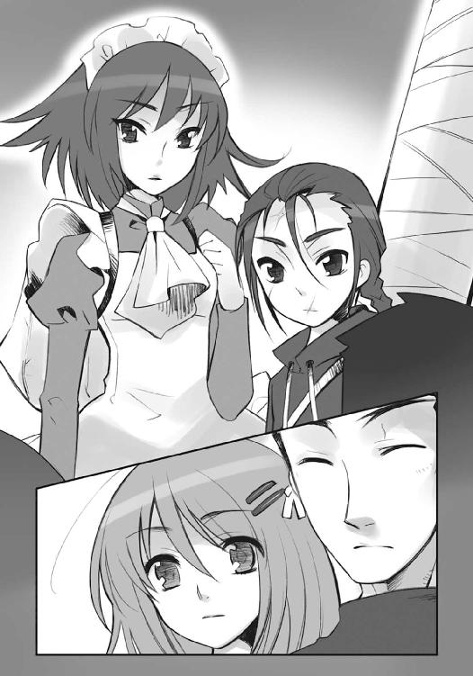
田中は携帯で時刻を確認して、一応の報告をする。
「さっき、佐藤から電話があって、あと一時間ほどでこっちに到着するってことですが......結局、間に合いませんでしたね」
「ま、次の機会にジックリ、再会の挨拶をすりゃいいさ」
マルコシアスが、含みのある言い方で受けた。
「そういうことでありますな。では、田中栄太氏」
ヴィルヘルミナは頷き、また改めて腰を折る。
「佐藤啓作氏に、これまでお世話になったことの御礼、またマージョリー・ドーの介抱について、くれぐれも宜しくお伝え頂きたいのであります。また当然のことながら、御身にも」
「多々感恩」
その頭に在るティアマトーにまで言われて、
「そんな、や、止めて、くださいよ......」
田中は込み上げるものを抑えるのに必死になった。思わず自分の頬を掌で打ち、
「ッ！ どうして欲しい、ってのは言いません！ ただ、あいつらのこと......頼みます」
お返しと、思い切り良く頭を下げる。
「ヒーッヒッヒ！ 上出来だぜ、エータ」
その脇から、マルコシアスが笑った。
「ま、追っ付け合流するからよ。多少は獲物、残しといてくれや」
軽さに隠した金打の誓いに、また腰を折って、二人は返す。
「了解したのであります」
「後日再会」
吉田も、今さら自分が役に立てない云々の話をして、旅立ちを濁す気はない。
「カルメルさん、ティアマトーさん、ここで待つ、なんて言いません。世界が変わる変わらない、という戦いなら、私たちの誰もが当事者になっているわけですし......だから、せめて」
今の自分に許される、最大のちっぽけな言葉を精一杯、贈る。
「皆に、幸運を」
「その言葉......有り難く受け取らせて頂くのであります」
「良縁欣懐」
またまた腰を深々と折ったヴィルヘルミナが顔を上げるのを見計らって、
「ああ、では、参りましょうか」
「ふむ、向こうではレベッカがお待ちかねじゃろう」
カムシンとベヘモットが促した。既にその足は、改札へと歩き始めている。自分たちの方は殊更な一別の言葉を受け取る間柄にない、と思っているらしい。
そんな彼らにも、
「よろしくお願いします！」
「言ってもムダだろうが、ほどほどにな、ヒッヒ！」
田中とマルコシアスは言い、
「カムシンさん！ ベヘモットさん！」
吉田も、歩き出す背中に、
「私、考え続けます！ なにかを見つけるまで......見つけて、なにかができるまで!!」
普段の彼女からは考えられない、大きな声で叫んでいた。
ヴィルヘルミナは、見事に成長した少年少女に、再び一礼して背を向け、
カムシンは振り返らぬまま、軽く手を振って、改札の中へと消えてゆく。
少年と少女は、いつまでも、その後ろ姿を見送っていた。
その頃、チューリヒの外界宿総司令部、ゾフィーの執務室に、
「大変！ 大変です！ 総司令官!!」
昨日来、いったい何度目かという急報を、フランソワが持ち込んでいた。
彼の背負う壺『スプレット』からグローガッハが、
「珍しいことに、吉報よ」
と簡潔に突っ込むことで、ようやくゾフィーは精神的疲労に淀む顔を上げた。
「吉報？」
「いったいなんのことですかな？」
タケミカヅチまで胡乱げな声になったのは、山積みになった書類の決済（後方支援を人間の構成員に任せられるとは言っても、やはり最終的な裁可は責任者まで回ってくるものである）と、思うように行かない兵団進発のための最終調整を、同時に行っていたためである。
フランソワは構わず、机の上の書類をぶちまけるような勢いで、
「これです!!」
持ってきた一枚の紙片をゾフィーの前に叩きつけ、
「これが本当なら、我々にも勝機が──」
「本当ならね」
またグローガッハに無情な突っ込みを受けた。
内容を読み取る前に、ゾフィーとタケミカヅチは、書類の形式の奇妙さに気がつく。
「これは......電報、ですね」
「ほう、まだこのようなものを受け付けていたのですな」
齎された吉報とやらは、折った厚紙の中央に簡素な文字列が記してある形式。さすがに紙も印刷も新しいものだったが、このサービスの存在自体が既に骨董品と言えた。
ゾフィーは久々に見た電文配達なるものを裏返して、真っ白なことに気がつく。どうやら封筒はフランソワの方で開けたらしい。情報精査の意味も込めて尋ねる。
「どこからです？」
と、尋ねられたフランソワが、曖昧な表情を作った。
「いえ、それがおかしな話でして......ハワイからなんです」
ゾフィーには意味が分からない。ハワイには当然、外界宿がある。
「それのどこが、おかしいんです？」
「ええ、つまり......」
もっともな疑問に、フランソワは説明を始めた。
「届いたのが電報ってことで、『なんでこんなものを送ったのか』とホノルル支部に問い合わせてみたんです。そうしたら、『そんな電文など送っていない』と言われまして」
「なるほど......」
分からないまま、とりあえずゾフィーは電文を読んでみる。
「......？ ？ ？」
ますます、分からなくなった。
最初に流し見したとき、意味が飛び込んでこなかったのも当然、電報に記されていたアルファベットと数字は、全く意味を成していなかったのである。
「まさか、これは......今どき暗号電文とでも？」
タケミカヅチが、戸惑い以上の、呆れた声で正解を言い当てた。
なぜか偉そうに胸を張って、フランソワは頷き、
「その通りです。解析班も『こりゃあ古典の勉強だ』って笑ってましたよ。どうやら百年ほど前に使われていた、原始的な機械式暗号だとか。我々が［革正団］との戦いでガチャガチャ回してたアレのようなものでしょう」
「それよりも、ほら！」
とグローガッハに促されて、懐からもう一枚、文書を取り出す。
「ああ、そうそう、こっちが解読結果です」
「最初からそれを渡して頂きたいものですな......」
タケミカヅチは回りくどい副官に言って、契約者ともども目を通した。
そして、そのまま数秒、熟読と沈思の間を置く。
「......」
「......」
フランソワのように無邪気に喜ばず、今までに得ていた情報、そこから得た推測、自身の勘まで加えて、傍らの壁にかかった世界地図を眺めつつ、さらに熟考する。
やがて、ゾフィーが呟く。
「これを、どう思います、タケミカヅチ氏？」
「君の考えている通りでしょうな、ゾフィー・サバリッシュ君」
タケミカヅチの答えに鋭く頷くと、沈思が嘘だったかのように命を飛ばす。
「今すぐ大会議室を空けて、ザムエル以下幕僚団を集合させて頂戴!!」
「そう、大至急ですぞ!!」
タケミカヅチまで怒鳴らせる、吉報の齎した予想外の効き目に、
「はっ、了解しました!!」
フランソワは飛び上がって答礼した。同時に二人の反応が、吉報が真実であることの裏づけであると確信し、自身も喜びに足を弾ませる。
副官が出て行った後の静寂をゾフィーは自分の笑いで破った。
「ふふっ、苦境に耐えていれば、たまには良い事もあるようですね」
「ヴィルヘルミナ・カルメルの報告書を読んでいればこその、説得力ですな」
結果論を取り澄まして言うタケミカヅチに、また笑う。
「絶望が、至難くらいには、変わったかしら？」
「まずはさらなる検証、喜ぶのはその後ですが......そうあれかし、とは思いますぞ」
沸々と滾る力を瞳に宿し、『震威の結い手』は立ち上がった。
輝く瞳は既に、広がる戦野と燃え上がる兵火を幻視している。
その行く手に、ようやく起死回生の灯火が点った気分だった。
エピローグ
一つは、見つけられた。
幸運、だろうか。望んでいたわけではない、偶然飛び込んできた結果だった、とはいえ、まず助けにはなるだろう。助けたいかどうかは、また別の話としても。
一つは、手こずりそうだ。
不可能、かもしれない。だが、どちらにせよ必要なのである。見つけられるかどうかは、時間との勝負になるだろう。その時間がどれほど残されているかは、不明だ。
一つだけ、逆らっている。
矛盾、ではない。どんな時に起きるか、どんな結果になるか、予想はつかない。だが、それも含めて試しているのだ。この程度の運がなくて、奇跡など起きようはずもない。
求められたことは、全てやってみせる。
でも、決して受容できないこともある。
それを運命の天秤か双六かで、決める。
どう転ぶのか......自分には分からない。
そう、誰にも分からないに、違いない。
想いを宿して、誰もが駆ける。
ぶつかりはじける、時に向かって。
世界は、静けさの彼方に、戦きを見る。
あとがき（すし詰め版その四）
はじめての方、はじめまして。久しぶりの方、お久しぶりです。
高橋弥七郎です。また皆様のお目にかかることができました。ありがたいことです。
さて本作は、痛快娯楽アクション小説です。今回は、来るべき戦いに向け、誰も彼もが思惑を行為に秘めて、あるいは示して走ります。次回から、戦争が始まります。
テーマは、描写的には「覚知と進発」、内容的には「きづく」です。これまで当たり前にあった、舞台に人に想い、それら全てが、大きな転換と変化に見舞われます。
担当の三木さんは、ワールドワイドな人です。趣味の旅行のみならず、仕事でも海外に行くことが増えました。今回も、あのシーンの長さについて、両者拮抗の魔力が相克（以下略）。
挿絵のいとうのいぢさんは、温かな絵を描かれる方です。前巻でも、シャナとヴィルヘルミナ、フィレスとヨーハンの絆を、絵に在る喜びから感じ取ることができました。この度も拙作への甚大なる御助力をいただけたことに、深く深く感謝いたします。
県名（地名）五十音順に、愛知のＭさん、御名前不明の方、石川のＹ田さん、茨城のＫ木さん（頑張ってください）、岩手のＭ野さん、愛媛のＫさん（Ｓさん？）、鹿児島のＳ冥さん、埼玉のＡ部さん、島根のＯ原さん、台湾のＫ尚さん、千葉のＭ原さん、東京のＳ久間さん、Ｙ崎さん、栃木のＫ谷さん（A1．まだ秘密です）、兵庫のＫ高さん、Ｍ下さん、Ｙ田さん（相変わらずお見事です）、広島のＫ保さん（おめでとうございます）、福井のＧ名さん、福岡のＨ谷さん（どうもありがとうございます）、福島のＳ名さん、香港のＰさん、寄せ書きをくださった皆さん、宮崎のＨ川さん、山形のＯ山さん、和歌山のＨさん、住所・御名前とも不明の方、残暑お見舞いを下さった方、いつも送ってくださる方、初めて送ってくださった方、いずれも大変励みにさせていただいております。どうもありがとうございます。アルファベット一文字は苗字一文字の方で、県が同じ場合はアルファベット順になっています。
当方、いささか事情あって、返信ができません。お手紙をしっかり読ませてもらっていることを右に示すことで、これに代えさせて頂きたいと思います。
それでは、今回はこのあたりで。
この本を手に取ってくれた読者の皆様に、無上の感謝を、変わらず。
また皆様のお目にかかれる日がありますように。
二〇〇八年八月 高橋弥七郎
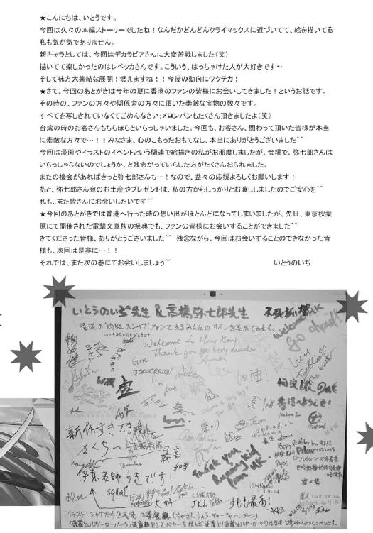
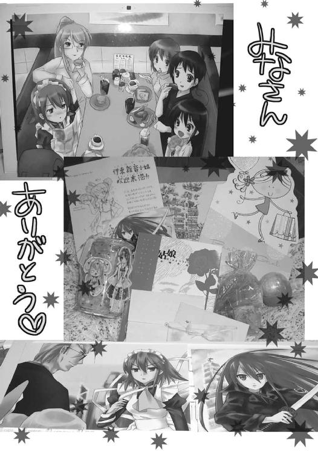
高橋弥七郎
最近半分くらい東京人な大阪人。豆ちしきその17ー。この下にある電撃文庫作品リストは、下までズラッと並べて書ききれなくなったら、「○〜○巻」に纏められるんやでー。纏めると随分スッキリしてまうもんやなー。
闇の底から眼光を投げかける作者
いとうのいぢ
最近某イギリス発の手作りコスメメーカーの泡風呂にハマってます。ウチの風呂は蛇口から湯が出るタイプでないので、豪快な犬かきのように手で泡を立てます。浸かる頃には既にのぼせそうです。泡立て器買うかな...
電撃文庫
灼眼のシャナ
高橋弥七郎
二〇十二年八月十日 配信
発行者 塚田正晃
発行所 株式会社アスキー・メディアワークス
〒一〇二−八五八四 東京都千代田区富士見一−八−十九
(C)2008 YASHICHIRO TAKAHASI／ASCII MEDIA WORKS
本書（電子版）に掲載されているコンテンツ（ソフトウェア／プログラム／データ／情報を含む）の著作権およびその他の権利は、すべて株式会社アスキー・メディアワークスおよび正当な権利を有する第三者に帰属しています。
法律の定めがある場合または権利者の明示的な承諾がある場合を除き、これらのコンテンツを複製・転載、改変・編集、翻案・翻訳、放送・出版、公衆送信（送信可能化を含む）・再配信、販売・頒布、貸与等に使用することはできません。